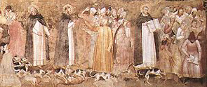
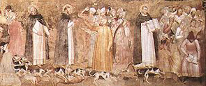

|  |
|---|
Textum Taurini 1954 editum
et automato translatum a Roberto Busa SJ in taenias magneticas
denuo recognovit Enrique Alarcón atque instruxit


|  |
|---|


[69960] Compendium theologiae, lib. 1 cap. 1 Aeterni patris verbum sua immensitate universa comprehendens, ut hominem per peccata minoratum in celsitudinem divinae gloriae revocaret, breve fieri voluit nostra brevitate assumpta, non sua deposita maiestate. Et ut a caelestis verbi capessenda doctrina nullus excusabilis redderetur, quod pro studiosis diffuse et dilucide per diversa Scripturae sanctae volumina tradiderat, propter occupatos sub brevi summa humanae salutis doctrinam conclusit. Consistit enim humana salus in veritatis cognitione, ne per diversos errores intellectus obscuretur humanus; in debiti finis intentione, ne indebitos fines sectando, a vera felicitate deficiat; in iustitiae observatione, ne per vitia diversa sordescat. Cognitionem autem veritatis humanae saluti necessariam brevibus et paucis fidei articulis comprehendit. Hinc est quod apostolus ad Roman. IX, 28, dicit: verbum abbreviatum faciet Deus super terram. Et hoc quidem est verbum fidei, quod praedicamus. Intentionem humanam brevi oratione rectificavit: in qua dum nos orare docuit, quomodo nostra intentio et spes tendere debet, ostendit. Humanam iustitiam quae in legis observatione consistit, uno praecepto caritatis consummavit. Plenitudo enim legis est dilectio. Unde apostolus, I Cor. XIII, 13, in fide, spe et caritate, quasi in quibusdam salutis nostrae compendiosis capitulis, totam praesentis vitae perfectionem consistere docuit, dicens: nunc autem manent fides, spes, caritas. Unde haec tria sunt, ut beatus Augustinus dicit, quibus colitur Deus. Ut igitur tibi, fili carissime Reginalde, compendiosam doctrinam de Christiana religione tradam, quam semper prae oculis possis habere, circa haec tria in praesenti opere tota nostra versatur intentio. Primum de fide, secundo de spe, tertio vero de caritate agemus. Hoc enim et apostolicus ordo habet, et ratio recta requirit. Non enim amor rectus esse potest, nisi debitus finis spei statuatur; nec hoc esse potest, si veritatis agnitio desit. Primo igitur necessaria est fides, per quam veritatem cognoscas; secundo spes, per quam in debito fine tua intentio collocetur; tertio necessaria est caritas, per quam tuus affectus totaliter ordinetur.
[69962] Compendium theologiae, lib. 1 cap. 2 Fides autem praelibatio quaedam est illius cognitionis quae nos in futuro beatos facit. Unde et apostolus dicit quod est substantia sperandarum rerum: quasi iam in nobis sperandas res, idest futuram beatitudinem, per modum cuiusdam inchoationis subsistere faciens. Illam autem beatificantem cognitionem circa duo cognita dominus consistere docuit, scilicet circa divinitatem Trinitatis, et humanitatem Christi; unde ad patrem loquens, dicit: haec est vita aeterna, ut cognoscant te Deum verum, et quem misisti Iesum Christum. Circa haec ergo duo tota fidei cognitio versatur: scilicet circa divinitatem Trinitatis, et humanitatem Christi. Nec mirum: quia Christi humanitas via est qua ad divinitatem pervenitur. Oportet igitur et in via viam cognoscere, per quam possit perveniri ad finem; et in patria Dei gratiarum actio sufficiens non esset, nisi viae, per quam salvati sunt, cognitionem haberent. Hinc est quod dominus discipulis dixit: et quo ego vado scitis, et viam scitis. Circa divinitatem vero tria cognosci oportet. Primo quidem essentiae unitatem, secundo personarum Trinitatem, tertio divinitatis effectus.
[69964] Compendium theologiae, lib. 1 cap. 3 Circa essentiae quidem divinae unitatem primo quidem credendum est Deum esse; quod ratione conspicuum est. Videmus enim omnia quae moventur, ab aliis moveri: inferiora quidem per superiora, sicut elementa per corpora caelestia; et in elementis quod fortius est, movet id quod debilius est; et in corporibus etiam caelestibus inferiora a superioribus aguntur. Hoc autem in infinitum procedere impossibile est. Cum enim omne quod movetur ab aliquo, sit quasi instrumentum quoddam primi moventis; si primum movens non sit, quaecumque movent, instrumenta erunt. Oportet autem, si in infinitum procedatur in moventibus et motis, primum movens non esse. Igitur omnia infinita moventia et mota erunt instrumenta. Ridiculum est autem etiam apud indoctos, ponere instrumenta moveri non ab aliquo principali agente: simile enim est hoc ac si aliquis circa constitutionem arcae vel lecti ponat serram vel securim absque carpentario operante. Oportet igitur primum movens esse, quod sit omnibus supremum; et hoc dicimus Deum.
[69966] Compendium theologiae, lib. 1 cap. 4 Ex hoc apparet quod necesse est Deum moventem omnia, immobilem esse. Cum enim sit primum movens, si moveretur, necesse esset se ipsum vel a se ipso, vel ab alio moveri. Ab alio quidem moveri non potest: oporteret enim esse aliquid movens prius eo; quod est contra rationem primi moventis. A se ipso autem si movetur, hoc potest esse dupliciter. Vel quod secundum idem sit movens et motum; aut ita quod secundum aliquid sui sit movens, et secundum aliquid motum. Horum quidem primum esse non potest. Cum enim omne quod movetur, inquantum huiusmodi, sit in potentia; quod autem movet, sit in actu; si secundum idem esset movens et motum, oporteret quod secundum idem esset in potentia et in actu; quod est impossibile. Secundum etiam esse non potest. Si enim esset aliquod movens, et alterum motum, non esset ipsum secundum se primum movens, sed ratione suae partis quae movet. Quod autem est per se, prius est eo quod non est per se. Non potest igitur primum movens esse, si ratione suae partis hoc ei conveniat. Oportet igitur primum movens omnino immobile esse. Ex iis etiam quae moventur et movent, hoc ipsum considerari potest. Omnis enim motus videtur ab aliquo immobili procedere, quod scilicet non movetur secundum illam speciem motus; sicut videmus quod alterationes et generationes et corruptiones quae sunt in istis inferioribus, reducuntur sicut in primum movens in corpus caeleste, quod secundum hanc speciem motus non movetur, cum sit ingenerabile et incorruptibile et inalterabile. Illud ergo quod est primum principium omnis motus, oportet esse immobile omnino.
[69968] Compendium theologiae, lib. 1 cap. 5 Ex hoc autem apparet ulterius Deum esse aeternum. Omne enim quod incipit esse vel desinit, per motum vel per mutationem hoc patitur. Ostensum est autem quod Deus est omnino immobilis. Est ergo aeternus.
[69970] Compendium theologiae, lib. 1 cap. 6 Per hoc autem ostenditur, quod Deum esse sit necessarium. Omne enim quod possibile est esse et non esse, est mutabile. Sed Deus est omnino immutabilis, ut ostensum est. Ergo Deum non est possibile esse et non esse. Omne autem quod est, et non est possibile ipsum non esse, necesse est ipsum esse: quia necesse esse, et non possibile non esse, idem significant. Ergo Deum esse est necesse. Item. Omne quod est possibile esse et non esse, indiget aliquo alio quod faciat ipsum esse: quia quantum est in se, se habet ad utrumque. Quod autem facit aliquid esse, est prius eo. Ergo omni quod est possibile esse et non esse, est aliquid prius. Deo autem non est aliquid prius. Ergo non est possibile ipsum esse et non esse, sed necesse est eum esse. Et quia aliqua necessaria sunt quae suae necessitatis causam habent, quam oportet eis esse priorem; Deus, qui est omnium primum, non habet causam suae necessitatis: unde Deum esse per se ipsum est necesse.
[69972] Compendium theologiae, lib. 1 cap. 7 Ex his autem manifestum est quod Deus est semper. Omne enim quod necesse est esse, semper est: quia quod non possibile est non esse, impossibile est non esse, et ita nunquam non est. Sed necesse est Deum esse, ut ostensum est. Ergo Deus semper est. Adhuc. Nihil incipit esse aut desinit nisi per motum vel mutationem. Deus autem omnino est immutabilis, ut probatum est. Impossibile est igitur quod esse inceperit, vel quod esse desinat. Item. Omne quod non semper fuit, si esse incipiat, indiget aliquo quod sit ei causa essendi: nihil enim se ipsum educit de potentia in actum, vel de non esse in esse. Deo autem nulla potest esse causa essendi, cum sit primum ens; causa enim prior est causato. Necesse est igitur Deum semper fuisse. Amplius. Quod convenit alicui non ex aliqua causa extrinseca, convenit ei per se ipsum. Esse autem Deo non convenit ex aliqua causa extrinseca, quia illa causa esset eo prior. Deus igitur habet esse per se ipsum. Sed ea quae per se sunt, semper sunt, et ex necessitate. Igitur Deus semper est.
[69974] Compendium theologiae, lib. 1 cap. 8 Per hoc autem manifestum est quod in Deo non est aliqua successio; sed eius esse totum est simul. Successio enim non invenitur nisi in illis quae sunt aliqualiter motui subiecta; prius enim et posterius in motu causant temporis successionem. Deus autem nullo modo est motui subiectus, ut ostensum est. Non igitur est in Deo aliqua successio, sed eius esse est totum simul. Item. Si alicuius esse non est totum simul, oportet quod ei aliquid deperire possit, et aliquid advenire. Deperit enim illud quod transit, et advenire ei potest illud quod in futurum expectatur. Deo autem nihil deperit nec accrescit, quia immobilis est. Igitur esse eius est totum simul. Ex his autem duobus apparet quod proprie est aeternus. Illud enim proprie est aeternum quod semper est, et eius esse est totum simul; secundum quod Boetius dicit, quod aeternitas est interminabilis vitae tota simul et perfecta possessio.
[69976] Compendium theologiae, lib. 1 cap. 9 Inde etiam apparet quod oportet primum movens simplex esse. Nam in omni compositione oportet esse duo, quae ad invicem se habeant sicut potentia ad actum. In primo autem movente, si est omnino immobile, impossibile est esse potentiam cum actu; nam unumquodque ex hoc quod est in potentia, mobile est. Impossibile igitur est primum movens compositum esse. Adhuc. Omni composito necesse est esse aliquid prius: nam componentia naturaliter sunt composito priora. Illud igitur quod omnium entium est primum, impossibile est esse compositum. Videmus etiam in ordine eorum quae sunt composita, simpliciora priora esse: nam elementa sunt naturaliter priora corporibus mixtis. Item etiam inter ipsa elementa primum est ignis, quod est simplicissimum. Omnibus autem elementis prius est corpus caeleste, quod in maiori simplicitate constitutum est, cum ab omni contrarietate sit purum. Relinquitur igitur quod primum entium oportet omnino simplex esse.
[69978] Compendium theologiae, lib. 1 cap. 10 Sequitur autem ulterius quod Deus sit sua essentia. Essentia enim uniuscuiusque rei est illud quod significat definitio eius. Hoc autem est idem cum re cuius est definitio, nisi per accidens, inquantum scilicet definito accidit aliquid quod est praeter definitionem ipsius; sicut homini accidit albedo praeter id quod est animal rationale et mortale: unde animal rationale et mortale est idem quod homo, sed non idem homini albo inquantum est album. In quocumque igitur non est invenire duo, quorum unum est per se et aliud per accidens, oportet quod essentia eius sit omnino idem cum eo. In Deo autem, cum sit simplex, ut ostensum est, non est invenire duo quorum unum sit per se, et aliud per accidens. Oportet igitur quod essentia eius sit omnino idem quod ipse. Item. In quocumque essentia non est omnino idem cum re cuius est essentia, est invenire aliquid per modum potentiae, et aliquid per modum actus, nam essentia formaliter se habet ad rem cuius est essentia, sicut humanitas ad hominem: in Deo autem non est invenire potentiam et actum, sed est actus purus; est igitur ipse sua essentia.
[69980] Compendium theologiae, lib. 1 cap. 11 Ulterius autem necesse est quod Dei essentia non sit aliud quam esse ipsius. In quocumque enim aliud est essentia, et aliud esse eius, oportet quod aliud sit quod sit, et aliud quo aliquid sit: nam per esse suum de quolibet dicitur quod est, per essentiam vero suam de quolibet dicitur quid sit: unde et diffinitio significans essentiam, demonstrat quid est res. In Deo autem non est aliud quod est, et aliud quo aliquid est; cum non sit in eo compositio, ut ostensum est. Non est igitur ibi aliud eius essentia, quam suum esse. Item. Ostensum est quod Deus est actus purus absque alicuius potentialitatis permixtione. Oportet igitur quod eius essentia sit ultimus actus: nam omnis actus qui est circa ultimum, est in potentia ad ultimum actum. Ultimus autem actus est ipsum esse. Cum enim omnis motus sit exitus de potentia in actum, oportet illud esse ultimum actum in quod tendit omnis motus: et cum motus naturalis in hoc tendat quod est naturaliter desideratum, oportet hoc esse ultimum actum quod omnia desiderant. Hoc autem est esse. Oportet igitur quod essentia divina, quae est actus purus et ultimus, sit ipsum esse.
[69982] Compendium theologiae, lib. 1 cap. 12 Hinc autem apparet quod Deus non sit in aliquo genere sicut species. Nam differentia addita generi constituit speciem, ergo cuiuslibet speciei essentia habet aliquid additum supra genus. Sed ipsum esse, quod est essentia Dei, nihil in se continet, quod sit alteri additum. Deus igitur non est species alicuius generis. Item. Cum genus contineat differentias potestate, in omni constituto ex genere et differentiis est actus permixtus potentiae. Ostensum est autem Deum esse purum actum absque permixtione potentiae. Non est igitur eius essentia constituta ex genere et differentiis; et ita non est in genere.
[69984] Compendium theologiae, lib. 1 cap. 13 Ulterius autem ostendendum est, quod neque possibile est Deum esse genus. Ex genere enim habetur quid est res, non autem rem esse: nam per differentias specificas constituitur res in proprio esse; sed hoc quod Deus est, est ipsum esse. Impossibile est ergo quod sit genus. Item. Omne genus differentiis aliquibus dividitur. Ipsius autem esse non est accipere aliquas differentias: differentiae enim non participant genus nisi per accidens, inquantum species constitutae per differentias genus participant. Non potest autem esse aliqua differentia quae non participet esse, quia non ens nullius est differentia. Impossibile est igitur quod Deus sit genus de multis speciebus praedicatum.
[69986] Compendium theologiae, lib. 1 cap. 14 Neque est possibile quod sit sicut una species de multis individuis praedicata. Individua enim diversa quae conveniunt in una essentia speciei, distinguuntur per aliqua quae sunt praeter essentiam speciei; sicut homines conveniunt in humanitate, sed distinguuntur ab invicem per id quod est praeter rationem humanitatis. Hoc autem in Deo non potest accidere: nam ipse Deus est sua essentia, ut ostensum est. Impossibile est igitur quod Deus sit species quae de pluribus individuis praedicetur. Item. Plura individua sub una specie contenta differunt secundum esse, et tamen conveniunt in una essentia. Ubicumque igitur sunt plura individua sub specie una, oportet quod aliud sit esse, et aliud essentia speciei. In Deo autem idem est esse et essentia, ut ostensum est. Impossibile est igitur quod Deus sit quaedam species de pluribus praedicata.
[69988] Compendium theologiae, lib. 1 cap. 15 Hinc etiam apparet quod necesse est unum Deum solum esse. Nam si sint multi dii, aut aequivoce aut univoce dicuntur. Si aequivoce, hoc non est ad propositum: nihil enim prohibet quod nos appellamus lapidem, alios appellare Deum. Si autem univoce, oportet quod conveniant vel in genere vel in specie. Ostensum est autem, quod Deus non potest esse genus neque species plura sub se continens. Impossibile est igitur esse plures deos. Item. Illud quo essentia communis individuatur, impossibile est pluribus convenire: unde licet possint esse plures homines, impossibile tamen est hunc hominem esse nisi unum tantum. Si igitur essentia per se ipsam individuatur, et non per aliquid aliud, impossibile est quod pluribus conveniat. Sed essentia divina per se ipsam individuatur, quia in Deo non est aliud essentia et quod est, cum ostensum sit quod Deus sit sua essentia: impossibile est ergo quod sit Deus nisi unus tantum. Item. Duplex est modus quo aliqua forma potest multiplicari: unus per differentias, sicut forma generalis, ut color in diversas species coloris; alius per subiectum, sicut albedo. Omnis ergo forma quae non potest multiplicari per differentias, si non sit forma in subiecto existens, impossibile est quod multiplicetur, sicut albedo, si subsisteret sine subiecto, non esset nisi una tantum. Essentia autem divina est ipsum esse, cuius non est accipere differentias, ut ostensum est. Cum igitur ipsum esse divinum sit quasi forma per se subsistens, eo quod Deus est suum esse, impossibile est quod essentia divina sit nisi una tantum. Impossibile est igitur esse plures deos.
[69990] Compendium theologiae, lib. 1 cap. 16 Patet autem ulterius quod impossibile est ipsum Deum esse corpus. Nam in omni corpore compositio aliqua invenitur: omne enim corpus est partes habens. Id igitur quod est omnino simplex, corpus esse non potest. Item. Nullum corpus invenitur movere nisi per hoc quod ipsum movetur, ut per omnia inducenti apparet. Si ergo primum movens est omnino immobile, impossibile est ipsum esse corpus.
[69992] Compendium theologiae, lib. 1 cap. 17 Neque etiam est possibile ipsum esse formam corporis, aut aliquam virtutem in corpore. Cum enim omne corpus mobile inveniatur, oportet corpore moto, ea quae sunt in corpore moveri saltem per accidens. Primum autem movens non potest nec per se nec per accidens moveri, cum oporteat ipsum omnino esse immobile, ut ostensum est. Impossibile est igitur quod sit forma, vel virtus in corpore. Item. Oportet omne movens, ad hoc quod moveat, dominium super rem quae movetur, habere: videmus enim quod quanto magis virtus movens excedit virtutem mobilis, tanto velocior est motus. Illud igitur quod est omnium moventium primum, oportet maxime dominari super res motas. Hoc autem esse non posset, si esset mobili aliquo modo alligatum; quod esse oporteret, si esset forma eius, vel virtus. Oportet igitur primum movens neque corpus esse, neque virtutem in corpore, neque formam in corpore. Hinc est quod Anaxagoras posuit intellectum immixtum, ad hoc quod imperet, et omnia moveat.
[69994] Compendium theologiae, lib. 1 cap. 18 Hinc etiam considerari potest ipsum esse infinitum, non privative quidem secundum quod infinitum est passio quantitatis, prout scilicet infinitum dicitur quod est natum habere finem ratione sui generis, sed non habet; sed negative, prout infinitum dicitur quod nullo modo finitur. Nullus enim actus invenitur finiri nisi per potentiam, quae est vis receptiva: invenimus enim formas limitari secundum potentiam materiae. Si igitur primum movens est actus absque potentiae permixtione, quia non est forma alicuius corporis, nec virtus in corpore, necessarium est ipsum infinitum esse. Hoc etiam ipse ordo qui in rebus invenitur, demonstrat: nam quanto aliqua in entibus sunt sublimiora, tanto suo modo maiora inveniuntur. Inter elementa enim quae sunt superiora, maiora quantitative inveniuntur, sicut etiam in simplicitate; quod eorum generatio demonstrat, cum multiplicata proportione ignis ex aere generetur, aer ex aqua, aqua autem ex terra. Corpus autem caeleste manifeste apparet totam quantitatem elementorum excedere. Oportet igitur id quod inter omnia entia primum est, et eo non potest esse aliud prius, infinitae quantitatis suo modo existere. Nec mirum, si id quod est simplex, et corporea quantitate caret, infinitum ponatur, et sua immensitate omnem corporis quantitatem excedere, cum intellectus noster, qui est incorporeus et simplex, omnium corporum quantitatem vi suae cognitionis excedat, et omnia circumplectatur. Multo igitur magis id quod est omnium primum, sua immensitate universa excedit, omnia complectens.
[69996] Compendium theologiae, lib. 1 cap. 19 Hinc etiam apparet Deum infinitae virtutis esse. Virtus enim consequitur essentiam rei: nam unumquodque secundum modum quo est, agere potest. Si igitur Deus secundum essentiam infinitus est, oportet quod eius virtus sit infinita. Hoc etiam apparet, si quis rerum ordinem diligenter inspiciat. Nam unumquodque quod est in potentia, secundum hoc habet virtutem receptivam et passivam; secundum vero quod actu est, habet virtutem activam. Quod igitur est in potentia tantum, scilicet materia prima, habet virtutem infinitam ad recipiendum, nihil de virtute activa participans; et supra ipsam quanto aliquid formalius est, tanto id abundat in virtute agendi: propter quod ignis inter omnia elementa est maxime activus. Deus igitur, qui est actus purus, nihil potentialitatis permixtum habens, in infinitum abundat in virtute activa super alia.
[69998] Compendium theologiae, lib. 1 cap. 20 Quamvis autem infinitum quod in quantitatibus invenitur, imperfectum sit, tamen quod Deus infinitus dicitur, summam perfectionem in ipso demonstrat. Infinitum enim quod est in quantitatibus ad materiam pertinet, prout fine privatur. Imperfectio autem accidit rei secundum quod materia sub privatione invenitur; perfectio autem omnis ex forma est. Cum igitur Deus ex hoc infinitus sit quod tantum forma vel actus est, nullam materiae vel potentialitatis permixtionem habens, sua infinitas ad summam perfectionem ipsius pertinet. Hoc etiam ex rebus aliis considerari potest. Nam licet in uno et eodem, quod de imperfecto ad perfectum perducitur, prius sit aliquid imperfectum quam perfectum, sicut prius est puer quam vir, tamen oportet quod omne imperfectum a perfecto trahat originem: non enim oritur puer nisi ex viro, nec semen nisi ex animali vel planta. Illud igitur quod est naturaliter omnibus prius, omnia movens, oportet omnibus perfectius esse.
[70000] Compendium theologiae, lib. 1 cap. 21 Unde etiam apparet quod omnes perfectiones in quibuscumque rebus inventas, necesse est originaliter et superabundanter in Deo esse. Nam omne quod movet aliquid ad perfectionem, prius habet in se perfectionem ad quam movet, sicut magister prius habet in se doctrinam quam aliis tradit. Cum igitur Deus sit primum movens, et omnia alia immoveat in suas perfectiones, necesse est omnes perfectiones rerum in ipso praeexistere superabundanter. Item. Omne quod habet aliquam perfectionem, si alia perfectio ei desit, est limitatum sub aliquo genere vel specie: nam per formam, quae est perfectio rei, quaelibet res in genere, vel specie collocatur. Quod autem est sub specie et genere constitutum, non potest esse infinitae essentiae: nam oportet quod ultima differentia per quam in specie ponitur, terminet eius essentiam; unde et ratio speciem notificans, definitio vel finis dicitur. Si ergo divina essentia infinita est, impossibile est quod alicuius tantum generis vel speciei perfectionem habeat, et aliis privetur, sed oportet quod omnium generum vel specierum perfectiones in ipso existant.
[70002] Compendium theologiae, lib. 1 cap. 22 Si autem colligamus ea quae superius dicta sunt, manifestum est quod omnes perfectiones in Deo sunt unum secundum rem. Ostensum est enim supra, Deum simplicem esse. Ubi autem est simplicitas, diversitas eorum quae insunt, esse non potest. Si ergo in Deo sunt omnium perfectiones, impossibile est quod sint diversae in ipso: relinquitur ergo quod omnes sint unum in eo. Hoc autem manifestum fit consideranti in virtutibus cognoscitivis. Nam superior vis secundum unum et idem est cognoscitiva omnium quae ab inferioribus viribus secundum diversa cognoscuntur: omnia enim quae visus, auditus, et ceteri sensus percipiunt, intellectus una et simplici virtute diiudicat. Simile etiam apparet in scientiis: nam cum inferiores scientiae secundum diversa genera rerum circa quae versatur eorum intentio, multiplicentur, una tamen scientia est in eis superior, ad omnia se habens, quae philosophia prima dicitur. Apparet etiam idem in potestatibus: nam in regia potestate, cum sit una, includuntur omnes potestates quae per diversa officia sub dominio regni distribuuntur. Sic igitur et perfectiones quae in inferioribus rebus secundum diversitatem rerum multiplicantur, oportet quod in ipso rerum vertice, scilicet Deo, uniantur.
[70004] Compendium theologiae, lib. 1 cap. 23 Inde etiam apparet quod in Deo nullum accidens esse potest. Si enim in eo omnes perfectiones sunt unum, ad perfectionem autem pertinet esse, posse, agere, et omnia huiusmodi, necesse est omnia in eo idem esse quod eius essentia. Nullum igitur eorum in eo est accidens. Item. Impossibile est infinitum esse perfectione, cuius perfectioni aliquid adiici potest. Si autem aliquid est cuius aliqua perfectio sit accidens, cum omne accidens superaddatur essentiae, oportet quod eius essentiae aliqua perfectio adiici possit. Non igitur invenitur in eius essentia perfectio infinita. Ostensum est autem, Deum secundum suam essentiam infinitae perfectionis esse. Nulla igitur in eo perfectio accidentalis esse potest, sed quidquid in eo est, substantia eius est. Hoc etiam facile est concludere ex summa simplicitate illius, et ex hoc quod est actus purus, et ex hoc quod est primum in entibus. Est enim aliquis compositionis modus accidentis ad subiectum. Id etiam quod subiectum est, non potest esse actus purus, cum accidens sit quaedam forma vel actus subiecti. Semper etiam quod est per se, prius est eo quod est per accidens. Ex quibus omnibus secundum supradicta haberi potest, quod in Deo nihil est quod secundum accidens dicatur.
[70006] Compendium theologiae, lib. 1 cap. 24 Per hoc autem apparet ratio multitudinis nominum quae de Deo dicuntur, licet ipse in se sit omnimode simplex. Cum enim intellectus noster essentiam eius in se ipsa capere non sufficiat, in eius cognitionem consurgit ex rebus quae apud nos sunt, in quibus inveniuntur diversae perfectiones, quarum omnium radix et origo in Deo una est, ut ostensum est. Et quia non possumus aliquid nominare nisi secundum quod intelligimus (sunt enim nomina intellectuum signa), Deum non possumus nominare nisi ex perfectionibus in aliis rebus inventis, quarum origo in ipso est: et quia hae in rebus istis multiplices sunt, oportet multa nomina Deo imponere. Si autem essentiam eius in se ipsa videremus, non requireretur nominum multitudo, sed esset simplex notitia eius, sicut est simplex essentia eius: et hoc in die gloriae nostrae expectamus, secundum illud Zachar. ultimo: in illa die erit dominus unus, et nomen eius unum.
[70008] Compendium theologiae, lib. 1 cap. 25 Ex his autem tria possumus considerare. Quorum primum est, quod diversa nomina, licet idem in Deo secundum rem significent, non tamen sunt synonima. Ad hoc enim quod nomina aliqua sint synonima, oportet quod significent eamdem rem, et eamdem intellectus conceptionem repraesentent. Ubi vero significatur eadem res secundum diversas rationes, idest apprehensiones quas habet intellectus de re illa, non sunt nomina synonima, quia non est penitus significatio eadem, cum nomina immediate significent conceptiones intellectus, quae sunt rerum similitudines. Et ideo cum diversa nomina dicta de Deo significent diversas conceptiones quas intellectus noster habet de ipso non sunt synonima, licet omnino eamdem rem significent.
[70010] Compendium theologiae, lib. 1 cap. 26 Secundum est: quod cum intellectus noster secundum nullam earum conceptionum quas nomina dicta de Deo significant, divinam essentiam perfecte capiat, impossibile est quod per definitiones horum nominum definiatur id quod est in Deo, sicut quod definitio sapientiae sit definitio potentiae divinae, et similiter in aliis. Quod alio modo etiam est manifestum. Omnis enim definitio ex genere et differentiis constat: id etiam quod proprie definitur, species est. Ostensum est autem, quod divina essentia non concluditur sub aliquo genere, nec sub aliqua specie. Unde non potest eius esse aliqua definitio.
[70012] Compendium theologiae, lib. 1 cap. 27 Tertium est quod nomina de Deo et aliis rebus dicta, non omnino univoce, nec omnino aequivoce dicuntur. Univoce namque dici non possunt, cum definitio eius quod de creatura dicitur, non sit definitio eius quod dicitur de Deo: oportet autem univoce dictorum eamdem definitionem esse. Similiter autem nec omnino aequivoce. In his enim quae sunt a casu aequivoca, idem nomen imponitur uni rei, nullo habito respectu ad rem aliam: unde per unum non potest ratiocinari de alio. Haec autem nomina quae dicuntur de Deo et de aliis rebus, attribuuntur Deo secundum aliquem ordinem quem habet ad istas res, in quibus intellectus significata eorum considerat; unde et per alias res ratiocinari de Deo possumus. Non igitur omnino aequivoce dicuntur ista de Deo et de aliis rebus, sicut ea quae sunt a casu aequivoca. Dicuntur igitur secundum analogiam, idest secundum proportionem ad unum. Ex eo enim quod alias res comparamus ad Deum sicut ad suam primam originem, huiusmodi nomina quae significant perfectiones aliarum, Deo attribuimus. Ex quo patet quod licet quantum ad nominis impositionem huiusmodi nomina per prius de creaturis dicantur, eo quod ex creaturis intellectus nomina imponens ascendit in Deum; tamen secundum rem significatam per nomen, per prius dicuntur de Deo, a quo perfectiones descendunt in alias res.
[70014] Compendium theologiae, lib. 1 cap. 28 Ulterius autem ostendendum est, quod Deus est intelligens. Ostensum est enim, quod in ipso praeexistunt omnes perfectiones quorumlibet entium superabundanter. Inter omnes autem perfectiones entium ipsum intelligere praecellere videtur, cum res intellectuales sint omnibus aliis potiores. Igitur oportet Deum esse intelligentem. Item. Ostensum est supra, quod Deus est actus purus absque potentialitatis permixtione. Materia autem est ens in potentia. Oportet igitur Deum esse omnino immunem a materia. Immunitas autem a materia est causa intellectualitatis: cuius signum est quod formae materiales efficiuntur intelligibiles actu per hoc quod abstrahuntur a materia et a materialibus conditionibus. Est igitur Deus intelligens. Item. Ostensum est, Deum esse primum movens. Hoc autem videtur esse proprium intellectus, nam intellectus omnibus aliis videtur uti quasi instrumentis ad motum: unde et homo suo intellectu utitur quasi instrumentis et animalibus et plantis et rebus inanimatis. Oportet igitur Deum, qui est primum movens, esse intelligentem.
[70016] Compendium theologiae, lib. 1 cap. 29 Cum autem in Deo non sit aliquid in potentia, sed in actu tantum, ut ostensum est, oportet quod Deus non sit intelligens neque in potentia neque in habitu, sed actu tantum: ex quo patet quod nullam in intelligendo patitur successionem. Cum enim aliquis intellectus successive multa intelligit, oportet quod dum unum intelligit actu, alterum intelligat in potentia. Inter ea enim quae simul sunt, non est aliqua successio. Si igitur Deus nihil intelligit in potentia, absque omni successione est eius intelligentia: unde sequitur quod omnia quaecumque intelligit, simul intelligat; et iterum, quod nihil de novo intelligat. Intellectus enim de novo aliquid intelligens, prius fuit intelligens in potentia. Inde etiam oportet quod intellectus eius non discursive intelligat, ut ex uno in cognitionem alterius deveniat, sicut intellectus noster ratiocinando patitur. Discursus enim talis in intellectu est, dum ex noto pervenimus in cognitionem ignoti, vel eius quod prius actu non considerabamus: quae in intellectu divino accidere non possunt.
[70018] Compendium theologiae, lib. 1 cap. 30 Patet etiam ex praedictis, quod Deus non intelligit per aliam speciem quam per essentiam suam. Omnis enim intellectus intelligens per speciem aliam a se, comparatur ad illam speciem intelligibilem sicut potentia ad actum, cum species intelligibilis sit perfectio eius faciens ipsum intelligentem actu. Si igitur in Deo nihil est in potentia, sed est actus purus, oportet quod non per aliam speciem, sed per essentiam suam intelligat; et inde sequitur quod directe et principaliter se ipsum intelligat. Essentia enim rei non ducit proprie et directe in cognitionem alicuius nisi eius cuius est essentia: nam per definitionem hominis proprie cognoscitur homo, et per definitionem equi, equus. Si igitur Deus est per essentiam suam intelligens, oportet quod id quod est intellectum ab eo directe et principaliter, sit ipse Deus. Et cum ipse sit sua essentia, sequitur quod in eo intelligens et quo intelligit et intellectum sint omnino idem.
[70020] Compendium theologiae, lib. 1 cap. 31 Oportet etiam quod ipse Deus sit suum intelligere. Cum enim intelligere sit actus secundus, ut considerare (primus enim actus est intellectus vel scientia), omnis intellectus qui non est suum intelligere, comparatur ad suum intelligere sicut potentia ad actum. Nam semper in ordine potentiarum et actuum quod est prius, est potentiale respectu sequentis, et ultimum est completivum, loquendo in uno et eodem, licet in diversis sit e converso: nam movens et agens comparatur ad motum et actum, sicut agens ad potentiam. In Deo autem, cum sit actus purus, non est aliquid quod comparetur ad alterum sicut potentia ad actum. Oportet ergo quod ipse Deus sit suum intelligere. Item. Quodammodo comparatur intellectus ad intelligere sicut essentia ad esse. Sed Deus est intelligens per essentiam; essentia autem sua est suum esse. Ergo eius intellectus est suum intelligere; et sic per hoc quod est intelligens, nulla compositio in eo ponitur, cum in eo non sint aliud intellectus, intelligere, et species intelligibilis. Et haec non sunt aliud quam eius essentia.
[70022] Compendium theologiae, lib. 1 cap. 32 Ulterius autem manifestum est quod necesse est Deum esse volentem. Ipse enim se ipsum intelligit, qui est bonum perfectum, ut ex dictis patet. Bonum autem intellectum ex necessitate diligitur. Hoc autem fit per voluntatem. Necesse est igitur Deum volentem esse. Item. Ostensum est supra, quod Deus est primum movens. Intellectus autem non utique movet nisi mediante appetitu; appetitus autem sequens intellectum, est voluntas. Oportet igitur Deum esse volentem.
[70024] Compendium theologiae, lib. 1 cap. 33 Patet autem quod oportet ipsam Dei voluntatem nihil aliud esse quam eius intellectum. Bonum enim intellectum, cum sit obiectum voluntatis, movet voluntatem, et est actus et perfectio eius. In Deo autem non differt movens et motum, actus et potentia, perfectio et perfectibile, ut ex superioribus patet. Oportet igitur voluntatem divinam esse ipsum bonum intellectum. Idem autem est intellectus divinus et essentia divina. Voluntas igitur Dei non est aliud quam intellectus divinus et essentia eius. Item. Intra alias perfectiones rerum praecipuae sunt intellectus et voluntas, cuius signum est quod inveniuntur in rebus nobilioribus. Perfectiones autem omnium rerum sunt in Deo unum, quod est eius essentia, ut supra ostensum est. Intellectus igitur et voluntas in Deo sunt idem quod eius essentia.
[70026] Compendium theologiae, lib. 1 cap. 34 Hinc etiam patet quod voluntas divina est ipsum velle Dei. Ostensum est enim, quod voluntas in Deo est idem quod bonum volitum ab ipso. Hoc autem esse non posset, nisi velle esset idem quod voluntas, cum velle insit voluntati ex volito. Est igitur Dei voluntas suum velle. Item. Voluntas Dei idem est quod eius intellectus et eius essentia. Intellectus autem Dei est suum intelligere, et essentia est suum esse. Ergo oportet quod voluntas sit suum velle. Et sic patet quod voluntas Dei simplicitati non repugnat.
[70028] Compendium theologiae, lib. 1 cap. 35 Ex his autem omnibus quae praedicta sunt, colligere possumus, quod Deus est unus, simplex, perfectus, infinitus, intelligens et volens. Quae quidem omnia in symbolo fidei brevi articulo comprehenduntur, cum nos profitemur credere in Deum unum omnipotentem. Cum enim hoc nomen Deus a nomine Graeco quod dicitur Theos, dictum videatur, quod quidem a theaste dicitur, quod est videre vel considerare; in ipso Dei nomine patet quod sit intelligens, et per consequens volens. In hoc autem quod dicimus eum unum, excluditur et deorum pluralitas, et omnis compositio: non enim est simpliciter unum nisi quod est simplex. Per hoc autem quod dicimus, omnipotentem, ostenditur quod sit infinitae virtutis, cui nihil subtrahi possit, in quo includitur quod sit et infinitus et perfectus: nam virtus rei perfectionem essentiae consequitur.
[70030] Compendium theologiae, lib. 1 cap. 36 Haec autem quae in superioribus de Deo tradita sunt, a pluribus quidem gentilium philosophis subtiliter considerata sunt, quamvis nonnulli eorum circa praedicta erraverint: et qui in iis verum dixerunt, post longam et laboriosam inquisitionem ad veritatem praedictam vix pervenire potuerunt. Sunt autem et alia nobis de Deo tradita in doctrina Christianae religionis, ad quam pervenire non potuerunt, circa quae secundum Christianam fidem ultra humanum sensum instruimur. Est autem hoc: quod cum sit Deus unus et simplex, ut ostensum est, est tamen Deus pater, et Deus filius, et Deus spiritus sanctus, et ii tres non tres dii, sed unus Deus est: quod quidem, quantum possibile nobis est, considerare intendimus.
[70032] Compendium theologiae, lib. 1 cap. 37 Accipiendum autem est ex his quae supra dicta sunt, quod Deus se ipsum intelligit et diligit. Item quod intelligere in ipso et velle non sit aliud quam eius esse. Quia vero Deus se ipsum intelligit, omne autem intellectum in intelligente est, oportet Deum in se ipso esse sicut intellectum in intelligente. Intellectum autem prout est in intelligente, est verbum quoddam intellectus: hoc enim exteriori verbo significamus quod interius in intellectu comprehendimus. Sunt enim, secundum philosophum, voces signa intellectuum. Oportet igitur in Deo ponere verbum ipsius.
[70034] Compendium theologiae, lib. 1 cap. 38 Id autem quod in intellectu continetur, ut interius verbum, ex communi usu loquendi conceptio intellectus dicitur. Nam corporaliter aliquid concipi dicitur quod in utero animalis viventis vivifica virtute formatur, mare agente, et femina patiente, in qua fit conceptio, ita quod ipsum conceptum pertinet ad naturam utriusque quasi secundum speciem conforme. Quod autem intellectus comprehendit, in intellectu formatur, intelligibili quasi agente, et intellectu quasi patiente. Et ipsum quod intellectu comprehenditur, intra intellectum existens, conforme est et intelligibili moventi, cuius quaedam similitudo est, et intellectui quasi patienti, secundum quod esse intelligibile habet. Unde id quod intellectu comprehenditur, non immerito conceptio intellectus vocatur.
[70036] Compendium theologiae, lib. 1 cap. 39 In hoc autem consideranda est differentia. Nam cum id quod intellectu concipitur, sit similitudo rei intellectae, eius speciem repraesentans, quaedam proles ipsius esse videtur. Quando igitur intellectus intelligit aliud a se, res intellecta est sicut pater verbi in intellectu concepti; ipse autem intellectus magis gerit similitudinem matris, cuius est ut in ea fiat conceptio. Quando vero intellectus intelligit seipsum, verbum conceptum comparatur ad intelligentem sicut proles ad patrem. Cum igitur de verbo loquamur secundum quod Deus se ipsum intelligit, oportet quod ipsum verbum comparetur ad Deum, cuius est verbum, sicut filius ad patrem.
[70038] Compendium theologiae, lib. 1 cap. 40 Hinc est quod in regula Catholicae fidei, patrem et filium in divinis confiteri docemur, cum dicitur: credo in Deum patrem et filium eius. Et ne aliquis audiens nomen patris et filii, carnalem generationem suspicaretur, secundum quam apud nos pater dicitur et filius, Ioannes Evangelista, cui revelata sunt secreta caelestia, loco filii ponit verbum, ut generationem intelligibilem cognoscamus.
[70040] Compendium theologiae, lib. 1 cap. 41 Considerandum est autem, quod cum in nobis sit aliud esse naturale et intelligere, oportet quod verbum in nostro intellectu conceptum, quod habet esse intelligibile tantum, alterius naturae sit quam intellectus noster, qui habet esse naturale. In Deo autem idem est esse et intelligere. Verbum igitur Dei quod est in Deo, cuius verbum est secundum esse intelligibile, idem esse habet cum Deo, cuius est verbum. Et per hoc oportet quod sit eiusdem essentiae et naturae cum ipso, et quod omnia quaecumque de Deo dicuntur, verbo Dei conveniant.
[70042] Compendium theologiae, lib. 1 cap. 42 Et inde est quod in regula Catholicae fidei docemur confiteri filium consubstantialem patri, per quod duo excluduntur. Primo quidem ut non intelligatur pater et filius secundum carnalem generationem, quae fit per aliquam decisionem substantiae filii a patre, ut sic oporteat filium non esse patri consubstantialem. Secundo ut etiam non intelligamus patrem et filium secundum generationem intelligibilem, prout verbum in mente nostra concipitur, quasi accidentaliter superveniens intellectui, et non de eius essentia existens.
[70044] Compendium theologiae, lib. 1 cap. 43 Eorum autem quae in essentia non differunt, impossibile est esse differentiam secundum speciem, tempus et naturam. Quia ergo verbum patri est consubstantiale, necesse est quod secundum nihil dictorum a patre differat. Et quidem secundum tempus differre non potest. Cum enim hoc verbum in Deo ponatur per hoc quod Deus se ipsum intelligit, sui verbum intelligibile concipiendo, oportet quod si aliquando Dei verbum non fuit, quod tunc Deus se ipsum non intellexerit. Semper autem quando Deus fuit, se intellexit, quia eius intelligere est eius esse. Semper ergo et verbum eius fuit: et ideo in regula Catholicae fidei dicimus: ex patre natum ante omnia saecula. Secundum speciem etiam est impossibile verbum Dei a Deo quasi minoratum differre, cum Deus seipsum non minus intelligat quam sit. Verbum autem perfectam speciem habet: quia id cuius est verbum, perfecte intelligitur. Oportet igitur Dei verbum omnino perfectum secundum speciem divinitatis esse. Inveniuntur autem quaedam quae ex aliis procedunt, perfectam eorum speciem non consequi, ex quibus procedunt. Uno modo sicut in generationibus aequivocis: a sole enim non generatur sol, sed quoddam animal. Ut ergo talis imperfectio a generatione divina excludatur, confitemur natum Deum de Deo. Alio modo quod procedit ex aliquo, differt ab eo propter defectum puritatis, dum scilicet ab eo quod est in se simplex et purum, per applicationem ad extraneam materiam aliquid producitur a prima specie deficiens: sicut ex domo quae est in mente artificis, fit domus quae est in materia; et a lumine recepto in corpore terminato, fit color; et ex igne adiuncto aliis elementis, fit mixtum; et ex radio per oppositionem corporis opaci, fit umbra. Ut hoc ergo a divina generatione excludatur, additur lumen de lumine. Tertio modo quod ex aliquo procedit, non consequitur speciem eius propter defectum veritatis, quia scilicet non vere recipit eius naturam, sed quamdam eius similitudinem tantum, sicut imago in speculo vel sculptura, aut etiam similitudo rei in intellectu vel sensu. Non enim imago hominis dicitur verus homo, sed similitudo; nec lapis est anima, ut dicit philosophus, sed species lapidis. Ut igitur haec a divina generatione excludantur, additur: Deum verum de Deo vero. Secundum naturam etiam impossibile est verbum a Deo differre, cum hoc sit Deo naturale quod se ipsum intelligat. Habet enim omnis intellectus aliqua quae naturaliter intelligit, sicut intellectus noster habet prima principia. Multo ergo magis Deus, cuius intelligere est suum esse, seipsum naturaliter intelligit. Verbum ergo ipsius naturaliter ex ipso est, non sicut ea quae praeter naturalem originem procedunt, ut a nobis procedunt res artificiales, quas facere dicimur. Quae vero naturaliter a nobis procedunt, dicimur generare, ut filius. Ne igitur Dei verbum non naturaliter a Deo procedere intelligatur, sed secundum potestatem suae voluntatis, additur: genitum, non factum.
[70046] Compendium theologiae, lib. 1 cap. 44 Quia ergo, ut ex praemissis patet, omnes praedictae divinae generationis conditiones ad hoc pertinent quod filius est patri consubstantialis, ideo post omnia subiungitur quasi summa universorum: consubstantialem patri.
[70048] Compendium theologiae, lib. 1 cap. 45 Sicut autem intellectum est in intelligente inquantum intelligitur, ita et amatum esse debet in amante inquantum amatur. Movetur enim quodammodo amans ab amato quadam intrinseca motione. Unde cum movens contingat id quod movetur, necesse est amatum intrinsecum esse amanti. Deus autem sicut intelligit seipsum, ita necesse est quod seipsum amet: bonum enim intellectum secundum se amabile est. Est igitur Deus in seipso tanquam amatum in amante.
[70050] Compendium theologiae, lib. 1 cap. 46 Cum autem intellectum sit in intelligente, et amatum in amante, diversa ratio eius quod est esse in aliquo, utrobique consideranda est. Cum enim intelligere fiat per assimilationem aliquam intelligentis ad id quod intelligitur, necesse est id quod intelligitur, in intelligente esse, secundum quod eius similitudo in ea consistit. Amatio autem fit secundum quamdam motionem amantis ab amato: amatum enim trahit ad seipsum amantem. Igitur non perficitur amatio in similitudine amati, sicut perficitur intelligere in similitudine intellecti, sed perficitur in attractione amantis ad ipsum amatum. Traductio autem similitudinis principalis fit per generationem univocam, secundum quam in rebus viventibus generans pater, et genitus filius nominatur. In eisdem etiam prima motio fit secundum speciem. Sicut igitur in divinis modus ille quo Deus est in Deo ut intellectum in intelligente, exprimitur per hoc quod dicimus filium, qui est verbum Dei; ita modum quo Deus est in Deo sicut amatum in amante exprimimus per hoc quod ponimus ibi spiritum, qui est amor Dei: et ideo secundum regulam Catholicae fidei credere in spiritum iubemur.
[70052] Compendium theologiae, lib. 1 cap. 47 Considerandum est autem, quod cum bonum amatum habeat rationem finis, ex fine autem motus voluntarius bonus vel malus reddatur, necesse est quod amor quo ipsum summum bonum amatur, quod Deus est, eminentem quamdam obtineat bonitatem, quae nomine sanctitatis exprimitur, sive dicatur sanctum quasi purum, secundum Graecos, quia in Deo est purissima bonitas ab omni defectu immunis: sive dicatur sanctum, idest firmum, secundum Latinos, quia in Deo est immutabilis bonitas, propter quod omnia quae ad Deum ordinantur, sancta dicuntur, sicut templum et vasa templi, et omnia divino cultui mancipata. Convenienter igitur spiritus, quo nobis insinuatur amor quo Deus se amat, spiritus sanctus nominatur. Unde et regula Catholicae fidei spiritum praedictum nominat sanctum, cum dicitur credo in spiritum sanctum.
[70054] Compendium theologiae, lib. 1 cap. 48 Sicut autem intelligere Dei est suum esse, ita et eius amare. Non igitur Deus amat seipsum secundum aliquid suae essentiae superveniens, sed secundum suam essentiam. Cum igitur amet seipsum secundum hoc quod ipse in seipso est ut amatum in amante, non est Deus amatus in Deo amante per modum accidentalem, sicut et res amatae sunt in nobis amantibus accidentaliter, sed Deus est in seipso ut amatum in amante substantialiter. Ipse ergo spiritus sanctus, quo nobis insinuatur divinus amor, non est aliquid accidentale in Deo, sed est res subsistens in essentia divina, sicut pater et filius. Et ideo in regula Catholicae fidei ostenditur coadorandus, et simul glorificandus cum patre et filio.
[70056] Compendium theologiae, lib. 1 cap. 49 Est etiam considerandum, quod ipsum intelligere ex virtute intellectus procedit. Secundum autem quod intellectus actu intelligit, est in ipso id quod intelligitur. Hoc igitur quod est intellectum esse in intelligente, procedit ex virtute intellectiva intellectus, et hoc est verbum ipsius, ut supra dictum est. Similiter etiam id quod amatur est in amante secundum quod amatur actu. Quod autem aliquid actu ametur, procedit et ex virtute amativa amantis, et ex bono amabili actu intellecto. Hoc igitur quod est amatum esse in amante, ex duobus procedit: scilicet ex principio amativo, et ex intelligibili apprehenso, quod est verbum conceptum de amabili. Cum igitur in Deo seipsum intelligente et amante verbum sit filius; is autem cuius est verbum, sit verbi pater, ut ex dictis patet, necesse est quod spiritus sanctus, qui pertinet ad amorem, secundum quod Deus in seipso est ut amatum in amante, ex patre procedat, et filio: unde et in symbolo dicitur: qui ex patre filioque procedit.
[70058] Compendium theologiae, lib. 1 cap. 50 Ex omnibus autem quae dicta sunt, colligi oportet, quod in divinitate quendam trinarium ponimus, qui tamen unitati et simplicitati essentiae non repugnat. Oportet enim concedi Deum esse ut existentem in sua natura, et intellectum et amatum a seipso. Aliter autem hoc accidit in Deo et in nobis. Quia enim in sua natura homo substantia est, intelligere autem et amare eius non sunt eius substantia, homo quidem, secundum quod in natura sua consideratur, quaedam res subsistens est; secundum autem quod est in suo intellectu, non est res subsistens, sed intentio quaedam rei subsistentis, et similiter secundum quod est in seipso ut amatum in amante. Sic ergo in homine tria quaedam considerari possunt: idest homo in natura sua existens, et homo in intellectu existens, et homo in amore existens; et tamen hi tres non sunt unum, quia intelligere eius non est eius esse, similiter autem et amare: et horum trium unus solus est res quaedam subsistens, scilicet homo in natura sua existens. In Deo autem idem est esse, intelligere, et amare. Deus ergo in esse suo naturali existens, et Deus existens in intellectu, et Deus existens in amore suo, unum sunt; unusquisque tamen eorum est subsistens. Et quia res subsistentes in intellectuali natura personas Latini nominare consueverunt, Graeci vero hypostases, propter hoc in divinis Latini dicunt tres personas, Graeci vero tres hypostases, patrem scilicet, et filium, et spiritum sanctum.
[70060] Compendium theologiae, lib. 1 cap. 51 Videtur autem ex praedictis repugnantia quaedam suboriri. Si enim in Deo ternarius aliquis ponitur, cum omnis numerus divisionem aliquam consequatur, oportebit in Deo aliquam differentiam ponere, per quam tres ab invicem distinguantur: et ita non erit in Deo summa simplicitas. Nam si in aliquo tres conveniunt, et in aliquo differunt, necesse est ibi esse compositionem, quod superioribus repugnat. Rursus si necesse est esse unum solum Deum, ut supra ostensum est, nulla autem res una oritur vel procedit a seipsa, impossibile videtur quod sit Deus genitus, vel Deus procedens. Falso igitur ponitur in divinis nomen patris et filii, et spiritus procedentis.
[70062] Compendium theologiae, lib. 1 cap. 52 Principium autem ad dissolvendum hanc dubitationem, hinc sumere oportet, quia secundum diversitatem naturarum est in diversis rebus diversus modus aliquid ex alio oriendi vel procedendi. In rebus enim vita carentibus, quia non sunt seipsa moventia, sed solum extrinsecus possunt moveri, oritur unum ex altero quasi exterius alteratum et immutatum, sicut ab igne generatur ignis, et ab aere aer. In rebus vero viventibus, quarum proprietas est ut seipsas moveant, generatur aliquid in ipso generante, sicut foetus animalium et fructus plantarum. Est autem considerare diversum modum processionis secundum diversas vires et processiones earumdem. Sunt enim quaedam vires in eis, quarum operationes non se extendunt nisi ad corpora, secundum quod materialia sunt, sicut patet de viribus animae vegetabilis, quae sunt nutritiva et augmentativa et generativa: et secundum hoc genus virium animae non procedit nisi aliquid corporale corporaliter distinctum, et tamen aliquo modo coniunctum in viventibus ei a quo procedit. Sunt autem quaedam vires, quarum operationes etsi corpora non transcendant, tamen se extendunt ad species corporum, sine materia eas recipiendo, sicut est in omnibus viribus animae sensitivae. Est enim sensus susceptivus specierum sine materia, ut philosophus dicit. Huiusmodi autem vires, licet quodammodo immaterialiter formas rerum suscipiant, non tamen eas suscipiunt absque organo corporali. Si qua igitur processio in huiusmodi viribus animae inveniatur, quod procedit, non erit aliquod corporale, vel corporaliter distinctum, vel coniunctum ei a quo procedit, sed incorporaliter et immaterialiter quodammodo, licet non omnino absque adminiculo organi corporalis. Sic enim procedunt in animalibus formationes rerum imaginatarum, quae quidem sunt in imaginatione non sicut corpus in corpore, sed quodam spirituali modo: unde et ab Augustino imaginaria visio spiritualis nominatur. Si autem secundum operationem imaginationis procedit aliquid non per modum corporalem, multo fortius hoc accidet per operationem partis intellectivae, quae nec etiam in sui operatione indiget organo corporali, sed omnino eius operatio immaterialis est. Procedit enim verbum secundum operationem intellectus, ut in ipso intellectu dicentis existens, non quasi localiter in eo contentum, nec corporaliter ab eo separatum, sed in ipso quidem existens secundum ordinem originis: et eadem ratio est de processione quae attenditur secundum operationem voluntatis, prout res amata existit in amante, ut supra dictum est. Licet autem vires intellectivae et sensitivae secundum propriam rationem sint nobiliores viribus animae vegetabilis, non tamen in hominibus aut in aliis animalibus secundum processionem imaginativae partis, aut sensitivae procedit aliquid subsistens in natura speciei eiusdem, sed hoc solum accidit per processionem quae fit secundum operationem animae vegetabilis: et hoc ideo est, quia in omnibus compositis ex materia et forma, multiplicatio individuorum in eadem specie fit secundum materiae divisionem. Unde in hominibus, et aliis animalibus, cum ex forma et materia componantur secundum corporalem divisionem, quae invenitur secundum processionem quae est secundum operationem animae vegetabilis, et non in aliis operationibus animae, multiplicantur individua secundum eamdem speciem. In rebus autem quae non sunt ex materia et forma compositae, non potest inveniri nisi distinctio formalis tantum. Sed si forma, secundum quam attenditur distinctio, sit substantia rei, oportet quod illa distinctio sit rerum subsistentium quarumdam; non autem si forma illa non sit rei subiecta. Est igitur commune in omni intellectu, ut ex dictis patet, quod oportet id quod in intellectu concipitur, ab intelligente quodammodo procedere, inquantum intelligens est, et sua processione ab ipso quodammodo distinguitur, sicut conceptio intellectus quae est intentio intellecta, distinguitur ab intellectu intelligente; et similiter oportet quod affectio amantis, per quam amatum est in amante, procedat a voluntate amantis inquantum est amans. Sed hoc proprium habet intellectus divinus, quod cum intelligere eius sit esse ipsius, oportet quod conceptio intellectus, quae est intentio intellecta, sit substantia eius, et similiter est de affectione in ipso Deo amante. Relinquitur ergo quod intentio intellectus divini, quae est verbum ipsius, non distinguitur a producente ipsum in hoc quod est esse secundum substantiam, sed solum in hoc quod est esse secundum rationem processionis unius ex alio: et similiter est de affectione amoris in Deo amante, quae ad spiritum sanctum pertinet. Sic igitur patet quod nihil prohibet verbum Dei, quod est filius, esse unum cum patre secundum substantiam, et tamen distinguitur ab eo secundum relationem processionis, ut dictum est. Unde et manifestum est quod eadem res non oritur neque procedit a seipsa: quia filius, secundum quod a patre procedit, ab eo distinguitur; et eadem ratio est de spiritu sancto per comparationem ad patrem et filium.
[70064] Compendium theologiae, lib. 1 cap. 53 Istae autem relationes, quibus pater et filius et spiritus sanctus ab invicem distinguuntur, sunt relationes reales et non rationis tantum. Illae enim relationes sunt rationis tantum quae non consequuntur ad aliquid quod est in rerum natura, sed ad aliquid quod est in apprehensione tantum, sicut dextrum et sinistrum in lapide non sunt relationes reales, sed rationis tantum, quia non consequuntur aliquam virtutem realem in lapide existentem, sed solum acceptionem apprehendentis lapidem ut sinistrum quia est alicui animali ad sinistram; sed sinistrum et dextrum in animali sunt relationes reales, quia consequuntur virtutes quasdam in determinatis partibus animalis inventas. Cum igitur relationes praedictae, quibus pater et filius et spiritus sanctus distinguuntur, sint realiter in Deo existentes, oportet quod relationes praedictae sint relationes reales, non rationis tantum.
[70066] Compendium theologiae, lib. 1 cap. 54 Non est autem possibile quod sint accidentaliter inhaerentes: tum quia operationes ad quas sequuntur directe relationes, sunt ipsa Dei substantia, tum etiam quia supra ostensum est quod in Deo nullum accidens esse potest. Unde si relationes praedictae realiter sunt in Deo, oportet quod non sint accidentaliter inhaerentes, sed subsistentes. Quomodo autem id quod est in aliis rebus accidens, in Deo substantialiter esse possit, ex praemissis manifestum est.
[70068] Compendium theologiae, lib. 1 cap. 55 Quia ergo in divinis distinctio est per relationes quae non accidunt, sed sunt subsistentes, rerum autem subsistentium in natura quacumque intellectuali est distinctio personalis, necesse est quod per praedictas relationes in Deo personalis distinctio constituatur. Pater igitur et filius et spiritus sanctus sunt tres personae, et similiter tres hypostases, quia hypostasis significat aliquid subsistens completum.
[70070] Compendium theologiae, lib. 1 cap. 56 Plures autem in divinis personas tribus esse impossibile est, cum non sit possibile divinas personas multiplicari per substantiae divisionem, sed solum per alicuius processionis relationem, nec cuiuscumque processionis, sed talis quae non terminetur ad aliquod extrinsecum. Nam si terminaretur ad aliquod extrinsecum, non haberet naturam divinam, et sic non posset esse persona aut hypostasis divina. Processio autem in Deo ad exterius non terminata non potest accipi nisi aut secundum operationem intellectus, prout procedit verbum; aut secundum operationem voluntatis, prout procedit amor, ut ex dictis patet. Non igitur potest esse aliqua persona divina procedens, nisi vel ut verbum, quod dicimus filium, vel ut amor, quod dicimus spiritum sanctum. Rursus. Cum Deus omnia uno intuitu per suum intellectum comprehendat, et similiter uno actu voluntatis omnia diligat, impossibile est in Deo esse plura verba aut plures amores. Si igitur filius procedit ut verbum, et spiritus sanctus procedit ut amor, impossibile est in Deo esse plures filios, vel plures spiritus sanctos. Item. Perfectum est extra quod nihil est. Quod igitur extra se aliquid sui generis patitur, non simpliciter perfectum est, propter quod et ea quae sunt simpliciter in suis naturis perfecta, numero non multiplicantur, sicut Deus, sol et luna, et huiusmodi. Oportet autem tam filium quam spiritum sanctum esse simpliciter perfectum, cum uterque eorum sit Deus, ut ostensum est. Impossibile est igitur esse plures filios, aut plures spiritus sanctos. Praeterea. Illud per quod aliquid subsistens est hoc aliquid, et ab aliis distinctum, impossibile est quod numero multiplicetur, eo quod individuum de pluribus dici non potest. Sed filiatione filius est haec persona divina in se subsistens et ab aliis distincta, sicut per principia individuantia, Socrates est haec persona humana. Sicut ergo principia individuantia, quibus Socrates est hic homo, non possunt convenire nisi uni, ita etiam filiatio in divinis non potest nisi uni convenire. Et simile est de relatione patris et spiritus sancti. Impossibile est igitur in divinis esse plures patres, aut plures filios, aut plures spiritus sanctos. Adhuc. Ea quae sunt unum secundum formam non multiplicantur numero nisi per materiam, sicut multiplicatur albedo per hoc quod est in pluribus subiectis. In divinis autem non est materia. Quidquid igitur est unum specie et forma in divinis, impossibile est multiplicari secundum numerum. Huiusmodi autem sunt paternitas et filiatio et spiritus sancti processio. Impossibile est igitur in divinis esse plures patres, aut filios, aut spiritus sanctos.
[70072] Compendium theologiae, lib. 1 cap. 57 Huiusmodi autem existente numero personarum in divinis, necesse est personarum proprietates, quibus ab invicem distinguuntur, in aliquo numero esse, quarum tres oportet patri convenire. Una qua distinguatur a filio solo, et haec est paternitas; alia qua distinguatur a duobus, scilicet filio et spiritu sancto, et haec est innascibilitas, quia pater non est Deus procedens ab alio, filius autem et spiritus sanctus ab alio procedunt; tertia est qua ipse pater cum filio a spiritu sancto distinguitur; et haec dicitur communis spiratio. Proprietatem autem qua pater differat a solo spiritu sancto, non est assignare, eo quod pater et filius sunt unum principium spiritus sancti, ut ostensum est.
[70074] Compendium theologiae, lib. 1 cap. 58 Filio autem necesse est duas convenire. Unam scilicet qua distinguatur a patre, et haec est filiatio; aliam qua simul cum patre distinguatur a spiritu sancto, quae est communis spiratio. Non autem est assignare proprietatem qua distinguatur a solo spiritu sancto, quia, ut iam dictum est, filius et pater sunt unum principium spiritus sancti. Similiter etiam non est assignare proprietatem unam qua spiritus sanctus et filius simul distinguantur a patre. Pater enim ab eis distinguitur una proprietate, scilicet innascibilitate, inquantum est non procedens. Sed quia filius et spiritus sanctus non una processione procedunt, sed pluribus, duabus proprietatibus a patre distinguuntur. Spiritus autem sanctus habet unam proprietatem tantum, qua distinguitur a patre et filio, et dicitur processio. Quod autem non possit esse aliqua proprietas qua spiritus sanctus distinguatur a filio solo, vel a patre solo, ex dictis patet. Sunt igitur quinque quae personis attribuuntur: scilicet innascibilitas, paternitas, filiatio, spiratio et processio.
[70076] Compendium theologiae, lib. 1 cap. 59 Haec autem quinque notiones personarum dici possunt, eo quod per eas nobis innotescit in divinis distinctio personarum, non tamen haec quinque possunt dici proprietates, si hoc in proprietatis ratione observetur, ut proprium esse dicatur quod convenit uni soli: nam communis conspiratio patri et filio convenit. Sed secundum illum modum quo aliquid dicitur proprium aliquibus per respectum ad aliud sicut bipes homini et avi per respectum ad quadrupedia, nihil prohibet etiam communem spirationem proprietatem dici. Quia vero in divinis personae solis relationibus distinguuntur, notiones autem sunt quibus divinarum personarum distinctio innotescit, necesse est notiones aliqualiter ad relationem pertinere. Sed earum quatuor verae relationes sunt, quibus divinae personae ad invicem referuntur. Quinta vero notio, scilicet innascibilitas, ad relationem pertinet, sicut relationis negatio; nam negationes ad genus affirmationum reducuntur, et privationes ad genus habituum, sicut non homo ad genus hominis, et non album ad genus albedinis. Sciendum tamen quod relationum, quibus personae ad invicem referuntur, quaedam nominatae sunt, ut paternitas et filiatio, quae proprie relationem significant; quaedam vero innominatae, illae scilicet quibus pater et filius ad spiritum sanctum referuntur, et spiritus sanctus ad eos; sed loco relationum utimur nominibus originum. Manifestum est enim quod communis spiratio et processio originem significant; non autem relationes originem consequentes: quod potest perpendi ex relationibus patris et filii. Generatio enim significat activam originem, quam consequitur paternitatis relatio; nativitas vero significat passivam filii, quam consequitur relatio filiationis. Similiter igitur ad communem spirationem sequitur aliqua relatio, et etiam ad processionem. Sed quia relationes innominatae sunt, utimur nominibus actuum pro nominibus relationum.
[70078] Compendium theologiae, lib. 1 cap. 60 Considerandum autem, quod quamvis relationes subsistentes in divinis sint ipsae personae divinae, ut supra dictum est, non tamen oportet esse quinque, vel quatuor personas secundum numerum relationum. Numerus enim distinctionem aliquam consequitur. Sicut autem unum est indivisibile vel indivisum, ita pluralitas est divisibile vel divisum. Ad pluralitatem enim personarum requiritur quod relationes vim distinctivam habeant ratione oppositionis, nam formalis distinctio non est nisi per oppositionem. Si ergo praedictae relationes inspiciantur, paternitas et filiatio oppositionem ad invicem habent relativam, unde non se compatiuntur in eodem supposito: propter hoc oportet quod paternitas et filiatio sint duae personae subsistentes. Innascibilitas autem opponitur quidem filiationi, non autem paternitati: unde paternitas et innascibilitas possunt uni et eidem personae convenire. Similiter communis spiratio non opponitur neque paternitati, neque filiationi, nec etiam innascibilitati. Unde nihil prohibet communem spirationem inesse et personae patris, et personae filii. Propter quod communis spiratio non est persona subsistens seorsum a persona patris et filii. Processio autem oppositionem relativam habet ad communem spirationem. Unde, cum communis spiratio conveniat patri et filio, oportet quod processio sit alia persona a persona patris et filii. Hinc autem patet quare Deus non dicitur quinus, propter quinarium numerum notionum, sed dicitur trinus propter trinarium personarum. Quinque enim notiones non sunt quinque subsistentes res, sed tres personae sunt tres res subsistentes. Licet autem uni personae plures notiones aut proprietates conveniant, una tamen sola est quae personam constituit. Non enim sic constituitur persona proprietatibus quasi ex pluribus constituta, sed eo quod proprietas ipsa relativa subsistens persona est. Si igitur intelligerentur plures proprietates ut seorsum per se subsistentes, essent iam plures personae, et non una. Oportet igitur intelligi, quod plurium proprietatum seu notionum uni personae convenientium illa quae procedit secundum ordinem naturae, personam constituit; aliae vero intelliguntur ut personae iam constitutae inhaerentes. Manifestum est autem quod innascibilitas non potest esse prima notio patris quae personam eius constituat, tum quia nihil negatione constituitur, tum quia naturaliter affirmatio negationem praecedit. Communis autem spiratio ordine naturae praesupponit paternitatem et filiationem, sicut processio amoris processionem verbi. Unde nec communis spiratio potest esse prima notio patris, sed nec filii. Relinquitur ergo quod prima notio patris sit paternitas, filii autem filiatio, spiritus autem sancti sola processio notio est. Relinquitur igitur quod tres sunt notiones constituentes personas, scilicet paternitas, filiatio et processio. Et has quidem notiones necesse est proprietates esse. Id enim quod personam constituit, oportet soli illi personae convenire, principia enim individuationis non possunt pluribus convenire. Dicuntur igitur praedictae tres notiones personales proprietates, quasi constituentes tres personas modo praedicto. Aliae vero dicuntur proprietates seu notiones personarum, non autem personales, quia personam non constituunt.
[70080] Compendium theologiae, lib. 1 cap. 61 Ex hoc autem apparet quod remotis per intellectum proprietatibus personalibus, non remanent hypostases. In resolutione enim quae fit per intellectum, remota forma, remanet subiectum formae, sicut remota albedine remanet superficies, qua remota, remanet substantia, cuius forma remota remanet materia prima; sed remoto subiecto nihil remanet. Proprietates autem personales sunt ipsae personae subsistentes, nec constituunt personas, quasi praeexistentibus suppositis advenientes: quia nihil in divinis potest esse distinctum quod absolute dicitur, sed solum quod relativum est. Relinquitur igitur quod proprietatibus remotis personalibus per intellectum, non remanent aliquae hypostases distinctae; sed remotis notionibus non personalibus, remanent hypostases distinctae.
[70082] Compendium theologiae, lib. 1 cap. 62 Si quis autem quaerat, utrum remotis per intellectum proprietatibus personalibus remaneat essentia divina, dicendum est quod quodam modo remanet, quodam vero modo non. Est enim duplex resolutio quae fit per intellectum. Una secundum abstractionem formae a materia, in qua quidem proceditur ab eo quod formalius est, ad id quod est materialius: nam id quod est primum subiectum, ultimo remanet; ultima vero forma primo removetur. Alia vero resolutio est secundum abstractionem universalis a particulari, quae quodammodo contrario ordine se habet: nam prius removentur conditiones materiales individuantes, ut accipiatur quod commune est. Quamvis autem in divinis non sit materia et forma, neque universale et particulare, est tamen in divinis commune et proprium, et suppositum naturae communi. Personae enim comparantur ad essentiam, secundum modum intelligendi, sicut supposita propria ad naturam communem. Secundum igitur primum modum resolutionis quae fit per intellectum, remotis proprietatibus personalibus, quae sunt ipsae personae subsistentes, non remanet natura communis; modo autem secundo remanet.
[70084] Compendium theologiae, lib. 1 cap. 63 Potest autem ex dictis manifestum esse, qualis sit ordo secundum intellectum actuum personalium ad proprietates personales. Proprietates enim personales sunt subsistentes personae: persona autem subsistens in quacumque natura agit communicando suam naturam in virtute suae naturae; nam forma speciei est principium generandi simile secundum speciem. Cum igitur actus personales ad communicationem naturae divinae pertineant, oportet quod persona subsistens communicet naturam communem virtute ipsius naturae. Et ex hoc duo possunt concludi. Quorum unum est quod potentia generativa in patre sit ipsa natura divina, nam potentia quodcumque agendi, est principium cuius virtute aliquid agitur. Aliud est quod actus personalis, scilicet generatio, secundum modum intelligendi praesupponit et naturam divinam et proprietatem personalem patris, quae est ipsa hypostasis patris, licet huiusmodi proprietas, inquantum relatio est, ex actu consequatur. Unde si in patre attendatur quod subsistens persona est, dici potest, quod quia pater est, generat; si autem attendatur quod relationis est, e converso dicendum videtur, quod quia generat, pater est.
[70086] Compendium theologiae, lib. 1 cap. 64 Sciendum est tamen, quod alio modo oportet accipere ordinem generationis activae ad paternitatem, alio modo generationis passivae, sive nativitatis ad filiationem. Generatio enim activa praesupponit ordine naturae personam generantis; sed generatio passiva sive nativitas ordine naturae praecedit personam genitam, quia persona genita nativitate sua habet ut sit. Sic igitur generatio activa secundum modum intelligendi praesupponit paternitatem, secundum quod est constitutiva personae patris; nativitas autem non praesupponit filiationem, secundum quod est constitutiva personae filii, sed secundum intelligendi modum praecedit eam utroque modo, scilicet et secundum quod est constitutiva personae, et secundum quod est relatio. Et similiter intelligendum est de his quae pertinent ad processionem spiritus sancti.
[70088] Compendium theologiae, lib. 1 cap. 65 Ex ordine autem assignato inter actus notionales et proprietates notionales, non intendimus quod actus notionales, secundum rem a proprietatibus personalibus differant, sed solum secundum modum intelligendi. Sicut enim intelligere Dei est ipse Deus intelligens, ita et generatio patris est ipse pater generans, licet alio modo significentur. Similiter etiam licet una persona plures notiones habeat, non tamen in ea est aliqua compositio. Innascibilitas enim, cum sit proprietas negativa, nullam compositionem facere potest. Duae vero relationes quae sunt in persona patris, scilicet paternitas et communis spiratio, sunt quidem idem secundum rem prout comparantur ad personam patris: sicut enim paternitas est pater, ita et communis spiratio in patre est pater, et in filio est filius. Differunt autem secundum ea ad quae referuntur: nam paternitate pater refertur ad filium, communi spiratione ad spiritum sanctum; et similiter filius filiatione quidem ad patrem, communi vero spiratione ad spiritum sanctum.
[70090] Compendium theologiae, lib. 1 cap. 66 Oportet autem quod ipsae proprietates relativae sint ipsa divina essentia. Proprietates enim relativae sunt ipsae personae subsistentes. Persona autem subsistens in divinis non potest esse aliud quam divina essentia: essentia autem divina est ipse Deus, ut supra ostensum est. Unde relinquitur quod proprietates relativae sint secundum rem idem quod divina essentia. Item. Quidquid est in aliquo praeter essentiam eius, inest ei accidentaliter. In Deo autem nullum accidens esse potest, ut supra ostensum est. Proprietates igitur relativae non sunt aliud ab essentia divina secundum rem.
[70092] Compendium theologiae, lib. 1 cap. 67 Non autem dici potest quod proprietates praedictae non sint in personis, sed exterius ad eas se habeant, sicut Porretani dixerunt. Relationes enim reales oportet esse in rebus relatis, quod quidem in creaturis manifestum est: sunt enim relationes reales in eis sicut accidentia in subiectis. Relationes autem istae quibus personae distinguuntur in divinis, sunt relationes reales, ut supra ostensum est. Igitur oportet quod sint in personis divinis, non quidem sicut accidentia: nam et alia quae in creaturis sunt accidentia, ad Deum translata a ratione accidentium cadunt, ut sapientia et iustitia, et alia huiusmodi, ut supra ostensum est. Praeterea. In divinis non potest esse distinctio nisi per relationes: nam quaecumque absolute dicuntur, communia sunt. Si igitur relationes exterius se habeant ad personas, nulla in ipsis personis distinctio remanebit. Sunt igitur proprietates relativae in personis, ita tamen quod sunt ipsae personae, et etiam ipsa essentia divina; sicut sapientia et bonitas dicuntur esse in Deo, et sunt ipse Deus et essentia divina, ut supra ostensum est.
[70094] Compendium theologiae, lib. 1 cap. 68 His igitur consideratis quae ad unitatem essentiae divinae pertinent et ad personarum Trinitatem, restat de effectibus Trinitatis considerandum. Primus autem effectus Dei in rebus est ipsum esse, quod omnes alii effectus praesupponunt, et supra quod fundantur. Necesse est autem omne quod aliquo modo est, a Deo esse. In omnibus autem ordinatis hoc communiter invenitur, quod id quod est primum et perfectissimum in aliquo ordine, est causa eorum quae sunt post in ordine illo; sicut ignis, qui est maxime calidus, est causa caliditatis in reliquis corporibus calidis. Semper enim imperfecta a perfectis inveniuntur habere originem, sicut semina ab animalibus et plantis. Ostensum est autem supra, quod Deus est primum et perfectissimum ens: unde oportet quod sit causa essendi omnibus quae esse habent. Adhuc. Omne quod habet aliquid per participationem, reducitur in id quod habet illud per essentiam, sicut in principium et causam; sicut ferrum ignitum participat igneitatem ab eo quod est ignis per essentiam suam. Ostensum est autem supra, quod Deus est ipsum suum esse, unde esse convenit ei per suam essentiam, omnibus autem aliis convenit per participationem: non enim alicuius alterius essentia est suum esse, quia esse absolutum et per se subsistens non potest esse nisi unum, ut supra ostensum est. Igitur oportet Deum esse causam existendi omnibus quae sunt.
[70096] Compendium theologiae, lib. 1 cap. 69 Hoc autem ostendit quod Deus in creando res non praeexigit materiam ex qua operetur. Nullum enim agens praeexigit ad suam actionem id quod per suam actionem producit, sed solum ea praeexigit quae sua actione producere non potest: aedificator enim lapides et ligna ad suam actionem praeexigit, quia ea sua actione producere non potest; domum autem producit in agendo, sed non praesupponit. Necesse est autem materiam produci per actionem Dei, cum ostensum sit, quod omne quod quolibet modo est, Deum habeat causam existendi. Relinquitur igitur quod Deus in agendo materiam non praesupponit. Adhuc. Actus naturaliter prior est potentia, unde et per prius competit sibi ratio principii. Omne autem principium quod in creando aliud principium praesupponit, per posterius habet rationem principii. Cum igitur Deus sit principium rerum sicut actus primus, materia autem sicut ens in potentia, inconveniens est quod Deus in agendo materiam praesupponat. Item. Quanto aliqua causa est magis universalis, tanto effectus eius est universalior. Nam causae particulares, effectus universalium causarum ad aliquid determinatum appropriant, quae quidem determinatio ad effectum universalem comparatur sicut actus ad potentiam. Omnis igitur causa quae facit aliquid esse in actu, praesupposito eo quod est in potentia ad actum illum, est causa particularis respectu alicuius universalioris causae. Hoc autem Deo non competit, cum ipse sit causa prima, ut supra ostensum est. Non igitur praeexigit materiam ad suam actionem. Ipsius igitur est producere res in esse ex nihilo, quod est creare: et inde est quod fides Catholica eum creatorem confitetur.
[70098] Compendium theologiae, lib. 1 cap. 70 Hoc etiam apparet, quod soli Deo convenit esse creatorem. Nam creare illi causae convenit quae aliam universaliorem non praesupponit, ut ex dictis patet. Hoc autem soli Deo competit. Solus igitur ipse est creator. Item. Quanto potentia est magis remota ab actu, tanto oportet esse maiorem virtutem per quam reducatur in actum. Sed quantacumque distantia potentiae ad actum detur, semper remanet maior distantia, si ipsa potentia subtrahatur. Creare igitur aliquid ex nihilo requirit infinitam virtutem. Sed solus Deus est infinitae virtutis, cum ipse sit infinitae essentiae. Solus igitur Deus potest creare.
[70100] Compendium theologiae, lib. 1 cap. 71 Manifestum est autem ex praeostensis, quod causa diversitatis in rebus non est materiae diversitas. Ostensum est enim, quod materia non praesupponitur actioni divinae, qua res in esse producit. Causa autem diversitatis rerum non est ex materia, nisi secundum quod materia ad rerum productionem praeexigitur, ut scilicet secundum diversitatem materiae diversae inducantur formae. Non igitur causa diversitatis in rebus a Deo productis est materia. Adhuc. Secundum quod res habent esse, ita habent pluralitatem et unitatem, nam unumquodque secundum quod est ens, est etiam unum. Sed non habent esse formae propter materiam, sed magis materiae propter formas: nam actus melior est potentia, id autem propter quod aliquid est, oportet melius esse. Neque igitur formae ideo sunt diversae ut competant materiis diversis, sed materiae ideo sunt diversae, ut competant diversis formis.
[70102] Compendium theologiae, lib. 1 cap. 72 Si autem hoc modo se habeant res ad unitatem et multitudinem, sicut se habent ad esse, totum autem esse rerum dependet a Deo, ut ostensum est, pluralitatis rerum causam ex Deo esse oportet. Quod quidem qualiter sit, considerandum est. Necesse est enim quod omne agens agat sibi simile, secundum quod possibile est. Non autem erat possibile quod similitudinem divinae bonitatis res a Deo productae consequerentur in ea simplicitate secundum quam invenitur in Deo: unde oportuit quod id quod est unum et simplex, repraesentaretur in rebus causatis diversimode et dissimiliter. Necesse igitur fuit diversitatem esse in rebus a Deo productis, ut divinam perfectionem rerum diversitas secundum suum modum imitaretur. Item. Unumquodque causatum finitum est: solius enim Dei est essentia infinita, ut supra ostensum est. Quodlibet autem finitum per additionem alterius redditur maius. Melius igitur fuit diversitatem in rebus creatis esse, ut sic plura bona essent, quam quod esset unum tantum genus rerum a Deo productum. Optimi autem est optima adducere. Conveniens igitur fuit Deo quod in rebus diversitatem produceret.
[70104] Compendium theologiae, lib. 1 cap. 73 Oportuit autem diversitatem in rebus cum ordine quodam institui, ut scilicet quaedam aliis essent potiora. Hoc enim ad abundantiam divinae bonitatis pertinet, ut suae bonitatis similitudinem rebus causatis communicet, quantum possibile est. Deus autem non tantum in se bonus est, sed etiam alia in bonitate excellit, et ea ad bonitatem adducit. Ut igitur perfectior esset rerum creatarum similitudo ad Deum, necessarium fuit, ut quaedam res aliis constituerentur meliores, et ut quaedam in alia agerent, ea ad perfectionem ducendo. Prima autem diversitas rerum principaliter in diversitate formarum consistit. Formalis autem diversitas secundum contrarietatem est. Dividitur enim genus in diversas species differentiis contrariis. In contrarietate autem ordinem necesse est esse, nam semper alterum contrariorum perfectius est. Oportet igitur rerum diversitatem cum quodam ordine a Deo esse institutam, ut scilicet quaedam sint aliis potiora.
[70106] Compendium theologiae, lib. 1 cap. 74 Quia vero unumquodque intantum nobile et perfectum est, inquantum ad divinam similitudinem accedit, Deus autem est actus purus absque potentiae permixtione; necesse est ea quae sunt suprema in entibus, magis esse in actu, et minus de potentia habere, quae autem inferiora sunt magis in potentia esse. Hoc autem qualiter sit, considerandum est. Cum enim Deus sit sempiternus et incommutabilis in suo esse, illa sunt in rebus infima, utpote de similitudine divina minus habentia, quae sunt generationi et corruptioni subiecta, quae quandoque sunt, et quandoque non sunt. Et quia esse sequitur formam rei, sunt quidem huiusmodi quando formam habent, desinunt autem esse quando forma privantur. Oportet igitur in eis esse aliquid quod possit quandoque formam habere, quandoque vero forma privari, quod dicimus materiam. Huiusmodi igitur quae sunt in rebus infima, oportet esse ex materia et forma composita. Illa vero quae sunt suprema in entibus creatis, ad similitudinem divini esse maxime accedunt, nec est in eis potentia ad esse et non esse, sed a Deo per creationem sempiternum esse adepta sunt. Cum autem materia hoc ipsum quod est, sit potentia ad esse quod est per formam, huiusmodi entia in quibus non est potentia ad esse et non esse, non sunt composita ex materia et forma, sed sunt formae tantum subsistentes in suo esse, quod acceperunt a Deo. Necesse est autem huiusmodi substantias incorporales incorruptibiles esse. In omnibus enim corruptibilibus est potentia ad non esse. In iis autem non est, ut dictum est. Sunt igitur incorruptibiles. Item. Nihil corrumpitur nisi per separationem formae ab ipso, nam esse semper consequitur formam. Huiusmodi autem substantiae, cum sint formae subsistentes, non possunt separari a suis formis, et ita esse amittere non possunt. Ergo sunt incorruptibiles. Sunt autem inter utraque praedictorum quaedam media, in quibus etsi non sit potentia ad esse et non esse, est tamen in eis potentia ad ubi. Huiusmodi autem sunt corpora caelestia, quae generationi et corruptioni non subiiciuntur, quia in iis contrarietates non inveniuntur, et tamen sunt mutabilia secundum locum: sic autem invenitur in aliquibus materia sicut et motus, est enim motus actus existentis in potentia. Habent igitur huiusmodi corpora materiam non subiectam generationi et corruptioni, sed solum loci mutationi.
[70108] Compendium theologiae, lib. 1 cap. 75 Praedictas autem substantias, quas immateriales diximus, necesse est etiam intellectuales esse. Ex hoc enim aliquid intellectuale est quod immune est a materia, quod ex ipso intelligendi modo percipi potest. Intelligibile enim in actu et intellectus in actu sunt unum. Manifestum est autem aliquid esse actu intelligibile per hoc quod est a materia separatum: nam et de rebus materialibus intellectualem cognitionem habere non possumus nisi per abstractionem a materia. Unde oportet idem iudicium de intellectu esse, ut scilicet quae sunt immaterialia, sint intellectualia. Item. Substantiae immateriales sunt primae et supremae in entibus, nam actus naturaliter est prior potentia. Omnibus autem rebus apparet intellectus esse superior: intellectus enim utitur corporalibus quasi instrumentis. Oportet igitur substantias immateriales intellectuales esse. Adhuc. Quanto aliqua sunt superiora in entibus, tanto magis pertingunt ad similitudinem divinam. Videmus enim res quasdam infimi gradus participare divinam similitudinem quantum ad esse tantum, velut inanimata; quaedam autem quantum ad esse et vivere, ut plantae; quaedam autem quantum ad sentire, ut animalia; supremus autem modus est per intellectum, et maxime Deo conveniens. Supremae igitur creaturae sunt intellectuales: et quia inter caeteras creaturas magis ad Dei similitudinem accedunt, propter hoc dicuntur ad imaginem Dei constitutae.
[70110] Compendium theologiae, lib. 1 cap. 76 Per hoc autem ostenditur, quod sunt arbitrio liberae. Intellectus enim non agit aut appetit sine iudicio, sicut inanimata; neque est iudicium intellectus ex naturali impetu, sicut in brutis, sed ex propria apprehensione: quia intellectus et finem cognoscit, et id quod est ad finem, et habitudinem unius ad alterum; et ideo ipse sui iudicii causa esse potest, quo appetat et agat aliquid propter finem. Liberum autem dicimus quod sui causa est. Appetit igitur et agit intellectus libero iudicio, quod est esse liberum arbitrio. Supremae igitur substantiae sunt arbitrio liberae. Adhuc. Liberum est quod non est obligatum ad aliquid unum determinatum. Appetitus autem substantiae intellectivae non est obligatus ad aliquid unum determinatum bonum: sequitur enim apprehensionem intellectus, quae est de bono universaliter. Igitur appetitus substantiae intelligentis est liber, utpote communiter se habens ad quodcumque bonum.
[70112] Compendium theologiae, lib. 1 cap. 77 Sicut autem hae substantiae intelligentes quodam gradu aliis substantiis praeponuntur, ita etiam ipsas substantias necesse est aliquibus gradibus ab invicem distare. Non enim ab invicem differre possunt materiali differentia, cum materia careant: unde si in eis est pluralitas, necesse est eam per distinctionem formalem causari, quae diversitatem speciei constituit. In quibuscumque autem est speciei diversitatem accipere, necesse est in eis gradum quemdam et ordinem considerare: cuius ratio est, quia sicut in numeris additio vel subtractio unitatis speciem variat, ita per additionem et subtractionem differentiarum res naturales specie differentes inveniuntur; sicut quod est animatum tantum, ab eo differt quod est animatum et sensibile; et quod est animatum et sensibile tantum, ab eo quod est animatum, sensibile et rationale. Necesse est igitur praedictas immateriales substantias secundum quosdam gradus et ordines esse distinctas.
[70114] Compendium theologiae, lib. 1 cap. 78 Et quia secundum modum substantiae rei est modus operationis, necesse est quod superiores earum nobilius intelligant, utpote formas intelligibiles et virtutes magis universales et magis unitas habentes: inferiores autem esse debiliores in intelligendo, et habere formas magis multiplicatas et minus universales.
[70116] Compendium theologiae, lib. 1 cap. 79 Cum autem non sit in rebus in infinitum procedere, sicut est invenire supremam in praedictis substantiis, quae propinquissime accedit ad Deum, ita necesse est inveniri infimam, quae maxime appropinquat materiae corporali. Et hoc quidem taliter potest esse manifestum. Intelligere enim homini supra alia animalia convenit. Manifestum est enim quod homo solus universalia considerat, et habitudines rerum, et res immateriales, quae solum intelligendo percipiuntur. Impossibile est autem quod intelligere sit actus exercitus per organum corporale, sicut visio exercetur per oculum. Necesse est enim quod omne instrumentum virtutis cognoscitivae careat illo genere rerum quod per ipsum cognoscitur, sicut pupilla caret coloribus ex sua natura: sic enim cognoscuntur colores, inquantum colorum species recipiuntur in pupilla; recipiens autem oportet esse denudatum ab eo quod recipitur. Intellectus autem cognoscitivus est omnium naturarum sensibilium. Si igitur cognosceret per organum corporale, oporteret illud organum esse denudatum ab omni natura sensibili, quod est impossibile. Item. Omnis ratio cognoscitiva eo modo cognoscitur quo species cogniti est apud ipsam, nam haec est sibi principium cognoscendi. Intellectus autem cognoscit res immaterialiter, etiam eas quae in sua natura sunt materiales, abstrahendo formam universalem a materialibus conditionibus individuantibus. Impossibile est ergo quod species rei cognitae sit in intellectu materialiter: ergo non recipitur in organo corporali, nam omne organum corporale est materiale. Idem etiam apparet ex hoc quod sensus debilitatur et corrumpitur ab excellentibus sensibilibus, sicut auditus a magnis sonis, et visus a rebus valde fulgidis, quod accidit, quia solvitur organi harmonia. Intellectus autem magis roboratur ex excellentia intelligibilium: nam qui intelligit altiora intelligibilium, non minus potest intelligere alia, sed magis. Si igitur homo inveniatur intelligens, et intelligere hominis non sit per organum corporale, oportet quod sit aliqua substantia incorporea, per quam homo intelligat. Nam quod per se potest operari sine corpore, etiam eius substantia non dependet a corpore. Omnes enim virtutes et formae quae per se subsistere non possunt sine corpore, operationem habere non possunt sine corpore: non enim calor per se calefacit, sed corpus per calorem. Haec igitur substantia incorporea per quam homo intelligit, est infima in genere substantiarum intellectualium, et maxime materiae propinqua.
[70118] Compendium theologiae, lib. 1 cap. 80 Cum autem esse intelligibile sit supra esse sensibile, sicut intellectus supra sensum, ea autem quae sunt inferiora in entibus, imitantur ut possunt superiora, sicut corpora generabilia et corruptibilia imitantur aliquo modo circulationem caelestium corporum, necesse est et sensibilia intelligibilibus suo modo assimilari; et sic ex similitudine sensibilium utcumque possumus devenire in notitiam intelligibilium. Est autem in sensibilibus aliquid quasi supremum quod est actus, scilicet forma, et aliquid infimum quod est potentia tantum, scilicet materia, et aliquid medium, scilicet compositum ex materia et forma. Sic etiam in esse intelligibili considerandum est: nam supremum intelligibile, quod est Deus, est actus purus; substantiae vero intellectuales aliae sunt habentes aliquid de actu et de potentia secundum esse intelligibile; infima vero intellectualium substantiarum, per quam homo intelligit, est quasi in potentia tantum in esse intelligibili. Huic etiam attestatur quod homo invenitur a principio potentia tantum intelligens, et postmodum paulatim reducitur in actum; et inde est quod id per quod homo intelligit, vocatur intellectus possibilis.
[70120] Compendium theologiae, lib. 1 cap. 81 Quia vero, ut dictum est, quanto substantia intellectualis est altior, tanto formas intelligibiles universaliores habet, consequens est ut intellectus humanus, quem possibilem diximus, inter alias intellectuales substantias formas habeat minus universales, et inde est quod formas intelligibiles a rebus sensibilibus accipit. Hoc etiam aliter consideranti manifestum esse potest. Oportet enim formam esse proportionatam susceptibili. Sicut igitur intellectus possibilis humanus inter omnes substantias intellectuales propinquior invenitur materiae corporali, ita necesse est quod eius formae intelligibiles rebus materialibus sint maxime propinquae.
[70122] Compendium theologiae, lib. 1 cap. 82 Considerandum autem quod formae in rebus corporeis particulares sunt, et materiale esse habentes; in intellectu vero universales sunt, et immateriales: quod quidem demonstrat intelligendi modus. Intelligimus enim universaliter et immaterialiter. Modus autem intelligendi speciebus intelligibilibus, quibus intelligimus, necesse est quod respondeat. Oportet igitur, cum de extremo ad extremum non perveniatur nisi per medium, quod formae a rebus corporeis ad intellectum perveniant per aliqua media. Huiusmodi autem sunt potentiae sensitivae, quae formas rerum materialium recipiunt sine materia: fit enim in oculo species lapidis, sed non materia, recipiuntur tamen in potentiis sensitivis formae rerum particulariter, nam potentiis sensitivis non nisi particularia cognoscimus. Necesse igitur fuit hominem, ad hoc quod intelligat, etiam sensus habere. Huius autem signum est quod cui deficit unus sensus, deficit scientia sensibilium quae illo sensu comprehenduntur, sicut caecus natus de coloribus scientiam habere non potest.
[70124] Compendium theologiae, lib. 1 cap. 83 Inde manifestum fit quod scientia rerum in intellectu nostro non causatur per participationem aut influxum aliquarum formarum actu intelligibilium per se subsistentium, sicut Platonici posuerunt, et alii quidam ipsos sequentes, sed intellectus acquirit eam a rebus sensibilibus, mediantibus sensibus. Sed cum in potentiis sensitivis formae rerum sint particulares, ut dictum est, non sunt intelligibiles actu, sed potentia tantum. Intellectus enim non nisi universalia intelligit. Quod autem est in potentia, non reducitur in actum nisi ab aliquo agente. Oportet igitur quod sit aliquod agens quod species in potentiis sensitivis existentes faciat intelligibiles actu. Hoc autem non potest facere intellectus possibilis, ipse enim magis est in potentia ad intelligibilia quam intelligibilium activus. Necesse est igitur ponere alium intellectum, qui species intelligibiles in potentia faciat intelligibiles actu, sicut lumen facit colores visibiles potentia, esse visibiles actu, et hunc dicimus intellectum agentem, quem ponere non esset necesse, si formae rerum essent intelligibiles actu, sicut Platonici posuerunt. Sic igitur ad intelligendum primo necessarius est nobis intellectus possibilis, qui est receptivus specierum intelligibilium; secundo intellectus agens qui facit intelligibilia actu. Cum autem intellectus possibilis iam fuerit per species intelligibiles perfectus, vocatur intellectus in habitu, cum species intelligibiles iam sic habet ut eis possit uti cum voluerit, medio quodam modo inter potentiam puram et actum completum. Cum vero praedictas species in actu completo habuerit, vocatur intellectus in actu. Sic enim actu intelligit res, cum species rei facta fuerit forma intellectus possibilis: propter quod dicitur quod intellectus in actu est intellectum in actu.
[70126] Compendium theologiae, lib. 1 cap. 84 Necesse est autem secundum praemissa, intellectum quo homo intelligit, incorruptibilem esse. Unumquodque enim sic operatur secundum quod habet esse. Intellectus autem habet operationem in qua non communicat sibi corpus, ut ostensum est, ex quo patet quod est operans per seipsum. Ergo est substantia subsistens in suo esse. Ostensum est autem supra, quod substantiae intellectuales sunt incorruptibiles. Ergo intellectus quo homo intelligit, est incorruptibilis. Adhuc. Proprium subiectum generationis et corruptionis est materia. Intantum igitur unumquodque a corruptione recedit, inquantum recedit a materia: ea enim quae sunt composita ex materia et forma, sunt per se corruptibilia; formae autem materiales sunt corruptibiles per accidens, et non per se; formae autem immateriales, quae materiae proportionem excedunt, sunt incorruptibiles omnino. Intellectus autem omnino secundum suam naturam supra materiam elevatur, quod eius operatio ostendit: non enim intelligimus aliqua nisi per hoc quod ipsa a materia separamus. Est igitur intellectus secundum naturam incorruptibilis. Item. Corruptio absque contrarietate esse non potest, nihil enim corrumpitur nisi a suo contrario: unde corpora caelestia, in quibus non est contrarietas, sunt incorruptibilia. Sed contrarietas longe est a natura intellectus, in tantum quod ea quae secundum se sunt contraria, in intellectu contraria non sunt: est enim contrariorum ratio intelligibilis una, quia per unum intelligitur aliud. Impossibile est igitur quod intellectus sit corruptibilis.
[70128] Compendium theologiae, lib. 1 cap. 85 Forte autem aliquis dicet, quod intellectus quidem incorruptibilis est, sed est unus in omnibus hominibus, et sic quod post corruptionem omnium hominum remanet, non est nisi unum. Quod autem sit unus tantum intellectus in omnibus, multipliciter adstrui potest. Primo quidem ex parte intelligibilis. Quia si est alius intellectus in me, alius in te, oportebit quod sit alia species intelligibilis in me, et alia in te, et per consequens aliud intellectum quod ego intelligo, et aliud quod tu. Erit ergo intentio intellecta multiplicata secundum numerum individuorum, et ita non erit universalis, sed individualis. Ex quo videtur sequi quod non sit intellecta in actu, sed in potentia tantum: nam intentiones individuales sunt intelligibiles in potentia, non in actu. Deinde quia, cum ostensum sit quod intellectus est substantia subsistens in suo esse, substantiae autem intellectuales plures numero non sint in specie una, ut supra etiam ostensum est, sequitur quod si alius est intellectus in me et alius in te secundum numerum, quod sit etiam alius specie, et sic ego et tu non sumus eiusdem speciei. Item. Cum in natura speciei omnia individua communicent, oportet poni aliquid praeter naturam speciei, secundum quod ab invicem individua distinguuntur. Si igitur in omnibus hominibus est unus intellectus secundum speciem, plures autem secundum numerum, oportet ponere aliquid quod faciat numero differre unum intellectum ab alio. Hoc autem non potest esse aliquid quod sit de substantia intellectus, cum intellectus non sit compositus ex materia et forma. Ex quo sequitur quod omnis differentia quae accipi posset secundum id quod est de substantia intellectus, sit differentia formalis et diversificans speciem. Relinquitur ergo quod intellectus unius hominis non possit esse alius numero ab intellectu alterius, nisi propter diversitatem corporum. Corruptis ergo corporibus diversis, videtur quod non remaneant plures intellectus, sed unus tantum. Hoc autem quod impossibile sit, evidenter apparet. Ad quod ostendendum, procedendum est sicut proceditur contra negantes principia, ut ponamus aliquid quod omnino negari non possit. Ponamus igitur quod hic homo, puta Socrates vel Plato, intelligat: quod negare non posset respondens, nisi intelligeret esse negandum. Negando igitur ponit: nam affirmare et negare intelligentis est. Si autem hic homo intelligit, oportet quod id quo formaliter intelligit, sit forma eius, quia nihil agit nisi secundum quod est actu. Illud ergo quo agit agens, est actus eius, sicut calor quo calidum calefacit, est actus eius. Intellectus igitur quo homo intelligit, est forma huius hominis, et eadem ratione illius. Impossibile est autem quod forma eadem numero sit diversorum secundum numerum, quia diversorum secundum numerum, non est idem esse. Unumquodque autem habet esse per suam formam. Impossibile est igitur quod intellectus quo homo intelligit, sit unus in omnibus. Huius autem rationis difficultatem aliqui cognoscentes, conantur invenire viam evadendi. Dicunt enim, quod intellectus possibilis, de quo supra est habitum, recipit species intelligibiles, quibus fit in actu. Species autem intelligibiles sunt quodammodo in phantasmatibus. Inquantum igitur species intelligibilis est in intellectu possibili et in phantasmatibus quae sunt in nobis, intantum intellectus possibilis continuatur et unitur nobiscum, ut sic per ipsum intelligere possimus. Haec autem responsio omnino nulla est. Primo quidem, quia species intelligibilis secundum quod est in phantasmatibus, est intellecta in potentia tantum, secundum autem quod est in intellectu possibili, est intellecta in actu. Secundum igitur quod est in intellectu possibili non est in phantasmatibus, sed magis a phantasmatibus abstracta. Nulla ergo remanet unio intellectus possibilis ad nos. Deinde dato quod sit aliqua unio, non tamen sufficeret ad hoc quod faceret nos intelligentes. Per hoc enim quod species alicuius est in intellectu, non sequitur quod se ipsum intelligat, sed quod intelligatur: non enim lapis intelligit, etiam si eius species sit in intellectu possibili. Neque igitur per hoc quod species phantasmatum quae sunt in nobis, sunt in intellectu possibili, sequitur quod nos simus intelligentes, sed magis quod nos simus intellecti, vel potius phantasmata quae sunt in nobis. Hoc autem evidentius apparet, si quis consideret comparationem quam facit Aristoteles in III de anima, dicens, quod intellectus se habet ad phantasmata sicut visus ad colores. Manifestum est autem quod per hoc quod species colorum qui sunt in pariete, sunt in visu, non habet paries quod videat, sed magis videatur. Neque ergo etiam ex hoc quod species phantasmatum quae sunt in nobis, fiunt in intellectu, sequitur quod nos simus intelligentes, sed quod simus intellecti. Amplius, si nos per intellectum formaliter intelligimus, oportet quod ipsum intelligere intellectus, sit intelligere hominis, sicut eadem est calefactio ignis et caloris. Si igitur idem est intellectus numero in me et in te, sequitur de necessitate quod respectu eiusdem intelligibilis sit idem intelligere meum et tuum, dum scilicet simul aliquid idem intelligimus; quod est impossibile: non enim diversorum operantium potest esse una et eadem numero operatio. Impossibile est igitur quod sit unus intellectus in omnibus. Sequitur ergo quod si intellectus est incorruptibilis, ut ostensum est, quod destructis corporibus remaneant plures intellectus secundum numerum hominum. Ea vero quae in contrarium obiiciuntur, facile est solvere. Prima enim ratio multipliciter deficit. Primo quidem concedimus idem esse intellectum ab omnibus hominibus: dico autem intellectum id quod est intellectus obiectum; obiectum autem intellectus non est species intelligibilis, sed quidditas rei. Non enim scientiae intellectuales omnes sunt de speciebus intelligibilibus, sed sunt de naturis rerum, sicut etiam obiectum visus est color, non species coloris, quae est in oculo. Quamvis igitur sint plures intellectus diversorum hominum, non tamen est nisi unum intellectum apud omnes, sicut unum coloratum est quod a diversis inspicientibus videtur. Secundo, quia non est necessarium, si aliquid est individuum, quod sit intellectum in potentia et non in actu, sed hoc est verum in illis tantum quae individuantur per materiam: oportet enim illud quod est intellectum in actu, esse immateriale. Unde substantiae immateriales, licet sint quaedam individua per se existentia, sunt tamen intellecta in actu: unde et species intelligibiles, quae sunt immateriales, licet sint aliae numero in me et in te, non propter hoc perdunt quin sint intelligibiles actu; sed intellectus intelligens per eas suum obiectum reflectitur supra se ipsum intelligendo ipsum suum intelligere, et speciem qua intelligit. Deinde considerandum est, quod si ponatur unus intellectus omnium hominum, adhuc est eadem difficultas, quia adhuc remanet multitudo intellectuum, cum sint plures substantiae separatae intelligentes, et ita sequeretur secundum eorum rationem quod intellecta essent secundum numerum diversa, et per consequens individualia, et non intellecta in actu primo. Patet igitur quod praemissa ratio si aliquid necessitatis haberet, auferret pluralitatem intellectuum simpliciter, et non solum in hominibus. Unde cum haec conclusio sit falsa, manifestum est quod ratio non ex necessitate concludit. Secunda ratio solvitur facile, si quis consideret differentiam intellectualis animae ad substantias separatas. Anima enim intellectiva ex natura suae speciei hoc habet ut uniatur alicui corpori ut forma, unde et in definitione animae cadit corpus, et propter hoc secundum habitudinem ad diversa corpora diversificantur animae secundum numerum, quod non est in substantiis separatis. Ex quo etiam patet qualiter tertia ratio sit solvenda. Non enim anima intellectiva ex natura suae speciei habet corpus partem sui, sed unibilitatem ad ipsum: unde per hoc quod est unibilis diversis corporibus, diversificatur secundum numerum, quod etiam manet in animabus, corporibus destructis: sunt enim unibiles corporibus diversis, licet non actu unitae.
[70130] Compendium theologiae, lib. 1 cap. 86 Fuerunt autem quidam, qui licet concederent intellectum possibilem diversificari in hominibus, posuerunt tamen intellectum agentem unum respectu omnium esse. Quae quidem opinio licet sit tolerabilior quam praemissa, similibus tamen rationibus confutari potest. Est enim actio intellectus possibilis recipere intellecta et intelligere ea; actio autem intellectus agentis facere intellecta in actu abstrahendo ipsa. Utrumque autem horum huic homini convenit: nam hic homo, ut Socrates vel Plato, et recipit intellecta, et abstrahit, et intelligit abstracta. Oportet igitur quod tam intellectus possibilis quam intellectus agens uniatur huic homini ut forma, et sic oportet quod uterque multiplicetur numero secundum numerum hominum. Item. Agens et patiens oportet esse ad invicem proportionata, sicut materia et forma, nam materia fit in actu ab agente; et inde est quod cuilibet potentiae passivae respondet potentia activa sui generis. Actus enim et potentia unius generis sunt. Intellectus autem agens comparatur ad possibilem sicut potentia activa ad passivam, ut ex dictis patet. Oportet igitur utrumque esse unius generis. Cum igitur intellectus possibilis non sit secundum esse separatus a nobis, sed unitus nobis ut forma, et multiplicetur secundum multitudinem hominum, ut ostensum est, necesse est etiam quod intellectus agens sit aliquid unitum nobis formaliter, et multiplicetur secundum numerum hominum.
[70132] Compendium theologiae, lib. 1 cap. 87 Cum autem intellectus agens et possibilis nobis formaliter uniantur, necesse est dicere quod in eadem essentia animae conveniant. Omne enim quod alicui unitur formaliter, unitur ei per modum formae substantialis, aut per modum formae accidentalis. Si igitur intellectus possibilis et agens uniantur homini per modum formae substantialis, cum unius rei non sit nisi una forma substantialis, necesse est dicere quod intellectus possibilis et agens conveniant in una essentia formae, quae est anima. Si vero uniantur homini per modum formae accidentalis, manifestum est quod neutrum potest esse accidens corpori; et ex hoc quod operationes eorum sunt absque organo corporali, ut supra ostensum est, sequitur quod uterque eorum sit accidens animae. Non est autem in uno homine nisi una anima. Oportet igitur quod intellectus agens et possibilis in una essentia animae conveniant. Item. Omnis actio quae est propria alicui speciei, est a principiis consequentibus formam quae dat speciem. Intelligere autem est operatio propria humanae speciei. Oportet igitur quod intellectus agens et possibilis, qui sunt principia huius operationis, sicut ostensum est, consequantur animam humanam, a qua homo habet speciem. Non autem sic consequuntur eam quasi ab ipsa procedentia in corpus, quia, ut ostensum est, praedicta operatio est sine organo corporali. Cuius autem est potentia, eius et actio. Relinquitur ergo quod intellectus possibilis et agens conveniant in una essentia animae.
[70134] Compendium theologiae, lib. 1 cap. 88 Considerandum autem relinquitur quomodo hoc possit esse. Videtur enim circa hoc aliqua difficultas suboriri. Intellectus enim possibilis est in potentia ad omnia intelligibilia. Intellectus autem agens facit intelligibilia in potentia esse intelligibilia in actu, et sic oportet quod comparetur ad ea sicut actus ad potentiam. Non videtur autem possibile quod idem respectu eiusdem sit in potentia et in actu. Sic igitur impossibile videtur quod in una substantia animae conveniant intellectus possibilis et agens. Haec autem dubitatio de facili solvitur, si quis consideret qualiter intellectus possibilis sit in potentia respectu intelligibilium, et qualiter intellectus agens faciat ea esse in actu. Est enim intellectus possibilis in potentia ad intelligibilia secundum quod non habet in sui natura aliquam determinatam formam rerum sensibilium, sicut pupilla est in potentia ad omnes colores. Inquantum ergo phantasmata a rebus sensibilibus abstracta sunt similitudines determinatarum rerum sensibilium, comparantur ad intellectum possibilem sicut actus ad potentiam: sed tamen phantasmata sunt in potentia ad aliquid quod anima intellectiva habet in actu, scilicet esse abstractum a materialibus conditionibus. Et quantum ad hoc anima intellectiva comparatur ad ipsam ut actus ad potentiam. Non est autem inconveniens quod aliquid respectu eiusdem sit in actu et in potentia secundum diversa: propter hoc enim naturalia corpora agunt et patiuntur ad invicem, quia utrumque est in potentia respectu alterius. Sic igitur non est inconveniens quod eadem anima intellectiva sit in potentia respectu omnium intelligibilium, prout ponitur in ea intellectus possibilis, et comparetur ad ea ut actus, prout ponitur in ea intellectus agens. Et hoc manifestius apparebit ex modo quo intellectus facit intelligibilia in actu. Non enim intellectus agens sic facit intelligibilia in actu quasi ab ipso effluant in intellectum possibilem. Sic enim non indigeremus phantasmatibus et sensu ad intelligendum; sed facit intelligibilia in actu abstrahendo ea a phantasmatibus, sicut lumen facit quodammodo colores in actu, non quasi habeat eos apud se, sed inquantum dat eis quodammodo visibilitatem. Sic igitur aestimandum est unam esse animam intellectivam quae caret naturis rerum sensibilium et potest eas recipere per modum intelligibilem, et quae phantasmata facit intelligibilia in actu abstrahendo ab eis species intelligibiles. Unde potentia eius secundum quam est receptiva intelligibilium specierum, dicitur intellectus possibilis; potentia autem eius secundum quam abstrahit species intelligibiles a phantasmatibus, vocatur intellectus agens, qui est quasi quoddam lumen intelligibile, quod anima intellectiva participat ad imitationem superiorum substantiarum intellectualium.
[70136] Compendium theologiae, lib. 1 cap. 89 Non solum autem intellectus agens et possibilis in una essentia animae humanae conveniunt, sed etiam omnes aliae potentiae, quae sunt principia operationum animae. Omnes enim huiusmodi potentiae quodammodo in anima radicantur: quaedam quidem, sicut potentiae vegetativae et sensitivae partis, in anima sunt sicut in principio, in coniuncto autem sicut in subiecto, quia earum operationes coniuncti sunt, et non solum animae: cuius est enim actio, eius est potentia; quaedam vero sunt in anima sicut in principio et in subiecto, quia earum operationes sunt animae absque organo corporali, et huiusmodi sunt potentiae intellectivae partis. Non est autem possibile esse plures animas in homine. Oportet igitur quod omnes potentiae animae ad eamdem animam pertineant.
[70138] Compendium theologiae, lib. 1 cap. 90 Quod autem impossibile sit esse plures animas in uno corpore, sic probatur. Manifestum est enim animam esse formam substantialem habentis animam, ex hoc quod per animam animatum genus et speciem sortitur. Impossibile est autem plures formas substantiales eiusdem esse rei. Forma enim substantialis in hoc differt ab accidentali, quia forma substantialis facit esse hoc aliquid simpliciter; forma autem accidentalis advenit ei quod iam est hoc aliquid, et facit ipsum esse quale vel quantum, vel qualiter se habens. Si igitur plures formae substantiales sint unius et eiusdem rei, aut prima earum facit hoc aliquid, aut non. Si non facit hoc aliquid, non est forma substantialis. Si autem facit hoc aliquid, ergo omnes formae consequentes adveniunt ei quod iam est hoc aliquid. Nulla igitur consequentium erit forma substantialis, sed accidentalis. Sic igitur patet quod impossibile est formas substantiales esse plures unius et eiusdem rei. Neque igitur possibile est plures animas in uno et eodem esse. Adhuc: patet quod homo dicitur vivens secundum quod habet animam vegetabilem, animal autem secundum quod habet animam sensitivam, homo autem secundum quod habet animam intellectivam. Si igitur sunt tres animae in homine, scilicet vegetabilis, sensibilis et rationalis, sequitur quod homo secundum aliam animam ponatur in genere, et secundum aliam speciem sortiatur. Hoc autem est impossibile: sic enim ex genere et differentia non fieret unum simpliciter, sed unum per accidens, vel quasi congregatum, sicut musicum et album, quod non est esse unum simpliciter. Necesse est igitur in homine unam tantum animam esse.
[70140] Compendium theologiae, lib. 1 cap. 91 Videntur autem quaedam huic sententiae adversari. Primo quidem quia differentia comparatur ad genus ut forma ad materiam. Animal autem est genus hominis, rationale autem est differentia constitutiva eius. Cum igitur animal sit corpus animatum anima sensitiva, videtur quod corpus animatum anima sensitiva adhuc sit in potentia respectu animae rationalis, et sic anima rationalis esset anima alia a sensitiva. Item. Intellectus non habet organum corporale; sensitivae autem potentiae et nutritivae habent organum corporale. Impossibile igitur videtur quod eadem anima sit et intellectiva et sensitiva, quia non potest esse idem separatum et non separatum. Adhuc. Anima rationalis est incorruptibilis, ut supra ostensum est, vegetabilis autem anima et sensibilis sunt corruptibiles, quia sunt actus corruptibilium organorum. Non est igitur eadem anima vegetabilis et sensibilis et rationalis, cum impossibile sit idem esse corruptibile et incorruptibile. Praeterea. In generatione hominis apparet vita, quae est per animam vegetabilem, antequam conceptum appareat esse animal per sensum et motum, et prius demonstratur animal esse per motum et sensum quam habeat intellectum. Si igitur est eadem anima per quam conceptum primo vivit vita plantae, secundo vita animalis, et tertio vita hominis, sequeretur quod vegetabilis, sensibilis et rationalis sint ab exteriori principio, vel etiam intellectiva sit ex virtute quae est in semine. Utrumque autem horum videtur inconveniens: quia cum operationes animae vegetabilis et sensibilis non sint sine corpore, nec earum principia sine corpore possunt esse; operatio autem animae intellectivae est sine corpore, et sic impossibile videtur quod aliqua virtus in corpore sit eius causa. Impossibile igitur videtur quod eadem anima sit vegetabilis, sensibilis et rationalis.
[70142] Compendium theologiae, lib. 1 cap. 92 Ad huiusmodi igitur dubitationes tollendas considerandum est, quod sicut in numeris species diversificantur per hoc quod una earum super alteram addit, ita etiam in rebus materialibus una species aliam in perfectione excedit. Quidquid enim perfectionis est in corporibus inanimatis, hoc habent plantae, et adhuc amplius; et rursus quod habent plantae, habent animalia, et aliquid plus; et sic quousque veniatur ad hominem, qui est perfectissimus inter creaturas corporeas. Omne autem quod est imperfectum, se habet ut materia respectu perfectioris. Et hoc quidem in diversis manifestum est. Nam elementa sunt materia corporum similium partium; et rursus corpora similium partium sunt materia respectu animalium. Et similiter in uno et eodem considerandum est. Quod enim in rebus naturalibus ad altiorem gradum perfectionis attingit, per suam formam habet quidquid perfectionis convenit inferiori naturae, et per eamdem habet id quod eidem de perfectione superadditur, sicut planta per suam animam habet quod sit substantia, et quod sit corporea, et ulterius quod sit animatum corpus. Animal autem per suam animam habet haec omnia, et ultra, quod sit sentiens; homo autem super haec omnia habet per suam animam quod sit intelligens. Si igitur in re aliqua consideretur id quod ad inferioris gradus perfectionem pertinet, erit materiale respectu eius quod pertinet ad perfectionem superioris gradus, puta, si consideretur in animali quod habet vitam plantae, hoc est quodammodo materiale respectu eius quod pertinet ad vitam sensitivam, quae est propria animali. Genus autem non est materia, alioquin non praedicaretur de toto, sed est aliquid a materia sumptum: denominatio enim rei ab eo quod est materiale in ipsa, est genus eius; et per eumdem modum differentia sumitur a forma. Et propter hoc, corpus vivum seu animatum, est genus animalis, sensibile autem differentia constitutiva ipsius; et similiter animal est genus hominis, et rationale differentia constitutiva eius. Quia igitur forma superioris gradus habet in se omnes perfectiones inferioris gradus, non est alia forma secundum rem a qua sumitur genus, et a qua sumitur differentia, sed ab eadem forma, secundum quod habet inferioris gradus perfectionem, sumitur genus; secundum vero quod habet perfectionem superioris gradus, sumitur ab ea differentia. Et sic patet quod quamvis animal sit genus hominis, et rationale sit differentia constitutiva eius, non tamen oportet quod sit in homine alia anima sensitiva et alia intellectiva, ut prima ratio obiiciebat. Per eadem autem apparet solutio secundae rationis. Dictum est enim quod forma superioris speciei comprehendit in se omnes inferiorum graduum perfectiones. Considerandum est autem, quod tanto species materialis est altior, quanto minus fuerit materiae subiecta, et sic oportet quod quanto aliqua forma est nobilior, tanto magis super materiam elevetur: unde anima humana, quae est nobilissima materialium formarum, ad summum elevationis gradum pertingit, ut scilicet habeat operationem absque communicatione materiae corporalis; tamen quia eadem anima inferiorum graduum perfectiones comprehendit, habet nihilominus et operationes in quibus communicat materia corporalis. Manifestum est autem quod operatio procedit a re secundum eius virtutem. Oportet igitur quod anima humana habeat aliquas vires sive potentias quae sunt principia operationum quae exercentur per corpus, et has oportet esse actus aliquarum partium corporis, et huiusmodi sunt potentiae vegetativae et sensitivae partis. Habet etiam aliquas potentias quae sunt principia operationum quae sine corpore exercentur, et huiusmodi sunt intellectivae partis potentiae, quae non sunt actus aliquorum organorum. Et ideo intellectus tam possibilis quam agens dicitur separatus, quia non habent organa quorum sunt actus, sicut visus et auditus, sed sunt tantum in anima, quae est corporis forma. Unde non oportet, propter hoc quod intellectus dicitur separatus et caret organo corporali, non autem sensus, quod alia sit anima intellectiva et sensitiva in homine. Ex quo etiam patet quod nec ex hoc cogimur ponere aliam animam intellectivam et aliam sensitivam in homine, quia anima sensitiva est corruptibilis, intellectiva incorruptibilis, ut alia ratio procedebat. Esse enim incorruptibile competit intellectivae parti inquantum est separata. Sicut igitur in eadem essentia animae fundantur potentiae quae sunt separatae, ut dictum est, et non separatae, ita nihil prohibet quasdam potentiarum animae simul cum corpore deficere, quasdam autem incorruptibiles esse. Secundum etiam praedicta patet solutio quartae obiectionis. Nam omnis motus naturalis paulatim ex imperfecto ad perfectum procedit; quod tamen aliter accidit in alteratione et generatione. Nam eadem qualitas suscipit magis et minus: et ideo alteratio, quae est motus in qualitate, una et continua existens, de potentia ad actum procedit de imperfecto ad perfectum. Forma vero substantialis non recipit magis et minus, quia esse substantiale uniuscuiusque est indivisibiliter se habens. Unde naturalis generatio non procedit continue per multa media de imperfecto ad perfectum, sed oportet esse ad singulos gradus perfectionis novam generationem et corruptionem. Sic igitur in generatione hominis conceptum quidem primo vivit vita plantae per animam vegetabilem; deinde remota hac forma per corruptionem, acquirit quadam alia generatione animam sensibilem, et vivit vita animalis; deinde remota hac anima per corruptionem, introducitur forma ultima et completa, quae est anima rationalis, comprehendens in se quidquid perfectionis in praecedentibus formis erat.
[70144] Compendium theologiae, lib. 1 cap. 93 Haec autem ultima et completa forma, scilicet anima rationalis, non educitur in esse a virtute quae est in semine, sed a superiori agente. Virtus enim quae est in semine, est virtus corporis cuiusdam. Anima autem rationalis excedit omnem corporis naturam et virtutem, cum ad eius intellectualem operationem nullum corpus pertingere possit. Cum igitur nihil agat ultra suam speciem, eo quod agens est nobilius patiente, et faciens facto, impossibile est quod virtus alicuius corporis producat animam rationalem: neque igitur virtus quae est in semine. Adhuc. Secundum quod unumquodque habet esse de novo, sic de novo competit ei fieri: nam eius est fieri cuius est et esse, ad hoc enim aliquid fit ut sit. Eis igitur quae secundum se habent esse, competit per se fieri, sicut rebus subsistentibus; eis autem quae per se non habent esse, non competit per se fieri, sicut accidentibus, et formis materialibus. Anima autem rationalis secundum se habet esse, quia secundum se habet operationem, ut ex dictis patet. Animae igitur rationali secundum se competit fieri. Cum igitur non sit composita ex materia et forma, ut supra ostensum est, sequitur quod non possit educi in esse nisi per creationem. Solius autem Dei est creare, ut supra ostensum est. A solo igitur Deo anima rationalis in esse producitur. Hoc etiam rationabiliter accidit. Videmus enim in artibus ad invicem ordinatis, quod suprema ars inducit ultimam formam; artes autem inferiores disponunt materiam ad ultimam formam. Manifestum est autem quod anima rationalis est ultima et perfectissima forma quam potest consequi materia generabilium et corruptibilium. Convenienter igitur naturalia agentia in inferiora causant praecedentes dispositiones et formas; supremum vero agens, scilicet Deus, causat ultimam formam, quae est anima rationalis.
[70146] Compendium theologiae, lib. 1 cap. 94 Non tamen credendum est animam rationalem esse de substantia Dei, secundum quorumdam errorem. Ostensum est enim supra quod Deus simplex et indivisibilis est. Non igitur animam rationalem corpori unit quasi eamdem a sua substantia separando. Item. Ostensum est supra quod impossibile est Deum esse formam alicuius corporis. Anima autem rationalis unitur corpori ut forma. Non igitur est de substantia Dei. Adhuc. Ostensum est supra quod Deus non movetur neque per se neque per accidens, cuius contrarium in anima rationali apparet: mutatur enim de ignorantia ad scientiam, et de vitio ad virtutes. Non est igitur de substantia Dei.
[70148] Compendium theologiae, lib. 1 cap. 95 Ex his autem quae supra ostensa sunt, ex necessitate concluditur, quod illa quae non possunt produci in esse nisi per creationem, a Deo immediate sint. Manifestum est autem quod corpora caelestia non possunt produci in esse nisi per creationem. Non enim potest dici quod ex materia aliqua praeiacenti sunt facta, quia sic essent generabilia et corruptibilia et contrarietati subiecta, quod eis non competit, ut motus eorum declarat: moventur enim circulariter, motus autem circularis non habet contrarium. Relinquitur igitur quod corpora caelestia sint immediate in esse a Deo producta. Similiter etiam elementa secundum se tota non sunt ex aliqua materia praeiacenti, quia illud quod praeexisteret, haberet aliquam formam; et sic oporteret quod aliquod corpus aliud ab elementis esset prius eis in ordine causae materialis. Si tamen materia praeexistens elementis haberet formam aliam, oporteret quod unum eorum esset aliis prius in eodem ordine, si materia praecedens formam elementi haberet formam aliam. Oportet igitur etiam ipsa elementa immediate esse a Deo producta. Multo igitur magis impossibile est substantias incorporeas et invisibiles ab aliquo alio creari: omnes enim huiusmodi substantiae immateriales sunt. Non enim potest esse materia nisi dimensioni subiecta, secundum quam materia distinguitur, ut ex una materia fieri possint. Unde impossibile est quod ex materia praeiacenti causentur. Relinquitur igitur quod per creationem solum a Deo producuntur in esse: et propter hoc fides Catholica confitetur Deum esse creatorem caeli et terrae, et omnium visibilium, nec non etiam invisibilium.
[70150] Compendium theologiae, lib. 1 cap. 96 Ex hoc autem ostenditur quod Deus res in esse produxerit non naturali necessitate, sed voluntate. Ab uno enim naturali agente non est immediate nisi unum; agens autem voluntarium diversa producere potest: quod ideo est, quia omne agens agit per suam formam. Forma autem naturalis, per quam naturaliter aliquid agit, unius una est; formae autem intellectivae, per quas aliquid voluntate agit, sunt plures. Cum igitur a Deo immediate plura producantur in esse, ut iam ostensum est, manifestum est quod Deus in esse res produxit voluntate, et non naturali necessitate. Adhuc. Agens per intellectum et voluntatem est prius in ordine agentium agente per necessitatem naturae: nam agens per voluntatem praestituit sibi finem propter quem agit; agens autem naturale agit propter finem sibi ab alio praestitutum. Manifestum est autem ex praemissis, Deum esse primum agens. Est igitur agens per voluntatem, et non per necessitatem naturae. Item. Ostensum est in superioribus, Deum esse infinitae virtutis. Non igitur determinatur ad hunc effectum vel illum, sed indeterminate se habet ad omnes. Quod autem indeterminate se habet ad diversos effectus, determinatur ad unum producendum per desiderium, vel per determinationem voluntatis; sicut homo qui potest ambulare et non ambulare, quando vult ambulat. Oportet igitur quod effectus a Deo procedant secundum determinationem voluntatis. Non igitur agit per necessitatem naturae, sed per voluntatem. Inde est quod fides Catholica Deum omnipotentem non solum creatorem, sed etiam factorem nominat: nam facere proprie est artificis qui per voluntatem operatur. Et quia omne agens voluntarium, per conceptionem sui intellectus agit, quae verbum ipsius dicitur, ut supra ostensum est, verbum autem Dei filius est: ideo fides Catholica confitetur de filio, quod per eum omnia facta sunt.
[70152] Compendium theologiae, lib. 1 cap. 97 Ex hoc autem quod voluntate res in esse producit, manifestum est quod absque sui mutatione res de novo in esse producere potest. Haec est enim differentia inter agens naturale et agens voluntarium: quod agens naturale eodem modo agit quamdiu eodem modo se habet, eo quod quale est, talia agit; agens autem voluntarium agit qualia vult. Potest autem contingere absque eius mutatione quod velit nunc agere, et prius non agere. Nihil enim prohibet adesse alicui voluntatem de operando in posterum, etiam quando non operatur, absque sui mutatione. Ita absque Dei mutatione contingere potest quod Deus, quamvis sit aeternus, res in esse produxerit non ab aeterno.
[70154] Compendium theologiae, lib. 1 cap. 98 Videtur autem quod si Deus voluntate aeterna et immutabili novum effectum producere possit, tamen oporteat quod novum effectum aliquis motus praecedat. Non enim videmus quod voluntas illud quod vult facere, retardet, nisi propter aliquid quod nunc est et cessat in posterum, vel quod non est, et expectatur futurum; sicut homo in aestate habet voluntatem ut induat se aliquo indumento, quod tamen ad praesens induere non vult, sed in futurum, quia nunc est calor, qui cessabit frigore adveniente in posterum. Si igitur Deus ab aeterno voluit aliquem effectum producere, et non ab aeterno produxit, videtur quod vel aliquid expectaretur futurum quod nondum erat, vel esset aliud auferendum, quod tunc erat. Neutrum autem horum sine motu contingere potest. Videtur igitur quod a voluntate praecedente non posset effectus aliquis produci in posterum nisi aliquo motu praecedente: et sic si voluntas Dei fuit aeterna de rerum productione, et res non sunt ab aeterno productae, oportet quod earum productionem praecedat motus, et per consequens mobilia; quae si a Deo producta sunt, et non ab aeterno, iterum oportet praeexistere alios motus et mobilia usque in infinitum. Huius autem obiectionis solutio facile potest perpendi, si quis differentiam consideret universalis et particularis agentis. Nam agens particulare habet actionem proportionatam regulae et mensurae quam agens universale praestituit, quod quidem in civilibus apparet. Nam legislator proponit legem quasi regulam et mensuram, secundum quam iudicari oportet ab aliquo particulari iudice. Tempus autem est mensura actionum quae fiunt in tempore. Agens enim particulare habet actionem tempori proportionatam, ut scilicet nunc et non prius agat propter aliquam determinatam rationem. Agens autem universale, quod Deus est, huiusmodi mensuram, quae tempus est, instituit, et secundum suam voluntatem. Inter res igitur productas a Deo etiam tempus est. Sicut igitur talis est uniuscuiusque rei quantitas et mensura, qualem Deus ei tribuere voluit, ita et talis est quantitas temporis qualem ei Deus dare voluit: ut scilicet tempus et ea quae sunt in tempore tunc inciperent quando Deus ea esse voluit. Obiectio autem praemissa procedit de agente quod praesupponit tempus et agit in tempore, non autem instituit tempus. Quaestio ergo qua quaeritur quare voluntas aeterna producit effectum nunc, et non prius, praesupponit tempus praeexistens, nam nunc et prius partes sunt temporis. Circa universalem igitur rerum productionem, inter quas etiam consideratur tempus, non est quaerendum quare nunc et non prius, sed quare huius temporis voluit esse mensuram: quod ex divina voluntate dependet, cui indifferens est vel hanc quantitatem vel aliam tempori assignare. Quod quidem et circa quantitatem dimensivam mundi considerari potest. Non enim quaeritur quare Deus corporalem mundum in tali situ constituit et non supra vel subtus vel secundum aliam positionis differentiam, quia non est locus extra mundum; sed hoc ex divina voluntate provenit quod talem quantitatem mundo corporali tribueret, ut nihil eius esset extra hunc situm secundum quamcumque positionis differentiam. Licet autem ante mundum tempus non fuerit, nec extra mundum sit locus, utimur tamen tali modo loquendi, ut si dicamus, quod antequam mundus esset, nihil erat nisi Deus, et quod extra mundum non est aliquod corpus, non intelligentes per ante et extra, tempus aut locum nisi secundum imaginationem tantum.
[70156] Compendium theologiae, lib. 1 cap. 99 Videtur autem quod etsi rerum perfectarum productio ab aeterno non fuerit, quod materiam necesse sit ab aeterno fuisse. Omne enim quod habet esse post non esse, mutatur de non esse ad esse. Si igitur res creatae, ut puta caelum et terra et alia huiusmodi, ab aeterno non fuerint, sed inceperunt esse postquam non fuerant, necesse est dicere eas mutatas esse de non esse ad esse. Omnis autem mutatio et motus subiectum aliquod habet: est enim motus actus existentis in potentia; subiectum autem mutationis per quam aliqua res in esse producitur, non est ipsa res producta, hoc enim est terminus motus; non est autem idem motus terminus et subiectum; sed subiectum praedictae mutationis est id quo res producitur, quod materia dicitur. Videtur ergo, si res in esse productae sint postquam non fuerant, quod oporteat eis materiam praeextitisse: quae si iterum producta est postquam non fuerat, oportet quod habeat aliam materiam praecedentem. Non autem est procedere in infinitum. Relinquitur igitur quod oporteat devenire ad aliquam materiam aeternam, quae non sit producta postquam non fuerat. Item. Si mundus incepit postquam non fuerat, antequam mundus esset, aut erat possibile mundum esse vel fieri, aut non possibile. Si autem non possibile erat esse vel fieri, ergo ab aequipollenti impossibile erat mundum esse vel fieri. Quod autem impossibile est fieri, necesse est non fieri. Necesse est igitur mundum non esse factum. Quod cum manifeste sit falsum, necesse est dicere, quod si mundus incepit esse postquam non fuerat, quod possibile erat antequam esset, ipsum esse vel fieri. Erat igitur aliquid in potentia ad fieri et esse mundi. Quod autem est in potentia ad fieri et esse alicuius, est materia eius, sicut lignum se habet ad scamnum. Sic igitur videtur quod necesse est materiam semper fuisse, etiam si mundus semper non fuit. Sed cum ostensum sit supra quod etiam materia non est nisi a Deo, pari ratione fides Catholica non confitetur materiam esse aeternam, sicut nec mundum aeternum. Oportet enim hoc modo exprimi in ipsis rebus causalitatem divinam, ut res ab eo productae esse inciperent postquam non fuerant. Hoc enim evidenter et manifeste ostendit eas non a se ipsis esse, sed ab aeterno auctore. Non autem praemissis rationibus arctamur ad ponendum aeternitatem materiae: non enim universalis rerum productio proprie mutatio dici potest. In nulla enim mutatione subiectum mutationis per mutationem producitur, quia non est idem subiectum mutationis et terminus, ut dictum est. Cum igitur universalis productio rerum a Deo, quae creatio dicitur, se extendat ad omnia quae sunt in re, huiusmodi productio rationem mutationis proprie habere non potest, etiam si res creatae producantur in esse postquam non fuerant. Esse enim post non esse non sufficit ad veram rationem mutationis, nisi supponatur quod subiectum nunc sit sub privatione, et nunc sub forma: unde in quibusdam invenitur hoc post illud, in quibus proprie ratio motus aut mutationis non est, sicut cum dicitur quod ex die fit nox. Sic igitur etsi mundus esse inceperit postquam non fuerat, non oportet quod hoc per aliquam mutationem sit factum, sed per creationem, quae vere mutatio non est, sed quaedam relatio rei creatae, a creatore secundum suum esse dependentis, cum ordine ad non esse praecedens. In omni enim mutatione oportet esse aliquid idem, aliter et aliter se habens, utpote quod nunc sit sub uno extremo, et postmodum sub alio: quod quidem in creatione secundum rei veritatem non invenitur, sed solum secundum imaginationem, prout imaginamur unam et eamdem rem prius non fuisse, et postmodum esse: et sic secundum quamdam similitudinem creatio mutatio dici potest. Similiter etiam secunda obiectio non cogit. Licet enim verum sit dicere quod antequam mundus esset, possibile erat mundum esse vel fieri, non tamen oportet hoc secundum aliquam potentiam dici. Dicitur enim possibile in enuntiabilibus quod significat aliquem modum veritatis: quod scilicet neque est necessarium neque impossibile: unde huiusmodi possibile non secundum aliquam potentiam dicitur, ut philosophus docet in V Metaphysic. Si autem secundum aliquam potentiam dicitur possibile mundum esse, non est necessarium quod dicatur secundum potentiam passivam, sed secundum potentiam activam: ut quod dicitur, quod mundum possibile fuit esse antequam esset, sic intelligatur quod Deus potuit mundum in esse producere antequam produceret: unde non cogimur ponere materiam praeextitisse mundo. Sic ergo fides Catholica nihil Deo coaeternum ponit, et propter hoc creatorem et factorem omnium visibilium et invisibilium confitetur.
[70158] Compendium theologiae, lib. 1 cap. 100 Quoniam autem supra ostensum est quod Deus res in esse produxit non per necessitatem naturae, sed per intellectum et voluntatem, omne autem tale agens agit propter finem, operativi enim intellectus finis principium est: necesse est igitur omnia quae a Deo sunt facta, propter finem esse. Adhuc. Productio rerum a Deo optime facta est: optimi enim est optime facere unumquodque. Melius est autem fieri aliquid propter finem quam absque finis intentione: ex fine enim est ratio boni in his quae fiunt. Sunt igitur res a Deo factae propter finem. Huius etiam signum apparet in his quae a natura aguntur, quorum nihil in vanum est, sed propter finem unumquodque. Inconveniens autem dicere est, magis ordinata esse quae fiunt a natura quam ipsa institutio naturae a primo agente, cum totus ordo naturae exinde derivetur. Manifestum est igitur res a Deo productas esse propter finem.
[70160] Compendium theologiae, lib. 1 cap. 101 Oportet autem ultimum finem rerum divinam bonitatem esse. Rerum enim factarum ab aliquo agente per voluntatem, ultimus finis est quod est primo et per se volitum ab agente, et propter hoc agit agens omne quod agit. Primum autem volitum divinae voluntatis est eius bonitas, ut ex superioribus patet. Necesse est igitur omnium rerum factarum a Deo, ultimum finem divinam bonitatem esse. Item. Finis generationis uniuscuiusque rei generatae est forma eiusdem, hac enim adepta generatio quiescit. Unumquodque enim generatum, sive per artem sive per naturam, secundum suam formam similatur aliquo modo agenti, nam omne agens agit aliqualiter sibi simile. Domus enim quae est in materia, procedit a domo quae est in mente artificis. In naturalibus etiam homo generat hominem; et si aliquid sit genitum vel factum secundum naturam, quod non sit simile generanti secundum speciem, similatur tamen suis agentibus sicut imperfectum perfecto. Ex hoc enim contingit quod generatum generanti secundum speciem non similatur, quia ad eius perfectam similitudinem non possit pervenire, sed aliqualiter eam imperfecte participat; sicut animalia et plantae quae generantur ex virtute solis. Omnium igitur quae fiunt, finis generationis sive perfectionis est forma facientis vel generantis, ut scilicet ad eius similitudinem perveniatur. Forma autem primi agentis, scilicet Dei, non est aliud quam eius bonitas. Propter hoc igitur omnia facta sunt ut divinae bonitati assimilentur.
[70162] Compendium theologiae, lib. 1 cap. 102 Ex hoc igitur accipienda est ratio diversitatis et distinctionis in rebus. Quia enim divinam bonitatem perfecte repraesentari impossibile fuit propter distantiam uniuscuiusque creaturae a Deo, necessarium fuit ut repraesentaretur per multa, ut quod deest ex uno, suppleretur ex alio. Nam et in conclusionibus syllogisticis quando per unum medium non sufficienter demonstratur conclusio, oportet media multiplicari ad conclusionis manifestationem, ut in syllogismis dialecticis accidit. Nec tota tamen universitas creaturarum perfecte divinam bonitatem repraesentat per aequiparantiam, sed secundum perfectionem creaturae possibilem. Item. Illud quod inest causae universali simpliciter et unite, invenitur in effectibus multipliciter et distincte: nobilius est enim aliquid in causa quam in effectibus. Divina autem bonitas una et simplex principium est et radix totius bonitatis quae in creaturis invenitur. Necesse est igitur sic creaturas divinae bonitati assimilari sicut multa et indistincta assimilantur uni et simplici. Sic igitur multitudo et distinctio provenit in rebus non casualiter aut fortuito, sicut nec rerum productio est a casu vel a fortuna, sed propter finem. Ex eodem enim principio est esse et unitas et multitudo in rebus. Neque enim distinctio rerum causatur ex materia: nam prima rerum institutio est per creationem, quae materiam non requirit. Similiter quae solum ex necessitate materiae proveniunt, casualia esse videntur. Similiter autem neque multitudo in rebus causatur propter ordinem mediorum agentium, puta quod ab uno primo simplici procedere immediate non potuerit nisi unum, distans tamen a primo in simplicitate, ita quod ex eo iam procedere potuerit multitudo, et sic deinceps quanto magis a primo simplici receditur, tanto numerosior multitudo invenitur, ut aliqui posuerunt. Iam enim ostensum est quod plura sunt quae in esse prodire non potuerunt nisi per creationem, quae solius Dei est, ut supra ostensum est. Unde relinquitur quod ab ipso Deo sunt plura immediate creata. Manifestum est etiam quod secundum hanc positionem, rerum multitudo et distinctio casualis esset, quasi non intenta a primo agente. Est enim multitudo rerum et distinctio ab intellectu divino excogitata et instituta in rebus ad hoc quod diversimode divina bonitas a rebus creatis repraesentetur, et eam secundum diversos gradus diversa participarent, ut sic ex ipso diversarum rerum ordine quaedam pulchritudo resultet in rebus quae divinam sapientiam commendaret.
[70164] Compendium theologiae, lib. 1 cap. 103 Non solum autem institutionis rerum finis est divina bonitas, sed etiam omnis operationis et motus creaturae cuiuslibet necesse est divinam bonitatem finem esse. Unumquodque enim quale est talia agit, sicut calidum calefacit. Quaelibet autem res creata secundum suam formam similitudinem quamdam participat divinae bonitatis, ut ostensum est. Ergo et omnis actio et motus creaturae cuiuslibet in divinam bonitatem ordinatur sicut in finem. Praeterea. Omnis motus et operatio rei cuiuslibet in aliquid perfectum tendere videtur. Perfectum autem habet rationem boni, perfectio enim cuiuslibet rei est bonitas eius. Omnis igitur motus et actio rei cuiuslibet ad bonum tendit. Bonum autem quodlibet est similitudo quaedam summi boni, sicut et ens quodlibet est similitudo primi entis. Igitur motus et actio cuiuslibet rei tendit in assimilationem bonitatis divinae. Praeterea. Si sint multa agentia ordinem habentia, necesse est quod omnium agentium actiones et motus ordinentur in bonum primi agentis sicut in finem ultimum. Cum enim a superiori agente inferiora agentia moveantur, et omne movens moveat ad finem proprium, oportet quod actiones et motus inferiorum agentium tendant in finem primi agentis: sicut in exercitu omnium ordinum actiones ordinantur sicut in ultimum ad victoriam, quae est finis ducis. Ostensum autem est supra quod primum movens et agens est Deus; finis autem eius non est aliud quam sua bonitas, ut etiam supra ostensum est. Necesse est igitur quod omnes actiones et motus quarumcumque creaturarum sint propter divinam bonitatem, non quidem causandam, neque augendam, sed suo modo acquirendam, participando siquidem aliquam similitudinem eius. Divinae autem bonitatis similitudinem res creatae per suas operationes diversimode consequuntur, sicut et diversimode secundum suum esse ipsam repraesentant: unumquodque enim operatur secundum quod est. Quia igitur omnibus creaturis commune est ut divinam bonitatem repraesentent inquantum sunt, ita omnibus commune est ut per operationes suas consequantur divinam similitudinem in conservatione sui esse et communicatione sui esse ad alterum. Unaquaeque enim creatura in sua operatione primo quidem se in esse perfecto secundum quod est possibile conservare nititur, in quo suo modo tendit in similitudinem divinae perpetuitatis. Secundo vero per suam operationem unaquaeque creatura suum esse perfectum alteri communicare conatur secundum suum modum, et per hoc tendit in similitudinem divinae causalitatis. Sed creatura rationalis per suam operationem tendit in divinam similitudinem singulari quodam modo prae ceteris, sicut et prae ceteris creaturis nobilius esse habet: esse enim creaturarum ceterarum, cum sit per materiam constrictum, est finitum, ut infinitatem non habeat nec actu nec potentia. Omnis vero natura rationalis infinitatem habet vel actu vel potentia, secundum quod intellectus continet in se intelligibilia. In nobis igitur intellectualis natura in suo primo esse considerata est in potentia ad sua intelligibilia, quae cum sint infinita, infinitatem quamdam habent in potentia. Unde intellectus est species specierum, quia non habet tantum speciem determinatam ad unum, ut lapis, sed speciem omnium specierum capacem. Natura vero intellectualis in Deo infinita est in actu, utpote in se praehabens totius entis perfectionem, ut supra ostensum est. Creaturae vero aliae intellectuales medio modo se habent inter potentiam et actum. Tendit igitur intellectualis creatura per suam operationem in divinam similitudinem, non in hoc solum quod se in esse conservet, vel suum esse quodammodo communicando multiplicet, sed ut in se habeat actu quod per naturam in potentia habet. Est igitur finis intellectualis creaturae, quem per suam operationem consequitur, ut intellectus eius totaliter efficiatur in actu secundum omnia intelligibilia quae in potentia habet: secundum hoc enim maxime Deo similis erit.
[70166] Compendium theologiae, lib. 1 cap. 104 Est autem aliquid in potentia dupliciter: uno modo naturaliter, respectu eorum scilicet quae per agens naturale possunt reduci in actum; alio modo respectu eorum quae reduci non possunt in actum per agens naturale, sed per aliquod aliud agens, quod quidem in rebus corporalibus apparet. Quod enim ex puero fiat vir, est in potentia naturali, vel quod ex semine fiat animal. Sed quod ex ligno fiat scamnum, vel ex caeco fiat videns, non est in potentia naturali. Sic autem et circa intellectum nostrum accidit. Est enim intellectus noster in potentia naturali respectu quorumdam intelligibilium, quae scilicet reduci possunt in actum per intellectum agentem, qui est principium innatum nobis, ut per ipsum efficiamur intelligentes in actu. Est autem impossibile nos ultimum finem consequi per hoc quod intellectus noster sic reducatur in actum: nam virtus intellectus agentis est ut phantasmata, quae sunt intelligibilia in potentia, faciat intelligibilia in actu, ut ex superioribus patet. Phantasmata autem sunt accepta per sensum. Per intellectum igitur agentem intellectus noster in actum reducitur respectu horum intelligibilium tantum in quorum notitiam per sensibilia possumus devenire. Impossibile est autem in tali cognitione ultimum hominis finem consistere. Nam ultimo fine adepto, desiderium naturale quiescit. Quantumcumque autem aliquis proficiat intelligendo secundum praedictum modum cognitionis quo a sensu scientiam percipimus, adhuc remanet naturale desiderium ad alia cognoscenda. Multa enim sunt ad quae sensus pertingere non potest, de quibus per sensibilia non nisi modicam notitiam accipere possumus, ut forte sciamus de eis quod sint, non autem quid sint, eo quod substantiarum immaterialium quidditates alterius generis sunt a quidditatibus rerum sensibilium, et eas quasi improportionabiliter transcendentes. Circa ea etiam quae sub sensum cadunt, multa sunt quorum rationem cognoscere per certitudinem non possumus, sed quorumdam quidem nullo modo, quorumdam vero debiliter. Unde semper remanet naturale desiderium respectu perfectioris cognitionis. Impossibile est autem naturale desiderium esse vanum. Consequimur igitur ultimum finem in hoc quod intellectus noster fiat in actu, aliquo sublimiori agente quam sit agens nobis connaturale, quod quiescere faciat desiderium quod nobis inest naturaliter ad sciendum. Tale est autem in nobis sciendi desiderium, ut cognoscentes effectum, desideremus cognoscere causam, et in quacumque re cognitis quibuscumque eius circumstantiis, non quiescit nostrum desiderium, quousque eius essentiam cognoscamus. Non igitur naturale desiderium sciendi potest quietari in nobis, quousque primam causam cognoscamus, non quocumque modo, sed per eius essentiam. Prima autem causa Deus est, ut ex superioribus patet. Est igitur finis ultimus intellectualis creaturae, Deum per essentiam videre.
[70168] Compendium theologiae, lib. 1 cap. 105 Hoc autem quomodo possibile sit considerandum est. Manifestum est autem quod cum intellectus noster nihil cognoscat nisi per aliquam speciem eius, impossibile est quod per speciem rei unius cognoscat essentiam alterius; et quanto magis species per quam cognoscit intellectus, plus distat a re cognita, tanto intellectus noster imperfectiorem cognitionem habet de essentia rei illius, ut puta, si cognosceret bovem per speciem asini, cognosceret eius essentiam imperfecte, scilicet quantum ad genus tantum; magis autem imperfecte si cognosceret per lapidem, quia cognosceret per genus magis remotum. Si autem cognosceret per speciem alicuius rei quae nulli bovi communicaret in genere, nullo modo essentiam bovis cognosceret. Manifestum est autem ex superioribus quod nullum creatum communicat cum Deo in genere. Per quamcumque igitur speciem creatam non solum sensibilem, sed intelligibilem, Deus cognosci per essentiam non potest. Ad hoc igitur quod ipse Deus per essentiam cognoscatur, oportet quod ipse Deus fiat forma intellectus ipsum cognoscentis, et coniungatur ei non ad unam naturam constituendam, sed sicut species intelligibilis intelligenti. Ipse enim sicut est suum esse, ita est sua veritas, quae est forma intellectus. Necesse est autem quod omne quod consequitur aliquam formam, consequatur dispositionem aliquam ad formam illam. Intellectus autem noster non est ex ipsa sua natura in ultima dispositione existens respectu formae illius quae est veritas, quia sic a principio ipsam assequeretur. Oportet igitur quod cum eam consequitur, aliqua dispositione de novo addita elevetur, quam dicimus gloriae lumen: quo quidem intellectus noster a Deo perficitur, qui solus secundum suam naturam hanc propriam formam habet, sicut nec dispositio caloris ad formam ignis potest esse nisi ab igne: et de hoc lumine in Psal. XXXV, 10, dicitur: in lumine tuo videbimus lumen.
[70170] Compendium theologiae, lib. 1 cap. 106 Hoc autem fine adepto, necesse est naturale desiderium quietari, quia essentia divina, quae modo praedicto coniungetur intellectui Deum videntis, est sufficiens principium omnia cognoscendi, et fons totius bonitatis, ut nihil restare possit ad desiderandum. Et hic etiam est perfectissimus modus divinam similitudinem consequendi, ut scilicet ipsum cognoscamus eo modo quo se ipse cognoscit, scilicet per essentiam suam, licet non comprehendamus ipsum sicut ipse se comprehendit: non quod aliquam partem eius ignoremus, cum partem non habeat, sed quia non ita perfecte ipsum cognoscemus sicut cognoscibilis est, cum virtus intellectus nostri in intelligendo non possit adaequari veritati ipsius secundum quam cognoscibilis est, cum eius claritas seu veritas sit infinita, intellectus autem noster finitus. Intellectus autem eius infinitus est, sicut et veritas eius, et ideo ipse tantum se cognoscit quantum cognoscibilis est. Sicut conclusionem demonstrabilem ille comprehendit qui eam per demonstrationem cognoscit, non autem qui cognoscit eam imperfectiori modo, scilicet per rationem probabilem. Et quia ultimum finem hominis dicimus beatitudinem, in hoc consistit hominis felicitas, sive beatitudo, quod Deum videat per essentiam, licet in perfectione beatitudinis multum distet a Deo, cum hanc beatitudinem Deus per suam naturam habeat, homo vero eam consequatur per divini luminis participationem, ut supra dictum est.
[70172] Compendium theologiae, lib. 1 cap. 107 Considerandum est autem, quod cum procedere de potentia in actum vel sit motus, vel sit simile motui, circa processum huius beatitudinis consequendum similiter se habet sicut in motu vel in mutatione naturali. In motu enim naturali primo quidem consideratur aliqua proprietas per quam proportionatur vel inclinatur mobile ad talem finem, sicut gravitas in terra ad hoc quod feratur deorsum: non enim moveretur aliquid naturaliter ad certum finem, nisi haberet proportionem ad illum. Secundo autem consideratur ipse motus ad finem. Tertio autem ipsa forma vel locus. Quarto autem quies in forma vel in loco. Sic igitur in intellectuali motu ad finem, primum quidem est amor inclinans in finem; secundum autem est desiderium, quod est quasi motus in finem, et operationes ex tali desiderio provenientes; tertium autem est ipsa forma, quam intellectus consequitur; quartum autem est delectatio consequens, quae nihil est aliud quam quietatio voluntatis in fine adepto. Sicut igitur naturalis generationis finis, est forma et motus localis locus, non autem quies in forma vel loco, sed hoc est consequens finem, et multo minus motus est finis, vel proportio ad finem: ita ultimus finis creaturae intellectualis est videre Deum, non autem delectari in ipso, sed hoc est comitans finem, et quasi perficiens ipsum. Et multo minus desiderium vel amor possunt esse ultimus finis, cum etiam hoc ante finem habeatur.
[70174] Compendium theologiae, lib. 1 cap. 108 Manifestum est ergo quod felicitas falso a quibusdam quaeritur, in quibuscumque praeter Deum quaeratur, sive in voluptatibus corporalibus, quae sunt et brutis communes; sive in divitiis, quae ad conservationem habentium proprie ordinantur, quae est communis finis omnis entis creati; sive in potestatibus, quae ordinantur ad communicandam perfectionem suam aliis, quod etiam diximus omnibus esse commune; sive in honoribus vel fama, quae alicui debentur secundum quod finem iam habet, vel ad finem bene dispositus est; sed nec in cognitione quarumcumque rerum etiam supra hominem existentium, cum in sola divina cognitione desiderium hominis quietetur.
[70176] Compendium theologiae, lib. 1 cap. 109 Ex praemissis igitur apparet quod diversimode se habent ad bonitatem Deus et creaturae, secundum duplicem modum bonitatis quae in creaturis potest considerari. Cum enim bonum habeat rationem perfectionis et finis, secundum duplicem perfectionem et finem creaturae attenditur duplex eius bonitas. Attenditur enim quaedam creaturae perfectio secundum quod in sua natura persistit, et haec est finis generationis aut factionis ipsius. Alia vero perfectio ipsius attenditur, quam consequitur per suum motum vel operationem, et haec est finis motus vel operationis ipsius. Secundum utramque vero creatura deficit a bonitate divina: nam cum forma et esse rei sit bonum et perfectio ipsius secundum quod in sua natura consideratur, substantia composita neque est sua forma neque suum esse; substantia vero simplex creata etsi sit ipsa forma, non tamen est suum esse. Deus vero est sua essentia et suum esse, ut supra ostensum est. Similiter etiam omnes creaturae consequuntur perfectam bonitatem ex fine extrinseco. Perfectio enim bonitatis consistit in adeptione finis ultimi. Finis autem ultimus cuiuslibet creaturae est extra ipsam, qui est divina bonitas, quae quidem non ordinatur ad ulteriorem finem. Relinquitur igitur quod Deus modis omnibus est sua bonitas, et est essentialiter bonus; non autem creaturae simplices, tum quia non sunt suum esse, tum quia ordinantur ad aliquid extrinsecum sicut ad ultimum finem. In substantiis vero compositis manifestum est quod nullo modo sunt sua bonitas. Solus igitur Deus est sua bonitas et essentialiter bonus; alia vero dicuntur bona secundum participationem aliquam ipsius.
[70178] Compendium theologiae, lib. 1 cap. 110 Per hoc autem apparet quod Deus nullo modo potest deficere a bonitate. Quod enim alicui essentialiter inest, non potest ei abesse, sicut animal non potest ab homine removeri. Neque igitur Deum possibile est non esse bonum. Et ut magis proprio utamur exemplo, sicut non potest esse quod homo non sit homo, ita non potest esse quod Deus non sit perfecte bonus.
[70180] Compendium theologiae, lib. 1 cap. 111 In creaturis autem considerandum est, qualiter possit esse bonitatis defectus. Manifestum est autem quod duobus modis aliqua bonitas inseparabiliter inest creaturae: uno modo ex hoc quod ipsa bonitas est de essentia eius; alio modo ex hoc quod est determinata ad unum. Primo ergo modo in substantiis simplicibus ipsa bonitas, quae est forma, inseparabiliter se habet ad ipsas, cum ipsae essentialiter sint formae. Secundo autem modo bonum quod est esse, amittere non possunt. Non enim forma est sicut materia, quae se habet ad esse et non esse, sed forma consequitur esse, etsi etiam non sit ipsum esse. Unde patet quod substantiae simplices bonum naturae in qua subsistunt amittere non possunt, sed immutabiliter se habent in illo. Substantiae vero compositae, quia non sunt suae formae nec suum esse, bonum naturae amissibiliter habent, nisi in illis in quibus potentia materiae non se habet ad diversas formas, neque ad esse et non esse, sicut in corporibus caelestibus patet.
[70182] Compendium theologiae, lib. 1 cap. 112 Et quia bonitas creaturae non solum consideratur secundum quod in sua natura subsistit, sed perfectio bonitatis ipsius est in hoc quod ordinatur ad finem, ad finem autem ordinatur per suam operationem, restat considerare quomodo creaturae deficiant a sua bonitate secundum suas operationes, quibus ordinantur ad finem. Ubi primo considerandum est, quod de operationibus naturalibus idem est iudicium sicut et de natura, quae est earum principium: unde quorum natura defectum pati non potest, nec in operationibus eorum naturalibus defectus accidere potest; quorum autem natura defectum pati potest, etiam operationes eorum deficere contingit. Unde in substantiis incorruptibilibus, sive incorporeis sive corporeis, nullus defectus naturalis actionis contingere potest: in Angelis enim semper virtus naturalis manet potens ad suas operationes exercendas; similiter motus corporum caelestium nunquam exorbitare invenitur. In corporibus vero inferioribus multi defectus naturalium actionum contingunt propter corruptiones et defectus in naturis eorum accidentes. Ex defectu enim alicuius naturalis principii contingit plantarum sterilitas, monstruositas in generatione animalium, et aliae huiusmodi inordinationes.
[70184] Compendium theologiae, lib. 1 cap. 113 Sunt autem quaedam actiones quarum principium non est natura, sed voluntas, cuius obiectum est bonum, et finis quidem principaliter, secundario autem quod est ad finem. Sic igitur se habet operatio voluntaria ad bonum, sicut se habet naturalis operatio ad formam per quam res agit. Sicut igitur defectus naturalium actionum accidere non potest in illis quae non patiuntur defectum secundum suas formas, sed solum in corruptibilibus, quorum formae deficere possunt: ita voluntariae actiones deficere possunt in illis in quibus voluntas potest a fine deficere. Sicubi autem non potest voluntas a fine deficere, manifestum est quod ibi defectus voluntariae actionis esse non potest. Voluntas autem deficere non potest respectu boni quod est ipsius volentis natura: quaelibet enim res suo modo appetit suum esse perfectum, quod est bonum uniuscuiusque; respectu boni vero exterioris deficere potest bono sibi connaturali contenta. Cuius igitur volentis natura est ultimus finis voluntatis ipsius, in hoc defectus voluntariae actionis contingere non potest. Hoc autem solius Dei est: nam eius bonitas, quae est ultimus finis rerum, est sua natura. Aliorum autem volentium natura non est ultimus finis voluntatis eorum: unde potest in eis defectus voluntariae actionis contingere per hoc quod voluntas remanet fixa in proprio bono non tendendo ulterius in summum bonum, quod est ultimus finis. In omnibus igitur substantiis intellectualibus creatis potest defectus voluntariae actionis contingere.
[70186] Compendium theologiae, lib. 1 cap. 114 Est igitur considerandum, quod sicut nomine boni intelligitur esse perfectum, ita nomine mali nihil aliud intelligitur quam privatio esse perfecti. Quia vero privatio proprie accepta, est eius quod natum est, et quando natum est, et quomodo natum est haberi, manifestum est quod ex hoc aliquid dicitur malum quod caret perfectione quam debet habere. Unde homo si visu careat, malum est ei, non autem malum est lapidi, quia non est natus visum habere.
[70188] Compendium theologiae, lib. 1 cap. 115 Impossibile est autem malum esse aliquam naturam. Nam omnis natura vel est actus, vel potentia, aut compositum ex utroque. Quod autem est actus, perfectio est, et boni obtinet rationem, cum id quod est in potentia, appetat naturaliter esse actu: bonum vero est quod omnia appetunt. Unde et compositum ex actu et potentia, inquantum participat actum, participat bonitatem. Potentia autem inquantum ordinatur ad actum, bonitatem habet: cuius signum est quod quanto potentia est capacior actus et perfectionis, tanto magis commendatur. Relinquitur igitur quod nulla natura secundum se sit malum. Item. Unumquodque secundum hoc completur quod fit in actu, nam actus est perfectio rei. Nullum autem oppositorum completur per admixtionem alterius, sed magis destruitur vel minuitur, et sic neque malum completur per participationem boni. Omnis autem natura completur per hoc quod habet esse in actu: et sic cum esse bonum sit ab omnibus appetibile, omnis natura completur per participationem boni. Nulla igitur natura est malum. Adhuc. Quaelibet natura appetit conservationem sui esse, et fugit destructionem quantum potest. Cum igitur bonum sit quod omnia appetunt, malum vero e contrario quod omnia fugiunt, necesse est dicere, quod esse unamquamque naturam sit bonum secundum se, non esse vero malum. Esse autem malum non est bonum, sed magis non esse malum sub boni comprehenditur ratione. Nulla igitur natura est malum.
[70190] Compendium theologiae, lib. 1 cap. 116 Considerandum igitur restat quomodo bonum et malum dicantur contraria, et contrariorum genera, et differentiae aliquas species, scilicet habitus morales, constituentes. Contrariorum enim utrumque est aliqua natura. Non ens enim non potest esse neque genus neque differentia, cum genus praedicetur de re in eo quod quid, differentia vero in eo quod quale quid. Sciendum est igitur, quod sicut naturalia consequuntur speciem a forma, ita moralia a fine, qui est voluntatis obiectum, a quo omnia moralia dependent. Sicut autem in naturalibus uni formae adiungitur privatio alterius, puta formae ignis privatio formae aeris, ita in moralibus uni fini adiungitur privatio finis alterius. Cum igitur privatio perfectionis debitae sit malum in naturalibus, formam accipere cui adiungitur privatio formae debitae, malum est, non propter formam, sed propter privationem ei adiunctam: sicut igniri malum est ligno. Et in moralibus etiam inhaerere fini cui adiungitur privatio finis debiti, malum est, non propter finem, sed propter privationem adiunctam; et sic duae actiones morales, quae ad contrarios fines ordinantur, secundum bonum et malum differunt, et per consequens contrarii habitus differunt bono et malo quasi differentiis existentibus, et contrarietatem ad invicem habentibus, non propter privationem ex qua dicitur malum, sed propter finem cui privatio adiungitur. Per hunc etiam modum quidam intelligunt ab Aristotele dictum, quod bonum et malum sunt genera contrariorum, scilicet moralium. Sed si recte attendatur, bonum et malum in genere moralium magis sunt differentiae quam species. Unde melius videtur dicendum, quod bonum et malum dicuntur genera secundum positionem Pythagorae, qui omnia reduxit ad bonum et malum sicut ad prima genera: quae quidem positio habet aliquid veritatis, inquantum omnium contrariorum unum est perfectum, et alterum diminutum, ut patet in albo et nigro, dulci et amaro, et sic de aliis. Semper autem quod perfectum est, pertinet ad rationem boni, quod autem diminutum ad rationem mali.
[70192] Compendium theologiae, lib. 1 cap. 117 Habito igitur quod malum est privatio perfectionis debitae, iam manifestum est qualiter malum bonum corrumpit, inquantum scilicet est eius privatio, sicut et caecitas dicitur corrumpere visum, quia est ipsa visus privatio. Nec tamen totum bonum corrumpit: quia supra dictum est quod non solum forma est bonum, sed etiam potentia ad formam, quae quidem potentia est subiectum privationis, sicut et formae. Unde oportet quod subiectum mali sit bonum, non quidem quod est oppositum malo, sed quod est potentia ad ipsum. Ex quo etiam patet quod non quodlibet bonum potest esse subiectum mali, sed solum bonum quod est in potentia respectu alicuius perfectionis qua potest privari: unde in his quae solum actus sunt, vel in quibus actus a potentia separari non potest, quantum ad hoc non potest esse malum. Patet etiam ex hoc, quod non potest esse aliquid quod sit essentialiter malum, cum semper oporteat malum in alio subiecto bono fundari: ac per hoc nihil potest esse summe malum, sicut est summe bonum, quod est essentialiter bonum. Secundum idem etiam patet quod malum non potest esse desideratum, nec aliquid agere nisi virtute boni adiuncti. Desiderabile enim est perfectio et finis, principium autem actionis est forma. Quia vero uni perfectioni vel formae adiungitur privatio alterius perfectionis aut formae, contingit per accidens quod privatio seu malum desideratur, et est alicuius actionis principium, non inquantum est malum, sed propter bonum adiunctum, sicut musicus aedificat non inquantum musicus, sed inquantum domificator. Ex quo etiam patet quod impossibile est malum esse primum principium, eo quod principium per accidens est posterius eo quod est per se.
[70194] Compendium theologiae, lib. 1 cap. 118 Si quis autem contra praedicta obiicere velit, quod bonum non potest esse subiectum mali, et quod unum oppositorum non sit subiectum alterius, nec unquam in aliis oppositis invenitur quod sint simul, considerare debet, quod alia opposita sunt alicuius generis determinati, bonum autem et malum communia. Nam omne ens, inquantum huiusmodi, bonum est; omnis autem privatio, inquantum talis, est mala. Unde sicut subiectum privationis oportet esse ens, ita et bonum; non autem subiectum privationis oportet esse album, aut dulce, aut videns, quia haec non dicuntur de ente inquantum huiusmodi; et ideo nigrum non est in albo, nec caecitas in vidente; sed malum est in bono, sicut et caecitas est in subiecto visus; sed quod subiectum visus non dicatur videns, hoc est quia videns non est commune omni enti.
[70196] Compendium theologiae, lib. 1 cap. 119 Quia igitur malum est privatio et defectus; defectus autem, ut ex dictis patet, potest contingere in re aliqua non solum secundum quod in natura sua consideratur, sed etiam secundum quod per actionem ordinatur ad finem, consequens est ut malum utroque modo dicatur, scilicet secundum defectum in ipsa re, prout caecitas est quoddam malum animalis, et secundum defectum in actione prout claudicatio significat actionem cum defectu. Malum igitur actionis ad aliquem finem ordinatae, ad quem non debito modo se habet, peccatum dicitur tam in voluntariis quam in naturalibus. Peccat enim medicus in actione sua, dum non operatur convenienter ad sanitatem; et natura etiam peccat in sua operatione, dum ad debitam dispositionem et formam rem generatam non perducit, sicut cum accidunt monstra in natura.
[70198] Compendium theologiae, lib. 1 cap. 120 Et sciendum, quod aliquando est actio in potestate agentis, ut sunt omnes voluntariae actiones. Voluntariam autem actionem dico, cuius principium est in agente sciente ea in quibus actio consistit. Aliquando vero actiones non sunt voluntariae: huiusmodi sunt actiones violentae, quarum principium est extra, et actiones naturales, vel quae per ignorantiam aguntur, quia non procedunt a principio cognoscitivo. Si igitur in actionibus non voluntariis ordinatis ad finem defectus accidat, peccatum tantum dicitur; si autem in voluntariis, dicitur non solum peccatum, sed culpa, eo quod agens voluntarium, cum sit dominus suae actionis, vituperio dignus est et poena. Si quae vero actiones sunt mixtae, habentes scilicet aliquid de voluntario et aliquid de involuntario, tanto ibi minoratur culpa, quanto plus de involuntario admiscetur. Quia vero naturalis actio naturam rei consequitur, manifestum est quod in rebus incorruptibilibus, quarum natura transmutari non potest, naturalis actionis peccatum accidere non potest. Voluntas autem intellectualis creaturae defectum pati potest in voluntaria actione, ut supra ostensum est. Unde relinquitur quod licet carere malo naturae omnibus incorruptibilibus sit commune, carere tamen ex necessitate suae naturae malo culpae, cuius sola rationalis natura est capax, solius Dei proprium invenitur.
[70200] Compendium theologiae, lib. 1 cap. 121 Sicut autem defectus actionis voluntariae constituit rationem peccati et culpae, ita defectus cuiuslibet boni pro culpa illatus contra voluntatem eius cui infertur, poenae obtinet rationem. Poena enim infertur ut medicina culpae, et ut ordinativa eius. Ut medicina quidem, inquantum homo propter poenam retrahitur a culpa dum ne patiatur quod est suae contrarium voluntati, dimittit agere inordinatam actionem, quae suae foret placita voluntati. Est etiam ordinativa ipsius, quia per culpam homo transgreditur metas ordinis naturalis, plus suae voluntati tribuens quam oportet. Unde ad ordinem iustitiae fit reductio per poenam, per quam subtrahitur aliquid voluntati. Unde patet quod conveniens poena pro culpa non redditur, nisi plus contrarietur voluntati poena quam placeat culpa.
[70202] Compendium theologiae, lib. 1 cap. 122 Non eodem autem modo omnis poena est contra voluntatem. Quaedam enim poena est contra id quod homo actu vult, et haec poena maxime sentitur. Quaedam vero non contrariatur voluntati in actu, sed in habitu, sicut cum aliquis privatur re aliqua, puta filio, vel possessione, eo ignorante. Unde per hoc non agitur actu aliquid contra eius voluntatem, esset autem contrarium voluntati, si sciret. Quandoque vero poena contrariatur voluntati secundum naturam ipsius potentiae. Voluntas enim naturaliter ordinatur ad bonum. Unde si aliquis privatur virtute, quandoque quidem non est contra actualem voluntatem eius, quia virtutem forte contemnit, neque contra habitualem, quia forte est dispositus secundum habitum ad volendum contraria virtuti; est tamen contra naturalem rectitudinem voluntatis, qua homo naturaliter appetit virtutem. Ex quo etiam patet quod gradus poenarum dupliciter mensurari possunt: uno modo secundum quantitatem boni quod per poenam privatur; alio modo secundum quod magis vel minus est contrarium voluntati: est enim magis contrarium voluntati maiori bono privari quam privari minori.
[70204] Compendium theologiae, lib. 1 cap. 123 Ex praedictis autem manifestum esse potest quod omnia divina providentia gubernantur. Quaecumque enim ordinantur ad finem alicuius agentis, ab illo agente diriguntur in finem, sicut omnes qui sunt in exercitu, ordinantur ad finem ducis, qui est victoria, et ab eo diriguntur in finem. Supra autem ostensum est quod omnia suis actibus tendunt in finem divinae bonitatis. Ab ipso igitur Deo, cuius hic finis proprius est, omnia diriguntur in finem. Hoc autem est providentia alicuius regi et gubernari. Omnia igitur divina providentia reguntur. Adhuc. Ea quae deficere possunt, et non semper eodem modo se habent, ordinari inveniuntur ab his quae semper eodem modo se habent, sicut omnes motus corporum inferiorum, qui defectibiles sunt, ordinem habent secundum invariabilem motum caelestis corporis. Omnes vero creaturae mutabiles et defectibiles sunt. Nam in creaturis intellectualibus, quantum ex eorum natura est, defectus voluntariae actionis inveniri potest; creaturae vero aliae motum participant vel secundum generationem et corruptionem, vel secundum locum tantum: solus autem Deus est in quem nullus defectus cadere potest. Relinquitur igitur quod omnia alia ordinantur ab ipso. Item. Ea quae sunt per participationem, reducuntur in id quod est per essentiam, sicut in causam: omnia enim ignita suae ignitionis ignem causam habent aliquo modo. Cum igitur solus Deus per essentiam sit bonus, cetera vero omnia per quamdam participationem complementum obtineant bonitatis, necesse est quod omnia ad complementum bonitatis perducantur a Deo. Hoc autem est regi et gubernari; secundum hoc enim aliqua gubernantur vel reguntur, quod in ordine boni statuuntur. Omnia ergo gubernantur et reguntur a Deo.
[70206] Compendium theologiae, lib. 1 cap. 124 Secundum hoc autem apparet quod inferiores creaturae a Deo per superiores reguntur. Secundum hoc enim aliquae creaturae superiores dicuntur quod in bonitate perfectiores existunt: ordinem autem boni creaturae consequuntur a Deo inquantum reguntur ab ipso. Sic igitur superiores creaturae plus participant de ordine gubernationis divinae quam inferiores. Quod autem magis participat quamcumque perfectionem comparatur ad id quod minus ipsam participat, sicut actus ad potentiam, et agens ad patiens. Superiores igitur creaturae comparantur ad inferiores in ordine divinae providentiae sicut agens ad patiens. Per superiores igitur creaturae inferiores gubernantur. Item. Ad divinam bonitatem pertinet quod suam similitudinem communicet creaturis; sic enim propter suam bonitatem Deus omnia dicitur fecisse, ut ex supradictis patet. Ad perfectionem autem divinae bonitatis pertinet et quod in se bonus sit, et quod alia ad bonitatem reducat. Utrumque igitur creaturae communicat: et quod in se bona sit, et quod una aliam ad bonum inducat. Sic igitur per quasdam creaturas, alias ad bonum inducit: has autem oportet esse superiores creaturas. Nam quod participat ab aliquo agente similitudinem formae et actionis, perfectius est eo quod participat similitudinem formae, et non actionis, sicut luna perfectius recipit lumen a sole, quae non solum fit lucida, sed etiam illuminat, quam corpora opaca, quae illuminantur tantum, et non illuminant. Deus igitur per creaturas superiores inferiores gubernat. Adhuc. Bonum multorum melius est quam bonum unius tantum, et per consequens est magis divinae bonitatis repraesentativum, quae est bonum totius universi. Si autem creatura superior, quae abundantiorem bonitatem a Deo participat, non cooperaretur ad bonum inferiorum creaturarum, illa abundantia bonitatis esset unius tantum: per hoc autem fit communis multorum quod ad bonum multorum cooperatur. Pertinet igitur hoc ad divinam bonitatem ut Deus per superiores creaturas inferiores regat.
[70208] Compendium theologiae, lib. 1 cap. 125 Quia igitur intellectuales creaturae ceteris creaturis sunt superiores, ut ex praemissis patet, manifestum est quod per creaturas intellectuales omnes aliae creaturae gubernantur a Deo. Item. Cum inter ipsas creaturas intellectuales quaedam aliis sint superiores, per superiores inferiores reguntur a Deo. Unde fit ut homines, qui infimum locum secundum naturae ordinem in substantiis intellectualibus tenent, gubernantur per superiores spiritus, qui ex eo quod divina hominibus nuntiant, Angeli vocantur, idest nuntii. Ipsorum etiam Angelorum inferiores per superiores reguntur, secundum quod in ipsis diversae hierarchiae, idest sacri principatus, et in singulis hierarchiis diversi ordines distinguuntur.
[70210] Compendium theologiae, lib. 1 cap. 126 Et quia omnis substantiae intellectualis operatio, inquantum huiusmodi, ab intellectu procedit, oportet quod secundum diversum intelligentiae modum diversitas operationis et praelationis et ordinis in substantiis intellectualibus inveniatur. Intellectus autem quanto est sublimior seu dignior, tanto magis in altiori et universaliori causa rationes effectuum considerare potest. Superius etiam dictum est quod superior intellectus species intelligibiles universaliores habet. Primus igitur intelligendi modus substantiis intellectualibus conveniens est, ut in ipsa prima causa, scilicet Deo, effectuum rationes participent, et per consequens suorum operum, cum per eas Deus inferiores effectus dispensat. Et hoc est proprium primae hierarchiae, quae in tres ordines dividitur secundum tria quae in qualibet operativa arte considerantur: quorum primum est finis, ex quo rationes operum sumuntur; secundum est rationes operum in mente artificis existentes; tertium est applicationes operum ad effectus. Primi ergo ordinis est in ipso summo bono, prout est ultimus finis, rerum de effectibus edoceri: unde ab ardore amoris Seraphim dicuntur, quasi ardentes vel incendentes: amoris enim obiectum est bonum. Secundi vero ordinis est effectus Dei in ipsius rationibus intelligibilibus contemplari, prout sunt in Deo: unde Cherubim dicuntur a plenitudine scientiae. Tertii vero ordinis est considerare in ipso Deo, quomodo a creaturis participetur rationibus intelligibilibus ad effectus applicatis: unde ab habendo in se Deum insidentem throni sunt dicti. Secundus autem intelligendi modus est rationes effectuum prout sunt in causis universalibus considerare, et hoc est proprium secundae hierarchiae, quae etiam in tres ordines dividitur secundum tria quae ad universales causas, et maxime secundum intellectum agentes pertinent. Quorum primum est praeordinare quae agenda sunt, unde in artificibus supremae artes praeceptivae sunt, quae architectonicae vocantur: et ex hoc primus ordo hierarchiae huius dicuntur dominationes: domini enim est praecipere et praeordinare. Secundum vero quod in causis universalibus invenitur, est aliquid primo movens ad opus quasi principatum executionis habens, et ex hoc secundus ordo huius hierarchiae principatus vocatur, secundum Gregorium, vel virtutes secundum Dionysium, ut virtutes intelligantur ex eo quod primo operari maxime est virtuosum. Tertium autem quod in causis universalibus invenitur, est aliquid impedimenta executionis removens, unde tertius ordo huius hierarchiae est potestatum, quarum officium est omne quod possit obviare executioni divini imperii, coercere; unde et Daemones arcere dicuntur. Tertius vero modus intelligendi est rationes effectuum in ipsis effectibus considerare, et hoc est proprium tertiae hierarchiae, quae immediate nobis praeficitur, qui ex effectibus cognitionem de ipsis effectibus accipimus: et haec etiam tres ordines habet. Quorum infimus Angeli dicuntur, ex eo quod hominibus nuntiant ea quae ad eorum gubernationem pertinent, unde et hominum custodes dicuntur. Supra hunc autem est ordo Archangelorum, per quem hominibus ea quae sunt supra rationem nuntiantur, sicut mysteria fidei. Supremus autem huius hierarchiae ordo secundum Gregorium virtutes dicuntur, ex eo quod ea quae sunt supra naturam operantur, in argumentum eorum quae nobis supra rationem nuntiantur: unde ad virtutes pertinere dicitur miracula facere. Secundum Dionysium vero supremus ordo huius hierarchiae principatus dicitur, ut principes intelligamus qui singulis gentibus praesunt, Angelos qui singulis hominibus, Archangelos qui singularibus hominibus ea quae sunt ad communem salutem pertinentia denuntiant. Et quia inferior potentia in virtute superioris agit, inferior ordo ea quae sunt superioris exercet, inquantum agit eius virtute; superiores vero ea quae sunt inferiorum propria excellentius habent. Unde omnia sunt in eis quodammodo communia, tamen propria nomina sortiuntur ex his quae unicuique secundum se conveniunt. Infimus autem ordo commune nomen sibi retinuit quasi in virtute omnium agens. Et quia superioris est in inferiorem agere, actio vero intellectualis est instruere vel docere, superiores Angeli inquantum inferiores instruunt, dicuntur eos purgare, illuminare, et perficere. Purgare quidem, inquantum nescientiam removent; illuminare vero, inquantum suo lumine inferiorum intellectus confortant ad aliquid altius capiendum; perficere vero, inquantum eos ad superioris scientiae perfectionem perducunt. Nam haec tria ad assumptionem scientiae pertinent, ut Dionysius dicit. Nec tamen per hoc removetur quin omnes Angeli, etiam infimi, divinam essentiam videant. Licet enim unusquisque beatorum spirituum Deum per essentiam videat, unus tamen alio perfectius eum videt, ut ex superioribus potest patere. Quanto autem aliqua causa perfectius cognoscitur, tanto plures effectus eius cognoscuntur in ea. De effectibus igitur divinis quos superiores Angeli cognoscunt in Deo prae aliis, inferiores instruunt, non autem de essentia divina, quam immediate vident omnes.
[70212] Compendium theologiae, lib. 1 cap. 127 Sicut igitur intellectualium substantiarum una per aliam divinitus gubernatur, inferior scilicet per superiorem, ita etiam inferiora corpora per superiora divinitus disponuntur. Unde omnis motus inferiorum a motibus corporum caelestium causatur, et ex virtute caelestium corporum haec inferiora formas et species consequuntur, sicut et rationes rerum intelligibiles ad inferiores spiritus per superiores deveniunt. Cum autem intellectualis substantia in ordine rerum omnibus corporibus praeferatur, non est conveniens secundum praedictum providentiae ordinem ut per aliquam corporalem substantiam intellectualis quaecumque substantia regatur a Deo. Cum igitur anima humana sit intellectualis substantia, impossibile est secundum quod est intelligens et volens, ut secundum motus corporum caelestium disponatur. Neque igitur in intellectum humanum neque in voluntatem corpora caelestia directe agere possunt vel imprimere. Item. Nullum corpus agit nisi per motum. Omne igitur quod ab aliquo corpore patitur, movetur ab eo. Animam autem humanam secundum intellectivam partem, in qua est voluntas, impossibile est motu corporali moveri, cum intellectus non sit actus alicuius organi corporalis. Impossibile igitur est quod anima humana secundum intellectum aut voluntatem a corporibus caelestibus aliquid patiatur. Adhuc. Ea quae ex impressione corporum caelestium in istis inferioribus proveniunt, naturalia sunt. Si igitur operationes intellectus et voluntatis ex impressione caelestium provenirent, ex naturali instinctu procederent, et sic homo non differret in suis actibus ab aliis animalibus, quae naturali instinctu moventur ad suas actiones, et periret liberum arbitrium et consilium et electio, et omnia huiusmodi quae homo prae ceteris animalibus habet.
[70214] Compendium theologiae, lib. 1 cap. 128 Est autem considerandum, quod intellectus humanus a potentiis sensitivis accipit suae cognitionis originem: unde perturbata phantastica et imaginativa vel memorativa parte animae, perturbatur cognitio intellectus, et praedictis potentiis bene se habentibus, convenientior fit acceptio intellectus. Similiter etiam immutatio appetitus sensitivi aliquid operatur ad mutationem voluntatis, quae est appetitus rationis, ex ea parte qua bonum apprehensum est obiectum voluntatis. Ex eo enim quod diversimode dispositi sumus secundum concupiscentiam, iram et timorem, et alias passiones, diversimode nobis aliquid bonum vel malum videtur. Omnes autem potentiae sensitivae partis, sive sint apprehensivae, seu appetitivae, quarumdam corporalium partium actus sunt, quibus immutatis, necesse est per accidens ipsas quoque potentias immutari. Quia igitur immutatio inferiorum corporum subiacet motui caeli, eidem etiam motui potentiarum sensitivarum operationes, licet per accidens, subduntur, et sic indirecte motus caelestis aliquid operatur ad actum intellectus et voluntatis humanae, inquantum scilicet per passiones voluntas ad aliquid inclinatur. Sed quia voluntas passionibus non subditur ut earum impetum ex necessitate sequatur, sed magis in potestate sua habet reprimere passiones per iudicium rationis, consequens est ut nec etiam impressionibus corporum caelestium voluntas humana subdatur, sed liberum iudicium habet eas sequi et resistere, cum videbitur expedire, quod tantum sapientium est. Sequi vero passiones corporales et inclinationes est multorum, qui scilicet sapientia et virtute carent.
[70216] Compendium theologiae, lib. 1 cap. 129 Cum autem omne mutabile et multiforme, in aliquod primum immobile et unum reducatur sicut in causam, hominis autem intellectus et voluntas mutabilis et multiformis appareat, necesse est quod in aliquam superiorem causam immobilem et uniformem reducantur. Et quia non reducuntur sicut in causam in corpora caelestia, ut ostensum est, oportet eas reducere in causas altiores. Aliter autem se habet circa intellectum et voluntatem: nam actus intellectus est secundum quod res intellectae sunt in intellectu, actus autem voluntatis attenditur secundum inclinationem voluntatis ad res volitas. Intellectus igitur natus est perfici ab aliquo exteriori, quod comparatur ad ipsum sicut ad potentiam: unde homo ad actum intellectus adiuvari potest a quolibet exteriori, quod est magis perfectum secundum esse intelligibile, non solum a Deo, sed etiam ab Angelo, et etiam ab homine magis instructo, aliter tamen et aliter. Homo enim adiuvatur ab homine ad intelligendum per hoc quod unus eorum alteri proponit intelligibile quod non considerabat, non autem ita quod lumen intellectus unius hominis ab altero homine perficiatur, quia utrumque lumen naturale est unius speciei. Sed quia lumen naturale Angeli est secundum naturam sublimius naturali lumine hominis, homo ab Angelo potest iuvari ad intelligendum non solum ex parte obiecti quod ei ab Angelo proponitur, sed etiam ex parte luminis, quod per lumen Angeli confortatur. Non tamen lumen naturale hominis ab Angelo est, cum natura rationalis animae, quae per creationem esse accepit, non nisi a Deo instituta sit. Deus autem ad intelligendum hominem iuvat non solum ex parte obiecti, quod homini proponitur a Deo, vel per additionem luminis, sed etiam per hoc quod lumen naturale hominis, quo intellectualis est, a Deo est, et per hoc etiam quod cum ipse sit veritas prima, a qua omnis alia veritas certitudinem habet, sicut secundae propositiones a primis in scientiis demonstrativis, nihil intellectui certum fieri potest nisi virtute divina, sicut nec conclusiones fiunt certae in scientiis nisi secundum virtutem primorum principiorum. Sed cum actus voluntatis sit inclinatio quaedam ab interiori ad exterius procedens, et comparetur inclinationibus naturalibus, sicut inclinationes naturales rebus naturalibus solum insunt a causa suae naturae, ita actus voluntatis a solo Deo est, qui solus causa est naturae rationalis voluntatem habentis. Unde patet quod non est contra arbitrii libertatem, si Deus voluntatem hominis movet, sicut non est contra naturam quod Deus in rebus naturalibus operatur, sed tam inclinatio naturalis quam voluntaria a Deo est, utraque proveniens secundum conditionem rei cuius est: sic enim Deus res movet secundum quod competit earum naturae. Patet igitur ex praedictis quod in corpus humanum et virtutes eius corporeas imprimere possunt corpora caelestia, sicut et in alia corpora, non autem in intellectum, sed hoc potest creatura intellectualis. In voluntatem autem solus Deus imprimere potest.
[70218] Compendium theologiae, lib. 1 cap. 130 Quia vero causae secundae non agunt nisi virtute primae causae, sicut instrumenta agunt per directionem artis, necesse est quod omnia alia agentia, per quae Deus ordinem suae gubernationis adimplet, virtute ipsius Dei agant. Agere igitur cuiuslibet ipsorum a Deo causatur, sicut et motus mobilis a motione moventis. Movens autem et motum oportet simul esse. Oportet igitur quod Deus cuilibet agenti adsit interius quasi in ipso agens, dum ipsum ad agendum movet. Adhuc. Non solum agere agentium secundorum causatur a Deo, sed ipsum eorum esse, sicut in superioribus ostensum est. Non autem sic intelligendum est quod esse rerum causetur a Deo sicut esse domus causatur ab aedificatore, quo remoto adhuc remanet esse domus. Aedificator enim non causat esse domus nisi inquantum movet ad esse domus, quae quidem motio est factio domus, unde directe est causa fieri ipsius domus, quod quidem cessat aedificatore remoto. Deus autem est per se causa directe ipsius esse, quasi esse communicans omnibus rebus, sicut sol communicat lumen aeri, et aliis quae ab ipso illuminantur. Et sicut ad conservationem luminis in aere requiritur perseverans illuminatio solis, ita ad hoc quod res conserventur in esse, requiritur quod Deus esse incessanter tribuat rebus, et sic omnia non solum inquantum esse incipiunt, sed etiam inquantum in esse conservantur, comparantur ad Deum sicut factum ad faciens. Faciens autem et factum oportet esse simul, sicut movens et motum. Oportet igitur Deum adesse omnibus rebus inquantum esse habent. Esse autem est id quod rebus omnibus intimius adest. Igitur oportet Deum in omnibus esse. Item. Quicumque exequitur suae providentiae ordinem per aliquas medias causas, necesse est quod effectus illarum mediarum causarum cognoscat et ordinet, alioquin extra ordinem suae providentiae caderent: et tanto perfectior est providentia gubernantis, quanto eius cognitio et ordinatio magis descendit ad singularia, quia si aliquid singularium a cognitione gubernantis subtrahitur, determinatio ipsius singularis eius providentia diffugiet. Ostensum est autem supra quod necesse est omnia divinae providentiae subdi; et manifestum est quod divina providentia perfectissima est, quia quidquid de Deo dicitur, secundum maximum convenit ei. Oportet igitur quod ordinatio providentiae ipsius se extendat usque ad minimos effectus.
[70220] Compendium theologiae, lib. 1 cap. 131 Secundum hoc igitur patet quod licet rerum gubernatio fiat a Deo mediantibus causis secundis, quantum pertinet ad providentiae executionem, tamen ipsa dispositio seu ordinatio divinae providentiae immediate se extendit ad omnia. Non enim sic prima et ultima ordinat ut ultima et singularia aliis disponenda committat: hoc enim apud homines agitur propter debilitatem cognitionis ipsorum, quae non potest simul vacare pluribus: unde superiores gubernatores disponunt de magnis et minima aliis committunt disponenda; sed Deus simul multa potest cognoscere, ut supra ostensum est, unde non retrahitur ab ordinatione maximorum per hoc quod dispensat minima.
[70222] Compendium theologiae, lib. 1 cap. 132 Posset tamen alicui videri quod singularia non disponantur a Deo. Nullus enim per suam providentiam disponit nisi quae cognoscit. Deo autem cognitio singularium videri potest deesse, ex hoc quod singularia non intellectu, sed sensu cognoscuntur. In Deo autem, qui omnino incorporeus est, non potest esse sensitiva, sed solum intellectiva cognitio. Potest igitur alicui videri ex hoc quod singularia a divina providentia non ordinentur. Item. Cum singularia sint infinita, infinitorum autem non possit esse cognitio (infinitum enim ut sic est ignotum), videtur quod singularia divinam cognitionem et providentiam effugiant. Adhuc. Singularium multa contingentia sunt. Horum autem non potest esse certa scientia. Cum igitur scientiam Dei oporteat esse certissimam, videtur quod singularia non cognoscantur, nec disponantur a Deo. Praeterea. Singularia non omnia simul sunt, quia quibusdam succedentibus alia corrumpuntur. Eorum autem quae non sunt, non potest esse scientia. Si igitur singularium Deus scientiam habeat, sequitur quod quaedam scire incipiat et desinat, ex quo sequitur eum esse mutabilem. Non igitur videtur singularium cognitor et dispositor esse.
[70224] Compendium theologiae, lib. 1 cap. 133 Sed haec facile solvuntur, si quis rei veritatem consideret. Cum enim Deus seipsum perfecte cognoscat, oportet quod cognoscat omne quod in ipso est quocumque modo. Cum autem ab eo sit omnis essentia et virtus entis creati, quod autem est ab aliquo, virtute in ipso est, necesse est quod seipsum cognoscens cognoscat essentiam entis creati et quidquid in eo virtute est; et sic cognoscit omnia singularia quae virtute sunt in ipso et in aliis suis causis. Nec est simile de cognitione intellectus divini et nostri, ut prima ratio procedebat. Nam intellectus noster cognitionem de rebus accipit per species abstractas, quae sunt similitudines formarum, et non materiae, nec materialium dispositionum, quae sunt individuationis principia: unde intellectus noster singularia cognoscere non potest, sed solum universalia. Intellectus autem divinus cognoscit res per essentiam suam, in qua sicut in primo principio virtute continentur non solum forma, sed etiam materia; et ideo non solum universalium, sed etiam singularium cognitor est. Similiter etiam non est inconveniens Deum infinita cognoscere, quamvis intellectus noster infinita cognoscere non possit. Intellectus enim noster non potest simul actu plura considerare, et sic si infinita cognosceret, considerando ea, oporteret quod numeraret infinita unum post unum, quod est contra rationem infiniti; sed virtute et potentia intellectus noster infinita cognoscere potest, puta omnes species numerorum vel proportionum, inquantum habet sufficiens principium ad omnia cognoscenda. Deus autem multa simul cognoscere potest, ut supra ostensum est, et id per quod omnia cognoscit, scilicet sua essentia, sufficiens est principium omnia cognoscendi non solum quae sunt, sed quae esse possunt. Sicut igitur intellectus noster potentia et virtute cognoscit infinita, quorum cognitionis principium habet, ita Deus omnia infinita actu considerat. Manifestum est etiam quod licet singularia corporalia et temporalia non simul sint, tamen simul eorum Deus cognitionem habet: cognoscit enim ea secundum modum sui esse, quod est aeternum et sine successione. Sicut igitur materialia immaterialiter, et multa per unum cognoscit, sic et quae non simul sunt, uno intuitu conspicit: et sic non oportet quod eius cognitioni aliquid addatur vel subtrahatur, per hoc quod singularia cognoscit. Ex quo etiam manifestum fit quod de contingentibus certam cognitionem habet, quia etiam antequam fiant, intuetur ea prout sunt actu in suo esse, et non solum prout sunt futura et virtute in suis causis, sicut nos aliqua futura cognoscere possumus. Contingentia autem licet prout sunt in suis causis virtute futura existentia, non sunt determinata ad unum, ut de eis certa cognitio haberi possit, tamen prout sunt actu in suo esse, iam sunt determinata ad unum, et potest de eis certa haberi cognitio. Nam Socratem sedere dum sedet, per certitudinem visionis cognoscere possumus. Et similiter per certitudinem Deus cognoscit omnia, quaecumque per totum discursum temporis aguntur, in suo aeterno: nam aeternitas sua praesentialiter totum temporis decursum attingit, et ultra transcendit, ut sic consideremus Deum in sua aeternitate fluxum temporis cognoscere, sicut qui in altitudine speculae constitutus totum transitum viatorum simul intuetur.
[70226] Compendium theologiae, lib. 1 cap. 134 Manifestum est autem quod hoc modo futura contingentia cognoscere, prout sunt actu in suo esse, quod est certitudinem de ipsis habere, solius Dei proprium est, cui proprie et vere competit aeternitas: unde futurorum praenuntiatio certa ponitur esse divinitatis signum, secundum illud Isaiae XLI, 23: annuntiate quae ventura sunt in futurum, et sciemus quia dii estis vos. Sed cognoscere futura in suis causis etiam aliis competere potest; sed haec cognitio non est certa, sed coniecturalis magis, nisi circa effectus qui de necessitate ex suis causis sequuntur: et per hunc modum medicus praenuntiat infirmitates futuras, et nauta tempestates.
[70228] Compendium theologiae, lib. 1 cap. 135 Sic igitur nihil impedit quin Deus etiam singularium effectuum cognitionem habeat, et eos immediate ordinet per seipsum, licet per causas medias exequatur. Sed etiam in ipsa executione quodammodo immediate se habet ad omnes effectus, inquantum omnes causae mediae agunt in virtute causae primae, ut quodammodo ipse in omnibus agere videatur, et omnia opera secundarum causarum ei possunt attribui, sicut artifici attribuitur opus instrumenti: convenientius enim dicitur quod faber facit cultellum quam martellus. Habet etiam se immediate ad omnes effectus, inquantum ipse est per se causa essendi, et omnia ab ipso servantur in esse. Et secundum hos tres immediatos modos dicitur Deus in omnibus esse per essentiam, potentiam et praesentiam. Per essentiam quidem, inquantum esse cuiuslibet est quaedam participatio divini esse, et sic essentia divina cuilibet existenti adest, inquantum habet esse, sicut causa proprio effectui; per potentiam vero, inquantum omnia in virtute ipsius agunt; per praesentiam vero, inquantum ipse immediate omnia ordinat et disponit.
[70230] Compendium theologiae, lib. 1 cap. 136 Quia igitur totus ordo causarum secundarum et virtus earum est a Deo, ipse autem non producit suos effectus per necessitatem, sed liberam voluntatem, ut supra ostensum est, manifestum est quod praeter ordinem causarum secundarum agere potest, sicut quod sanet illos qui secundum operationem naturae sanari non possunt, vel faciat aliqua huiusmodi quae non sunt secundum ordinem naturalium causarum, sunt tamen secundum ordinem divinae providentiae, quia hoc ipsum quod aliquando a Deo fiat praeter ordinem naturalium causarum, a Deo dispositum est propter aliquem finem. Cum autem aliqua huiusmodi divinitus fiunt praeter ordinem causarum secundarum, talia facta miracula dicuntur: quia mirum est, cum effectus videtur, et causa ignoratur. Cum igitur Deus sit causa simpliciter nobis occulta, cum aliquid ab eo fit praeter ordinem causarum secundarum nobis notarum, simpliciter miracula dicuntur. Si autem fiat aliquid ab aliqua alia causa occulta huic vel illi, non est simpliciter miraculum, sed quoad illum qui causam ignorat: unde contingit quod aliquid apparet mirum uni, quod non est alii mirum, qui causam cognoscit. Sic autem praeter ordinem causarum secundarum operari solius Dei est, qui est huius ordinis institutor, et huic ordini non obligatur. Alia vero omnia huic ordini subduntur, unde miracula facere, solius Dei est, secundum illud Psalmistae: qui facit mirabilia magna solus. Cum igitur ab aliqua creatura miracula fieri videntur, vel non sunt vera miracula, quia fiunt per aliquas virtutes naturalium rerum, licet nobis occultas, sicut est de miraculis Daemonum, quae magicis artibus fiunt; vel si sunt vera miracula, impetrantur per aliquem a Deo, ut scilicet talia operetur. Quia igitur huiusmodi miracula solum divinitus fiunt, convenienter in argumentum fidei assumuntur, quae soli Deo innititur. Quod enim aliquid prolatum ab homine auctoritate divina dicatur, nunquam convenientius ostenditur quam per opera quae solus Deus facere potest. Huiusmodi autem miracula, quamvis praeter ordinem causarum secundarum fiant, tamen non sunt simpliciter dicenda contra naturam, quia hoc ipsum naturalis ordo habet ut inferiora actionibus superiorum subdantur. Unde quae in corporibus inferioribus ex impressione caelestium corporum proveniunt, non dicuntur simpliciter esse contra naturam, licet forte sint quandoque contra naturam particularem huius vel illius rei, sicut patet de motu aquae in fluxu et refluxu maris, qui accidit ex lunae actione. Sic igitur et ea quae in creaturis accidunt Deo agente, licet videantur esse contra particularem ordinem causarum secundarum, sunt tamen secundum ordinem universalem naturae. Non igitur miracula sunt contra naturam.
[70232] Compendium theologiae, lib. 1 cap. 137 Quamvis autem omnia etiam minima divinitus dispensentur, ut ostensum est, nihil tamen prohibet aliqua accidere a casu et fortuna. Contingit enim aliquid respectu inferioris causae esse fortuitum vel casuale, dum praeter eius intentionem aliquid agitur, quod tamen non est fortuitum vel casuale respectu superioris causae, praeter cuius intentionem non agitur; sicut patet de domino, qui duos servos ad eumdem locum mittit, ita quod unus ignoret de alio: horum concursus casualis est quantum ad utrumque, non autem quantum ad dominum. Sic igitur cum aliqua accidunt praeter intentionem causarum secundarum, fortuita sunt vel casualia habito respectu ad illas causas, et simpliciter casualia dici possunt, quia effectus simpliciter denominantur secundum conditionem proximarum causarum. Si vero habeatur respectus ad Deum, non sunt fortuita, sed provisa.
[70234] Compendium theologiae, lib. 1 cap. 138 Ex hoc autem apparet quae sit ratio fati. Cum enim multi effectus inveniantur casualiter provenire secundum considerationem secundarum causarum, quidam huiusmodi effectus in nullam superiorem causam ordinantem eos reducere volunt, quos totaliter negare fatum necesse est. Quidam vero hos effectus qui videntur casuales et fortuiti, in superiorem causam ordinantem eos reducere voluerunt, sed corporalium ordinem non transcendentes, attribuerunt ordinationem corporibus primis, scilicet caelestibus: et hi fatum esse dixerunt vim positionis siderum, ex qua huiusmodi effectus contingere dicebant. Sed quia ostensum est, quod intellectus et voluntas, quae sunt propria principia humanorum actuum, proprie corporibus caelestibus non subduntur, non potest dici, quod ea quae casualiter vel fortuito in rebus humanis accidere videntur, reducantur in corpora caelestia sicut in causam ordinantem. Fatum autem non videtur esse nisi in rebus humanis, in quibus est et fortuna. De his enim solent aliqui quaerere, futura cognoscere volentes, et de his a divinantibus responderi consuevit: unde et fatum a fando est appellatum, et ideo sic fatum ponere est alienum a fide. Sed quia non solum res naturales, sed etiam res humanae divinae providentiae subduntur, quae casualiter in rebus humanis accidere videntur, in ordinationem divinae providentiae reducere oportet. Et sic necesse est ponere fatum ponentibus divinae providentiae omnia subiacere. Fatum enim sic acceptum se habet ad divinam providentiam sicut proprius eius effectus. Est enim explicatio divinae providentiae rebus adhibita, secundum quod Boetius dicit, quod fatum est dispositio, idest ordinatio immobilis rebus mobilibus inhaerens. Sed quia cum infidelibus quantum possumus, nec nomina debemus habere communia, ne a non intelligentibus erroris occasio sumi possit, cautius est fidelibus ut fati nomen reticeant, propter hoc quod fatum convenientius et communius secundum primam acceptionem sumitur. Unde et Augustinus dicit V de civitate Dei, quod si quis secundo modo fatum esse credat, sententiam teneat et linguam corrigat.
[70236] Compendium theologiae, lib. 1 cap. 139 Quamvis autem ordo divinae providentiae rebus adhibitus certus sit, ratione cuius Boetius dicit quod fatum est dispositio immobilis rebus mobilibus inhaerens, non tamen propter hoc sequitur omnia de necessitate accidere. Nam effectus necessarii vel contingentes dicuntur secundum conditionem proximarum causarum. Manifestum est enim quod si causa prima fuerit necessaria, et causa secunda fuerit contingens, effectus sequitur contingens, sicut prima causa generationis in rebus corporalibus inferioribus est motus caelestis corporis, qui licet ex necessitate proveniat, generatio tamen et corruptio in istis inferioribus provenit contingenter, propter hoc quod causae inferiores contingentes sunt, et deficere possunt. Ostensum est autem quod Deus suae providentiae ordinem per causas inferiores exequitur. Erunt igitur aliqui effectus divinae providentiae contingentes secundum conditionem inferiorum causarum.
[70238] Compendium theologiae, lib. 1 cap. 140 Nec tamen effectuum contingentia vel causarum, certitudinem divinae providentiae perturbare potest. Tria enim sunt quae providentiae certitudinem praestare videntur: scilicet infallibilitas divinae praescientiae, efficacia divinae voluntatis, et sapientia divinae dispositionis, quae vias sufficientes ad effectum consequendum adinvenit, quorum nullum contingentiae rerum repugnat. Nam scientia Dei infallibilis est etiam contingentium futurorum, inquantum Deus intuetur in suo aeterno futura, prout sunt actu in suo esse, ut supra expositum est. Voluntas etiam Dei, cum sit universalis rerum causa, non solum est de hoc quod aliquid fiat, sed ut sic fiat. Hoc igitur ad efficaciam divinae voluntatis pertinet non solum ut fiat quod Deus vult, sed ut hoc modo fiat quomodo illud fieri vult. Vult autem quaedam fieri necessario et quaedam contingenter, quia utrumque requiritur ad completum esse universi. Ut igitur utroque modo res provenirent, quibusdam adaptat necessarias causas, quibusdam vero contingentes, ut sic dum quaedam fiunt necessario, quaedam contingenter, divina voluntas efficaciter impleatur. Manifestum est etiam quod per sapientiam divinae dispositionis, providentiae certitudo servatur, contingentia rerum manente. Nam si hoc per providentiam hominis fieri potest ut causae quae deficere potest ab effectu, sic ferat auxilium ut interdum indeficienter sequatur effectus, sicut patet in medico sanante, et in vineae cultore contra sterilitatem vitis adhibendo remedium, multo magis hoc ex sapientia divinae dispositionis contingit, ut quamvis causae contingentes deficere possint quantum est de se ab effectu, tamen quibusdam adminiculis adhibitis indeficienter sequatur effectus, quod eius contingentiam non tollit. Sic ergo patet quod rerum contingentia divinae providentiae certitudinem non excludit.
[70240] Compendium theologiae, lib. 1 cap. 141 Eodem etiam modo perspici potest, quod divina providentia manente, mala in mundo accidere possunt propter defectum causarum secundarum. Videmus enim in causis ordinatis accidere malum in effectu ex defectu causae secundae, qui tamen defectus a causa prima nullo modo causatur, sicut malum claudicationis causatur a curvitate cruris, non autem a virtute animae motiva. Unde quidquid est in claudicatione de motu, refertur in virtutem motivam sicut in causam, quod autem est ibi de obliquitate, non causatur a virtute motiva, sed a cruris curvitate. Et ideo quidquid malum in rebus accidit, quantum ad hoc quod esse vel speciem vel naturam aliquam habet, reducitur in Deum sicut in causam: non enim potest esse malum nisi in bono, ut ex supradictis patet. Quantum vero ad id quod habet de defectu, reducitur in causam inferiorem defectibilem. Et sic licet Deus sit universalis omnium causa, non tamen est causa malorum inquantum sunt mala, sed quidquid boni eis adiungitur, causatur a Deo.
[70242] Compendium theologiae, lib. 1 cap. 142 Nec tamen hoc divinae bonitati repugnat quod mala esse permittit in rebus ab eo gubernatis. Primo quidem quia providentiae non est naturam gubernatorum perdere, sed salvare. Requirit autem hoc perfectio universi ut sint quaedam in quibus malum non possit accidere, quaedam vero quae defectum mali pati possint secundum suam naturam. Si igitur malum totaliter excluderetur a rebus, providentia divina non regerentur res secundum earum naturam, quod esset maior defectus quam singulares defectus qui tollerentur. Secundo, quia bonum unius non potest accidere sine malo alterius, sicut videmus quod generatio unius non est sine corruptione alterius, et nutrimentum leonis non est sine occisione alterius animalis, et patientia iusti non est sine persecutione iniusti. Si igitur malum totaliter excluderetur a rebus, sequeretur quod multa etiam bona tollerentur. Non igitur pertinet ad divinam providentiam ut malum totaliter excludatur a rebus, sed ut mala quae proveniunt, ad aliquod bonum ordinentur. Tertio, quia ex ipsis malis particularibus commendabiliora redduntur bona dum eis comparantur, sicut ex obscuritate nigri magis declaratur claritas albi. Et sic per hoc quod permittit mala esse in mundo, divina bonitas magis declaratur in bonis, et sapientia in ordinatione malorum ad bona.
[70244] Compendium theologiae, lib. 1 cap. 143 Quia igitur divina providentia rebus singulis secundum earum modum providet, creatura autem rationalis per liberum arbitrium est domina sui actus prae ceteris creaturis, necesse est ut et ei singulari modo provideatur quantum ad duo. Primo quidem quantum ad adiumenta operis, quae ei dantur a Deo; secundo quantum ad ea quae pro suis operibus ei redduntur. Creaturis enim irrationabilibus haec solum adiumenta dantur divinitus ad agendum quibus naturaliter moventur ad agendum; creaturis vero rationabilibus dantur documenta et praecepta vivendi. Non enim praeceptum dari competit nisi ei qui est dominus sui actus, quamvis etiam creaturis irrationabilibus praecepta per quamdam similitudinem Deus dare dicatur, secundum illud Psal. CXLVIII, 6: praeceptum posuit et non praeteribit: quod quidem praeceptum nihil aliud est quam dispositio divinae providentiae movens res naturales ad proprias actiones. Similiter etiam actiones creaturarum rationalium imputantur eis ad culpam vel ad laudem, pro eo quod habent dominium sui actus, non solum hominibus ab homine praesidente, sed etiam a Deo, cum homines non solum regantur ab homine, sed etiam a Deo. Cuiuscumque autem regimini aliquis subditur, ab eo sibi imputatur quod laudabiliter vel culpabiliter agit. Et quia pro bene actis debetur praemium, culpae vero debetur poena, ut supra dictum est, creaturae rationales secundum iustitiam divinae providentiae et puniuntur pro malis, et praemiantur pro bonis. In creaturis autem irrationabilibus non habet locum poena nec praemium, sicut nec laudari nec culpari. Quia vero ultimus finis creaturae rationalis facultatem naturae ipsius excedit, ea vero quae sunt ad finem, debent esse fini proportionata secundum rectum providentiae ordinem, consequens est ut creaturae rationali etiam adiutoria divinitus conferantur, non solum quae sunt proportionata naturae, sed etiam quae facultatem naturae excedunt. Unde supra naturalem facultatem rationis imponitur homini divinitus lumen gratiae, per quod interius perficitur ad virtutem et quantum ad cognitionem, dum elevatur mens hominis per lumen huiusmodi ad cognoscendum ea quae rationem excedunt, et quantum ad actionem et affectionem, dum per lumen huiusmodi affectus hominis supra creata omnia elevatur ad Deum diligendum, et sperandum in ipso, et ad agendum ea quae talis amor requirit. Huiusmodi autem dona, sive auxilia supernaturaliter homini data, gratuita vocantur duplici ratione. Primo quidem quia gratis divinitus dantur: non enim potest in homine aliquid inveniri cui condigne huiusmodi auxilia debeantur, cum haec facultatem humanae naturae excedant. Secundo vero quia speciali quodam modo per huiusmodi dona homo efficitur Deo gratus. Cum enim dilectio Dei sit causa bonitatis in rebus non a praeexistente bonitate provocata, sicut est dilectio nostra, necesse est quod quibus aliquos speciales effectus bonitatis largitur, respectu horum specialis ratio dilectionis divinae consideretur. Unde eos maxime et simpliciter diligere dicitur quibus tales bonitatis effectus largitur per quos ad ultimum finem veniant, quod est ipse, qui est fons bonitatis.
[70246] Compendium theologiae, lib. 1 cap. 144 Et quia peccata contingunt ex hoc quod actiones deficiunt a recto ordine ad finem, ad finem autem ordinatur homo non solum per naturalia auxilia, sed per gratuita, necesse est quod peccata hominum non solum naturalibus auxiliis, sed etiam gratuitis contrarientur. Contraria autem se invicem expellunt. Unde sicut per peccata huiusmodi auxilia gratuita ab homine tolluntur, ita per gratuita dona peccata homini remittuntur: alioquin malitia hominis in peccando plus posset dum removet gratiam divinam, quam divina bonitas ad removendum peccata per gratiae dona. Item. Deus rebus providet secundum earum modum. Hic autem est modus mutabilium rerum, ut in eis contraria alternari possint, sicut generatio et corruptio in materia corporali, et album et nigrum in corpore colorato. Homo autem est mutabilis secundum voluntatem quamdiu in hac vita vivit. Sic igitur divinitus gratuita dona homini dantur, ut ea possit per peccatum amittere: et sic peccata perpetrat, ut ea per gratuita dona remitti possint. Praeterea. In iis quae supra naturam aguntur, possibile et impossibile attenditur secundum potentiam divinam, non secundum potentiam naturalem: quod enim caecus illuminari possit vel mortuus resurgere, non est naturalis potentiae, sed divinae. Dona autem gratuita sunt supernaturalia. Quod igitur ea aliquis consequi possit, ad divinam potentiam pertinet. Dicere igitur quod aliquis post peccatum gratuita dona consequi non possit, est divinae potentiae derogare. Gratuita autem dona simul cum peccato esse non possunt, cum per gratuita dona homo ordinetur ad finem, a quo per peccatum avertitur. Dicere igitur peccata remissibilia non esse, divinae potentiae contrariatur.
[70248] Compendium theologiae, lib. 1 cap. 145 Si quis autem dicat peccata irremissibilia esse non propter divinam impotentiam, sed quia hoc habet divina iustitia ut qui cadit a gratia, ulterius non revertatur ad ipsam; hoc patet esse falsum. Non enim hoc habet ordo divinae iustitiae quod quandiu aliquis est in via, sibi detur quod pertinet ad terminum viae. Immobiliter autem se habere vel in bono vel in malo pertinet ad terminum viae: immobilitas enim et quies est terminus motus, tota autem praesens vita est status viae, quod demonstrat mutabilitas hominis et quantum ad corpus et quantum ad animam. Non igitur hoc habet divina iustitia ut homo post peccatum immobiliter maneat in eo. Adhuc. Ex divinis beneficiis periculum homini non irrogatur, et praecipue ex maximis. Esset autem periculosum homini mutabilem vitam agenti gratiam accipere, si post gratiam peccare posset, et iterum redire ad gratiam non posset, praesertim cum peccata quae gratiam praecedunt, remittantur per gratiam, quae interdum maiora sunt his quae post gratiam susceptam homo committit. Non est igitur dicendum quod peccata hominis irremissibilia sint, sive ante sive post committantur.
[70250] Compendium theologiae, lib. 1 cap. 146 Peccata vero remittere solus Deus potest. Culpa enim contra aliquem commissa ille solus remittere potest contra quem committitur. Peccata enim imputantur homini ad culpam non solum ab homine, sed etiam a Deo, ut supra dictum est. Sic autem nunc agimus de peccatis, prout imputantur homini a Deo. Deus igitur solus peccata remittere potest. Adhuc. Cum per peccata homo deordinetur ab ultimo fine, remitti non possunt, nisi homo reordinetur in finem. Hoc autem fit per gratuita dona, quae sunt solum a Deo, cum excedant facultatem naturae. Solus igitur Deus potest peccata remittere. Item. Peccatum homini imputatur ad culpam, inquantum voluntarium. Voluntatem autem immutare solus Deus potest. Solus igitur ipse vere potest remittere peccata.
[70252] Compendium theologiae, lib. 1 cap. 147 Hic est igitur secundus Dei effectus, gubernatio rerum, et specialiter creaturarum rationalium, quibus et gratiam tribuit et peccata remittit: qui quidem effectus in symbolo fidei tangitur et quantum ad hoc quod omnia in finem divinae bonitatis ordinantur, per hoc quod spiritum sanctum profitemur Deum, nam Deo est proprium ad finem suos subditos ordinare; et quantum ad hoc quod omnia movet, per hoc quod dicit, et vivificantem. Sicut enim motus qui est ab anima in corpus, est vita corporis, ita motus quo universum movetur a Deo, est quasi quaedam vita universi. Et quia tota ratio divinae gubernationis a bonitate divina sumitur, quae spiritui sancto appropriatur, qui procedit ut amor, convenienter effectus divinae providentiae circa personam spiritus sancti ponuntur. Quantum autem ad effectum supernaturalis cognitionis, quam per fidem in hominibus Deus facit, dicitur, sanctam Ecclesiam Catholicam: nam Ecclesia congregatio fidelium est. Quantum vero ad gratiam quam hominibus communicat, dicitur, sanctorum communionem. Quantum vero ad remissionem culpae dicitur, peccatorum remissionem.
[70254] Compendium theologiae, lib. 1 cap. 148 Cum autem omnia, sicut ostensum est, in divinam bonitatem ordinentur sicut in finem, eorum autem quae ad hunc finem ordinantur, quaedam aliis propinquiora sunt fini, quae plenius divinam bonitatem participant, consequens est ut ea quae sunt inferiora in rebus creatis, quae minus de bonitate divina participant, ordinentur quodammodo sicut in fines in entia superiora. In omni enim ordine finium, quae sunt propinquiora ultimo fini, sunt etiam fines eorum quae sunt magis remota: sicut potio medicinae est propter purgationem, purgatio autem propter maciem, macies autem propter sanitatem, et sic macies finis est quodammodo purgationis, sicut etiam potionis purgatio. Et hoc rationabiliter accidit. Sicut enim in ordine causarum agentium virtus primi agentis pervenit ad ultimos effectus per medias causas, ita in ordine finium, quae sunt magis remota a fine, pertingunt ad ultimum finem mediantibus his quae sunt magis propinqua fini: sicut potio non ordinatur ad sanitatem nisi per purgationem. Unde et in ordine universi inferiora consequuntur praecipue ultimum finem inquantum ordinantur ad superiora. Hoc etiam manifeste apparet ipsum rerum ordinem consideranti. Cum enim ea quae naturaliter fiunt, sicut nata sunt agi, sic agantur, videmus autem imperfectiora cedere ad usum nobiliorum, utpote quod plantae nutriuntur ex terra, animalia ex plantis, haec autem ad usum hominis cedunt, consequens est ut inanimata sint propter animata, et plantae propter animalia, et haec propter hominem. Cum autem ostensum sit quod natura intellectualis sit superior corporali, consequens est ut tota natura corporalis ad intellectualem ordinetur. Inter naturas autem intellectuales, quae maxime corpori est vicina, est anima rationalis, quae est hominis forma. Igitur quodammodo propter hominem, inquantum est rationabile animal, tota natura corporalis esse videtur. Ex consummatione igitur hominis consummatio totius naturae corporalis quodammodo dependet.
[70256] Compendium theologiae, lib. 1 cap. 149 Consummatio autem hominis est in adeptione ultimi finis, qui est perfecta beatitudo sive felicitas, quae consistit in divina visione, ut supra ostensum est. Visionem autem divinam consequitur immutabilitas intellectus et voluntatis. Intellectus quidem: quia cum perventum fuerit ad primam causam in qua omnia cognosci possunt, inquisitio intellectus cessat. Mobilitas autem voluntatis cessat, quia adepto fine ultimo, in quo est plenitudo totius bonitatis, nihil est quod desiderandum restet. Ex hoc autem voluntas mutatur quia desiderat aliquid quod nondum habet. Manifestum est igitur quod ultima consummatio hominis in perfecta quietatione vel immobilitate consistit et quantum ad intellectum, et quantum ad voluntatem.
[70258] Compendium theologiae, lib. 1 cap. 150 Ostensum est autem in praemissis, quod aeternitatis ratio ex immobilitate consequitur. Sicut enim ex motu causatur tempus, in quo prius et posterius invenitur, ita oportet quod remoto motu cesset prius et posterius, et sic aeternitatis ratio relinquitur, quae est tota simul. In ultima igitur sua consummatione homo aeternitatem vitae consequitur non solum quantum ad hoc quod immortaliter secundum animam vivat, quod habet anima rationalis ex sua natura, ut supra ostensum est, sed etiam ad hoc quod ad perfectam immobilitatem perducatur.
[70260] Compendium theologiae, lib. 1 cap. 151 Considerandum est autem, quod non potest esse omnimoda immobilitas voluntatis, nisi naturale desiderium totaliter impleatur. Quaecumque autem nata sunt uniri secundum naturam suam, naturaliter sibi uniri appetunt: unumquodque enim appetit id quod est sibi conveniens secundum suam naturam. Cum igitur anima humana naturaliter corpori uniatur, ut supra ostensum est, naturale ei desiderium inest ad corporis unionem. Non poterit igitur esse perfecta quietatio voluntatis, nisi iterato anima corpori coniungatur: quod est hominem a morte resurgere. Item. Finalis perfectio requirit perfectionem primam. Prima autem perfectio uniuscuiusque rei est ut sit perfectum in sua natura, finalis vero perfectio consistit in consecutione ultimi finis. Ad hoc igitur quod anima humana omnimode perficiatur in fine, necesse est quod sit perfecta in sua natura: quod non potest esse nisi sit corpori unita. Natura enim animae est ut sit pars hominis ut forma. Nulla autem pars perfecta est in sua natura nisi sit in suo toto. Requiritur igitur ad ultimam hominis beatitudinem ut anima rursum corpori uniatur. Adhuc. Quod est per accidens et contra naturam, non potest esse sempiternum. Necesse est autem hoc quod est animam a corpore separatam esse, per accidens esse et contra naturam, si hoc per se et naturaliter inest animae ut corpori uniatur. Non igitur anima erit in perpetuum a corpore separata. Cum igitur eius substantia sit incorruptibilis, ut supra ostensum est, relinquitur quod sit iterato corpori unienda.
[70262] Compendium theologiae, lib. 1 cap. 152 Videtur autem animam a corpore separari non esse per accidens, sed secundum naturam. Corpus enim hominis ex contrariis compositum est. Omne autem huiusmodi naturaliter corruptibile est. Corpus igitur humanum est naturaliter corruptibile. Corrupto autem corpore est necesse animam separatam remanere, si anima immortalis est, ut supra ostensum est. Videtur igitur animam a corpore separari esse secundum naturam. Considerandum est ergo quomodo sit secundum naturam, et quomodo contra naturam. Ostensum est enim supra quod anima rationalis praeter modum aliarum formarum excedit totius corporalis materiae facultatem, quod eius operatio intellectualis demonstrat, quam sine corpore habet. Ad hoc igitur quod materia corporalis convenienter ei aptata fuerit, necesse fuit quod aliqua dispositio corpori superadderetur, per quam fieret conveniens materia talis formae. Et sicut haec forma a solo Deo exit in esse per creationem, ita illa dispositio naturam corpoream excedens, a solo Deo corpori humano attributa fuit, quae videlicet ipsum corpus incorruptum conservaret, ut sic perpetuitati animae conveniret. Et haec quidem dispositio in corpore hominis mansit, quamdiu anima hominis Deo adhaesit. Aversa autem anima hominis per peccatum a Deo, convenienter et corpus humanum illam supernaturalem dispositionem perdidit per quam immobiliter animae subdebatur, et sic homo necessitatem moriendi incurrit. Si igitur ad naturam corporis respiciatur, mors naturalis est; si vero ad naturam animae, et ad dispositionem quae propter animam supernaturaliter humano corpori a principio indita fuit, est per accidens et contra naturam, cum naturale sit animae corpori esse unitam.
[70264] Compendium theologiae, lib. 1 cap. 153 Cum autem anima corpori uniatur ut forma, unicuique autem formae propria materia respondeat, necesse est quod corpus cui iterato anima unietur sit eiusdem rationis et speciei cum corpore quod deponit per mortem. Non enim resumet anima in resurrectione corpus caeleste vel aereum, vel corpus alicuius alterius animalis, ut quidam fabulantur, sed corpus humanum ex carnibus et ossibus compositum, organicum eisdem organis ex quibus nunc consistit. Rursus. Sicut eidem formae secundum speciem debetur eadem materia secundum speciem, ita eidem formae secundum numerum debetur eadem materia secundum numerum: sicut enim anima bovis non potest esse anima corporis equi, ita anima huius non potest esse anima alterius bovis. Oportet igitur quod cum eadem numero anima rationalis remaneat, quod corpori eidem numero in resurrectione rursus uniatur.
[70266] Compendium theologiae, lib. 1 cap. 154 Ea vero quae secundum substantiam corrumpuntur, non reiterantur eadem numero secundum operationem naturae, sed solum secundum speciem: non enim eadem numero nubes est ex qua pluvia generatur, et quae iterum ex pluente aqua et rursus evaporante generatur. Cum igitur corpus humanum per mortem substantialiter corrumpatur, non potest operatione naturae idem numero reparari. Cum igitur hoc exigat resurrectionis ratio, ut ostensum est, consequens est quod resurrectio hominum non fiet per actionem naturae, ut quidam posuerunt, post multa annorum curricula redeuntibus corporibus ad eumdem situm, rursus eosdem numero homines redire, sed resurgentium reparatio sola virtute divina fiet. Item. Manifestum est quod sensus privati restitui non possunt per operationem naturae, nec aliquid eorum quae solum per generationem accipiuntur, eo quod non sit possibile idem numero pluries generari. Si autem aliquid huiusmodi restituatur alicui, puta oculus erutus, aut manus abscissa, hoc erit virtute divina, quae supra naturae ordinem operatur, ut supra ostensum est. Cum igitur per mortem omnes hominis sensus et omnia membra depereant, impossibile est hominem mortuum rursus reparari ad vitam nisi operatione divina. Ex hoc autem quod resurrectionem ponimus divina virtute futuram, de facili videri potest quomodo corpus idem numero reparetur. Cum enim supra ostensum sit quod omnia, etiam minima, sub divina providentia continentur, manifestum est quod materia huius humani corporis, quamcumque formam post mortem hominis accipiat, non effugit neque virtutem neque cognitionem divinam: quae quidem materia eadem numero manet, inquantum intelligitur sub dimensionibus existens, secundum quas haec materia dici potest, et est individuationis principium. Hac igitur materia eadem manente, et ex ea virtute divina corpore reparato humano, nec non et anima rationali, quae cum sit incorruptibilis, eadem manet eidem corpori unita, consequens fit ut homo idem numero reparetur. Nec potest identitas secundum numerum impediri, ut quidam obiiciunt, per hoc quod non sit humanitas eadem numero. Nam humanitas, quae dicitur forma totius, secundum quosdam nihil est aliud quam forma partis, quae est anima, quae quidem dicitur forma corporis secundum quod dat speciem toti. Quod si verum est, manifestum est humanitatem eandem numero remanere, cum anima rationalis eadem numero maneat. Sed quia humanitas est quam significat definitio hominis, sicut et essentia cuiuslibet rei est quam significat sua definitio, definitio autem hominis non solum significat formam, sed etiam materiam, cum in definitione rerum materialium necesse sit materiam poni, convenientius secundum alios dicitur, quod in ratione humanitatis et anima et corpus includatur, aliter tamen quam in definitione hominis. Nam in ratione humanitatis includuntur essentialia principia hominis sola cum praecisione aliorum. Cum enim humanitas dicatur qua homo est homo, manifestum est quod omnia de quibus non est verum dicere de eis quod homo sit homo, ab humanitate praeciduntur. Cum vero homo dicatur qui humanitatem habet, per hoc vero quod humanitatem habet, non excluditur quin alia habeat, puta albedinem, aut aliquid huiusmodi, hoc nomen homo significat sua essentialia principia, non tamen cum praecisione aliorum, licet alia non includantur actu in eius ratione, sed potentia tantum: unde homo significat per modum totius, humanitas vero per modum partis, nec de homine praedicatur. In Socrate vero aut Platone includitur haec materia et haec forma, ut sicut est ratio hominis ex hoc quod componitur ex anima et corpore, ita si Socrates definiretur, ratio eius esset quod esset compositus ex iis carnibus et iis ossibus et hac anima. Cum igitur humanitas non sit aliqua alia forma praeter animam et corpus, sed sit aliquid compositum ex utroque, manifestum est quod eodem corpore reparato, et eadem anima remanente, eadem numero humanitas erit. Neque etiam praedicta identitas secundum numerum impeditur ex hoc quod corporeitas non redeat eadem numero, cum corrupto corpore corrumpatur. Nam si per corporeitatem intelligatur forma substantialis, per quam aliquid in genere substantiae corporeae ordinatur, cum non sit unius nisi una forma substantialis, talis corporeitas non est aliud quam anima. Nam hoc animal per hanc animam non solum est animal, sed animatum corpus, et corpus, et etiam hoc aliquid in genere substantiae existens: alioquin anima adveniret corpori existenti in actu, et sic esset forma accidentalis. Subiectum enim substantialis formae non est actu hoc aliquid, sed potentia tantum: unde cum accipit formam substantialem, non dicitur tantum generari secundum quid hoc aut illud, sicut dicitur in formis accidentalibus, sed dicitur simpliciter generari, quasi simpliciter esse accipiens, et sic corporeitas accepta eadem numero manet, rationali anima eadem existente. Si vero corporeitatis nomine forma quaedam intelligatur, a qua denominatur corpus, quod ponitur in genere quantitatis, sic est quaedam forma accidentalis, cum nihil aliud significet quam trinam dimensionem. Unde licet non eadem numero redeat, identitas subiecti non impeditur, ad quam sufficit unitas essentialium principiorum. Eadem ratio est de omnibus accidentibus, quorum diversitas identitatem secundum numerum non tollit. Unde cum unio sit quaedam relatio, ac per hoc sit accidens, eius diversitas secundum numerum non tollit identitatem subiecti. Similiter nec diversitas potentiarum secundum numerum animae sensitivae et vegetativae, si tamen corrumpi ponantur: sunt enim in genere accidentis potentiae naturales coniuncti existentes, nec a sensu sumitur sensibile secundum quod est differentia constitutiva animalis, sed ab ipsa substantia animae sensitivae, quae in homine est eadem secundum substantiam cum rationali.
[70268] Compendium theologiae, lib. 1 cap. 155 Quamvis autem homines iidem numero resurgent, non tamen eundem modum vivendi habebunt. Nunc enim corruptibilem vitam habent, tunc vero incorruptibilem. Si enim natura in generatione hominis perpetuum esse intendit, multo magis Deus in hominis reparatione. Quod enim natura perpetuum esse intendat, habet ex hoc quod a Deo movetur. Non autem in reparatione hominis resurgentis attenditur perpetuum esse speciei, quia hoc per continuam generationem poterat obtineri. Relinquitur igitur quod intendatur perpetuum esse individui. Homines igitur resurgentes in perpetuum vivent. Praeterea. Si homines resurgentes moriantur, animae a corporibus separatae non in perpetuum absque corpore remanebunt: hoc enim est contra naturam animae, ut supra dictum est. Oportebit igitur ut iterato resurgant, et hoc idem continget, si post secundam resurrectionem iterum moriantur. Sic igitur in infinitum mors et vita circulariter circa eundem hominem reiterabuntur, quod videtur esse vanum. Convenientius est igitur ut stetur in primo, scilicet ut in prima resurrectione homines immortales resurgant. Nec tamen mortalitatis ablatio diversitatem vel secundum speciem vel secundum numerum inducet. Mortale enim secundum propriam rationem differentia specifica hominis esse non potest, cum passionem quamdam designet, sed ponitur loco differentiae hominis, ut per hoc quod dicitur mortale, designetur natura hominis, quod scilicet est ex contrariis compositus, sicut per hoc quod dicitur rationale, designatur propria forma eius: res enim materiales non possunt sine materia definiri. Non autem aufertur mortalitas per ablationem propriae materiae: non enim resumet anima corpus caeleste vel aereum, ut supra habitum est, sed corpus humanum ex contrariis compositum. Incorruptibilitas tamen adveniet ex virtute divina, per quam anima supra corpus usque ad hoc dominabitur quod corrumpi non possit. Tandiu enim res conservatur in esse, quandiu forma supra materiam dominatur.
[70270] Compendium theologiae, lib. 1 cap. 156 Quia vero subtracto fine removeri oportet ea quae sunt ad finem, oportet quod remota mortalitate a resurgentibus, etiam ea subtrahantur quae ad statum vitae mortalis ordinantur. Huiusmodi autem sunt cibi et potus, qui ad hoc sunt necessarii ut mortalis vita sustentetur, dum id quod per calorem naturalem resolvitur, per cibos restauratur. Non igitur post resurrectionem erit usus cibi vel potus. Similiter etiam nec vestimentorum: cum vestimenta ad hoc homini necessaria sint ne corpus ab exterioribus corrumpatur per calorem vel frigus. Similiter etiam necesse est venereorum usum cessare, cum ad generationem animalium ordinetur: generatio autem mortali vitae deservit, ut quod secundum individuum conservari non potest, conservetur saltem in specie. Cum igitur homines iidem numero in perpetuum conservabuntur, generatio in eis locum non habebit, unde nec venereorum usus. Rursus. Cum semen sit superfluum alimenti, cessante usu ciborum necesse est etiam ut venereorum usus cesset. Non autem potest convenienter dici, quod propter solam delectationem remaneat usus cibi et potus et venereorum. Nihil enim inordinatum in illo finali statu erit, quia tunc omnia suo modo perfectam consummationem accipient. Inordinatio autem perfectioni opponitur. Et cum reparatio hominum per resurrectionem sit immediate a Deo, non poterit in illo statu aliqua inordinatio esse: quia quae a Deo sunt, ordinata sunt, ut dicitur Roman. XIII, I. Est autem hoc inordinatum ut usus cibi et venereorum propter solam delectationem quaeratur, unde et nunc apud homines vitiosum reputatur. Non igitur propter solam delectationem in resurgentibus usus cibi et potus et venereorum esse poterit.
[70272] Compendium theologiae, lib. 1 cap. 157 Quamvis autem usus talium resurgentibus desit, non tamen eis deerunt membra ad usus tales, quia sine iis corpus resurgentis integrum non esset. Conveniens est autem ut in reparatione hominis resurgentis, quae erit immediate a Deo, cuius perfecta sunt opera, natura integre reparetur. Erunt ergo huiusmodi membra in resurgentibus propter integritatem naturae conservandam, et non propter actus quibus deputantur. Item. Si in illo statu homines pro actibus quos nunc agunt, poenam vel praemium consequuntur, ut postea manifestabitur, conveniens est ut eadem membra homines habeant quibus peccato vel iustitiae deservierunt in hac vita, ut in quibus peccaverunt vel meruerunt, puniantur vel praemientur.
[70274] Compendium theologiae, lib. 1 cap. 158 Similiter autem conveniens est ut omnes naturales defectus a corporibus resurgentium auferantur. Per omnes enim huiusmodi defectus integritati naturae derogatur. Si igitur conveniens est ut in resurrectione natura humana integraliter reparetur a Deo, consequens est ut etiam huiusmodi defectus tollantur. Praeterea. Huiusmodi defectus ex defectu virtutis naturalis, quae fuit generationis humanae principium, provenerunt. In resurrectione autem non erit virtus agens nisi divina, in quam defectus non cadit. Non igitur huiusmodi defectus, qui sunt in hominibus generatis, erunt in hominibus per resurrectionem reparatis.
[70276] Compendium theologiae, lib. 1 cap. 159 Quod autem est dictum de integritate resurgentium, referri oportet ad id quod est de veritate humanae naturae. Quod enim de veritate humanae naturae non est, in resurgentibus non resumetur, alioquin oporteret immoderatam esse magnitudinem resurgentium, si quidquid ex cibis in carnem et sanguinem est conversum, in resurgentibus resumetur. Veritas autem uniuscuiusque naturae secundum suam speciem et formam attenditur. Partes igitur hominis quae secundum speciem et formam attenduntur, omnes integraliter in resurgentibus erunt, non solum partes organicae, sed etiam partes consimiles, ut caro, nervus et huiusmodi, ex quibus membra organica componuntur. Non autem totum quidquid naturaliter fuit sub iis partibus, resumetur, sed quantum sufficiens erit ad speciem partium integrandam. Nec tamen propter hoc homo idem numero aut integer non erit, si totum quidquid in eo materialiter fuit, non resurget. Manifestum est enim in statu huius vitae quod a principio usque ad finem homo idem numero manet. Id tamen quod materialiter in eo est sub specie partium, non idem manet, sed paulatim fluit et refluit, ac si idem ignis conservaretur consumptis et appositis lignis, et est integer homo, quando species et quantitas speciei debita conservatur.
[70278] Compendium theologiae, lib. 1 cap. 160 Sicut autem non totum quod materialiter fuit in corpore hominis, ad reparationem corporis resurgentis Deus resumet, ita etiam si quid materialiter defuit, Deus supplebit. Si enim hoc officio naturae fieri potest ut puero qui non habet debitam quantitatem, ex aliena materia per assumptionem cibi et potus tantum addatur quod ei sufficiat ad perfectam quantitatem habendam, nec propter hoc desinit esse idem numero qui fuit, multo magis hoc virtute divina fieri potest ut suppleatur minus habentibus de extrinseca materia, quod eis in hac vita defuit ad integritatem membrorum naturalium, vel debitae quantitatis. Sic igitur licet aliqui in hac vita aliquibus membris caruerint, vel perfectam quantitatem nondum attigerint, in quantacumque quantitate defuncti, virtute divina in resurrectione perfectionem debitam consequentur et membrorum et quantitatis.
[70280] Compendium theologiae, lib. 1 cap. 161 Ex hoc autem solvi potest quod quidam contra resurrectionem hanc obiiciunt. Dicunt enim possibile esse quod aliquis homo carnibus humanis vescatur, et ulterius sic nutritus filium generet, qui simili cibo utatur. Si igitur nutrimentum convertitur in substantiam carnis, videtur quod sit impossibile integraliter utrumque resurgere, cum carnes unius conversae sint in carnes alterius: et quod difficilius videtur, si semen est ex nutrimenti superfluo, ut philosophi tradunt, sequitur quod semen unde natus est filius, sit sumptum ex carnibus alterius, et ita impossibile videtur puerum ex tali semine genitum resurgere, si homines quorum carnes pater ipsius et ipse comederant, integraliter resurgunt. Sed haec communi resurrectioni non repugnat. Dictum est enim supra quod non est necessarium quidquid materialiter fuit in aliquo homine, in ipso resurgente resumi, sed tantum quantum sufficit ad modum debitae quantitatis servandum. Dictum est etiam quod si alicui aliquid defuit de materia ad quantitatem perfectam, supplebitur divina virtute. Considerandum est insuper, quod aliquid materialiter in corpore hominis existens secundum diversos gradus ad veritatem naturae humanae invenitur pertinere. Nam primo et principaliter quod a parentibus sumitur, sub veritate humanae speciei tanquam purissimum perficitur ex virtute formativa; secundario autem quod ex cibis generatum est, necessarium est ad debitam quantitatem membrorum, quia semper admixtio extranei debilitat virtutem rei, unde et finaliter necesse est augmentum deficere, et corpus senescere et dissolvi, sicut et vinum per admixtionem aquae tandem redditur aquosum. Ulterius autem ex cibis aliquae superfluitates in corpore hominis generantur, quarum quaedam sunt necessariae ad aliquem usum, ut semen ad generationem, et capilli ad tegumentum et ornatum; quaedam vero omnino ad nihil, ut quae expelluntur per sudorem et varias egestiones, vel interius retinentur in gravamen naturae. Hoc igitur in communi resurrectione secundum divinam providentiam attendetur, quod si idem numero materialiter in diversis hominibus fuit, in illo resurget in quo principaliorem gradum obtinuit. Si autem in duobus extitit secundum unum et eundem modum, resurget in eo in quo primo fuit, in alio vero supplebitur ex divina virtute. Et sic patet quod carnes hominis comestae ab aliquo, non resurgent in comedente, sed in eo cuius prius fuerunt, resurgent tamen in eo qui ex tali semine generatus est, quantum ad id quod in eis fuit de humido nutrimentali; aliud vero resurget in primo, Deo unicuique supplente quod deest.
[70282] Compendium theologiae, lib. 1 cap. 162 Ad hanc igitur fidem resurrectionis confitendam, in symbolo apostolorum positum est: carnis resurrectionem. Nec sine ratione additum est, carnis: quia fuerunt quidam etiam tempore apostolorum, qui carnis resurrectionem negabant, solam spiritualem resurrectionem confitentes, per quam homo a morte peccati resurget: unde apostolus, II ad Timoth. II, dicit de quibusdam, qui a veritate exciderunt, dicentes resurrectionem iam factam, et subverterunt quorumdam fidem, ad quorum removendum errorem, ut resurrectio futura crederetur, dicitur in symbolo patrum: exspecto resurrectionem mortuorum.
[70284] Compendium theologiae, lib. 1 cap. 163 Oportet autem considerare ulterius qualis sit operatio resurgentium. Necesse enim est cuiuslibet viventis esse aliquam operationem cui principaliter intendit, et in hoc dicitur vita eius consistere: sicut qui voluptatibus principaliter vacant, dicuntur vitam voluptuosam agere; qui vero contemplationi, contemplativam; qui vero civitatibus gubernandis, civilem. Ostensum est autem quod resurgentibus neque ciborum neque venereorum aderit usus, ad quem omnia corporalia exercitia ordinari videntur. Subtractis autem corporalibus exercitiis remanent spirituales operationes, in quibus ultimum hominis finem consistere diximus: quem quidem finem adipisci resurgentibus competit a statu corruptionis et mutabilitatis liberatis, ut ostensum est. Non autem in quibuscumque spiritualibus actibus ultimus finis hominis consistit, sed in hoc quod Deus per essentiam videatur, ut supra ostensum est. Deus autem aeternus est: unde oportet quod intellectus aeternitati coniungatur. Sicut igitur qui voluptati vacant, voluptuosam vitam agere dicuntur, ita qui divina potiuntur visione, aeternam obtinent vitam, secundum illud Ioan. XVII, 3: haec est vita aeterna, ut cognoscant te Deum verum, et quem misisti Iesum Christum.
[70286] Compendium theologiae, lib. 1 cap. 164 Videbitur autem Deus per essentiam ab intellectu creato, non per aliquam sui similitudinem, qua in intellectu praesente, res intellecta possit distare, sicut lapis per similitudinem suam praesens est oculo, per substantiam vero absens, sed, sicut supra ostensum est, ipsa Dei essentia intellectui creato coniungitur quodammodo, ut Deus per essentiam videri possit. Sicut igitur in ultimo fine videbitur quod prius de Deo credebatur, ita quod sperabatur ut distans tenebitur ut praesens, et hoc comprehensio nominatur, secundum illud apostoli Philip. III, v. 12: sequor autem, si quo modo comprehendam: quod non est intelligendum secundum quod comprehensio inclusionem importat, sed secundum quod importat praesentialitatem et tentionem quandam eius quod dicitur comprehendi.
[70288] Compendium theologiae, lib. 1 cap. 165 Rursus considerandum est, quod ex apprehensione convenientis, delectatio generatur, sicut visus delectatur in pulchris coloribus, et gustus in suavibus saporibus. Sed haec quidem delectatio sensuum potest impediri propter organi indispositionem: nam oculis aegris odiosa est lux, quae puris est amabilis. Sed quia intellectus non intelligit per organum corporale, ut supra ostensum est, delectationi quae est in consideratione veritatis, nulla tristitia contrariatur. Potest tamen per accidens ex consideratione intellectus tristitia sequi, inquantum id quod intelligitur, apprehenditur ut nocivum, ut sic delectatio quidem adsit intellectui de cognitione veritatis, tristitia autem in voluntate sequatur de re quae cognoscitur, non inquantum cognoscitur, sed inquantum suo actu nocet. Deus autem hoc ipsum quod est, veritas est. Non potest igitur intellectus Deum videns, in eius visione non delectari. Iterum. Deus est ipsa bonitas, quae est ratio dilectionis, unde necesse est ipsam diligi ab omnibus apprehendentibus ipsam. Licet enim aliquid quod bonum est, possit non diligi, vel etiam odio haberi, hoc non est inquantum apprehenditur ut bonum, sed inquantum apprehenditur ut nocivum. In visione igitur Dei, qui est ipsa bonitas et veritas, oportet sicut comprehensionem, ita dilectionem, seu delectabilem fruitionem adesse, secundum illud Isaiae ult., 14: videbitis, et gaudebit cor vestrum.
[70290] Compendium theologiae, lib. 1 cap. 166 Ex hoc autem apparet quod anima videns Deum vel quaecumque alia spiritualis creatura habet voluntatem confirmatam in ipso, ut ad contrarium de cetero non flectatur. Cum enim obiectum voluntatis sit bonum, impossibile est voluntatem inclinari in aliquid nisi sub aliqua ratione boni. Possibile est autem in quocumque particulari bono aliquid deficere, quod ipsi cognoscenti relinquitur in alio quaerendum. Unde non oportet voluntatem videntis quodcumque bonum particulare in illo solo consistere, ut extra eius ordinem non divertat. Sed in Deo, qui est bonum universale et ipsa bonitas, nihil boni deest quod alibi quaeri possit, ut supra ostensum est. Quicumque igitur Dei essentiam videt, non potest voluntatem ab eo divertere, quin in omnia secundum rationem ipsius tendat. Est etiam hoc videre per simile in intelligibilibus. Intellectus enim noster potest dubitando hac atque illac divertere, quousque ad primum principium perveniatur, in quo necesse est intellectum firmari. Quia igitur finis in appetibilibus est sicut principium in intelligibilibus, potest quidem voluntas ad contraria flecti quousque ad cognitionem vel fruitionem ultimi finis veniatur, in qua necesse est ipsam firmari. Esset etiam contra rationem perfectae felicitatis, si homo in contrarium converti posset: non enim totaliter excluderetur timor de amittendo, et sic non esset totaliter desiderium quietatum: unde Apocalypsis III, 12, dicitur de beato: foras non egredietur amplius.
[70292] Compendium theologiae, lib. 1 cap. 167 Quia vero corpus est propter animam, sicut materia propter formam, et organum propter artificem, animae vitam praedictam consecutae tale corpus in resurrectione adiungetur divinitus, quale competat beatitudini animae: quae enim propter finem sunt, disponi oportet secundum exigentiam finis. Animae autem ad summum operationis intellectualis pertingenti non convenit corpus habere per quod aliqualiter impediatur aut retardetur. Corpus autem humanum ratione suae corruptibilitatis impedit animam et retardat, ut nec continuae contemplationi insistere valeat, neque ad summum contemplationis pervenire: unde per abstractionem a sensibus corporis homines aptiores ad divina quaedam capienda redduntur. Nam propheticae revelationes dormientibus vel in aliquo excessu mentis existentibus manifestantur, secundum illud Num. XII, 6: si quis fuerit inter vos propheta domini, in visione apparebo ei, vel per somnium loquar ad eum. Corpora igitur resurgentium beatorum non erunt corruptibilia et animam retardantia, ut nunc, sed magis incorruptibilia, et totaliter obedientia ipsi animae, ut in nullo ei resistant.
[70294] Compendium theologiae, lib. 1 cap. 168 Ex hoc autem perspici potest, qualis sit dispositio corporum beatorum. Anima enim est corporis forma et motor. Inquantum est forma, non solum est principium corporis quantum ad esse substantiale, sed etiam quantum ad propria accidentia, quae causantur in subiecto ex unione formae ad materiam. Quanto autem forma fuerit fortior, tanto impressio formae in materia minus potest impediri a quocumque exteriori agente, sicut patet in igne, cuius forma, quae dicitur esse nobilissima inter elementares formas, hoc confert igni ut non de facili transmutetur a sua naturali dispositione patiendo ab aliquo agente. Quia igitur anima beata in summo nobilitatis et virtutis erit, utpote rerum primo principio coniuncta, confert corpori sibi divinitus unito, primo quidem esse substantiale nobilissimo modo, totaliter ipsum sub se continendo, unde subtile et spirituale erit; dabit etiam sibi qualitatem nobilissimam, scilicet gloriam claritatis; et propter virtutem animae a nullo agente a sua dispositione poterit transmutari, quod est ipsum impassibile esse; et quia obediet totaliter animae, ut instrumentum motori, agile reddetur. Erunt igitur hae quatuor conditiones corporum beatorum: subtilitas, claritas, impassibilitas et agilitas. Unde apostolus I ad Corinth. XV, 42-44, dicit: corpus quod per mortem seminatur in corruptione, surget in incorruptione quantum ad impassibilitatem; seminatur in ignobilitate, surget in gloria, quantum ad claritatem; seminatur in infirmitate, surget in virtute, quantum ad agilitatem; seminatur corpus animale, surget corpus spirituale, quantum ad subtilitatem.
[70296] Compendium theologiae, lib. 1 cap. 169 Manifestum est autem quod ea quae sunt ad finem, disponuntur secundum exigentiam finis, unde si id propter quod sunt aliqua, varietur secundum perfectum et imperfectum, ea quae ad ipsum ordinantur, diversimode disponi oportet, ut ei deserviant secundum utrumque statum: cibus enim et vestimentum aliter praeparantur puero, et aliter viro. Ostensum est autem supra quod creatura corporalis ordinatur ad rationalem naturam quasi ad finem. Oportet igitur quod homine accipiente ultimam perfectionem per resurrectionem, creatura corporalis diversum statum accipiat, et secundum hoc dicitur innovari mundus, homine resurgente, secundum illud, Apoc. XXI, 1: vidi caelum novum et terram novam; et Isaiae LXV, 17: ecce ego creo caelos novos et terram novam.
[70298] Compendium theologiae, lib. 1 cap. 170 Considerandum tamen est, quod diversa genera creaturarum corporalium secundum diversam rationem ad hominem ordinantur. Manifestum est enim quod plantae et animalia deserviunt homini in auxilium infirmitatis ipsius, dum ex eis habet victum et vestitum et vehiculum et huiusmodi, quibus infirmitas humana sustentatur. In statu tamen ultimo per resurrectionem tolletur ab homine omnis infirmitas talis: neque enim indigebunt ulterius homines cibis ad vescendum, cum sint incorruptibiles, ut supra ostensum est; neque vestimentis ad operiendum, utpote qui claritate gloriae vestientur; neque animalibus ad vehiculum, quibus agilitas aderit; neque aliquibus remediis ad sanitatem conservandam, utpote qui impassibiles erunt. Igitur huiusmodi corporeas creaturas, scilicet plantas et animalia et alia huiusmodi corpora mixta, conveniens est in statu illius ultimae consummationis non remanere. Quatuor vero elementa, scilicet ignis, aer et aqua et terra, ordinantur ad hominem non solum quantum ad usum corporalis vitae, sed etiam quantum ad constitutionem corporis eius: nam corpus humanum ex elementis constitutum est. Sic igitur essentialem ordinem habent elementa ad corpus humanum. Unde homine consummato in corpore et anima, conveniens est ut etiam elementa remaneant, sed in meliorem dispositionem mutata. Corpora vero caelestia quantum ad sui substantiam neque in usu corruptibilis vitae ab homine assumuntur, neque corporis humani substantiam intrant, deserviunt tamen homini inquantum ex eorum specie et magnitudine excellentiam sui creatoris demonstrant: unde frequenter in Scripturis homo movetur ad considerandum caelestia corpora, ut ex eis adducatur in reverentiam divinam, ut patet Isai. XL, 26: levate in excelsum oculos vestros, et videte quis creavit haec. Et quamvis in statu perfectionis illius homo ex creaturis sensibilibus in Dei notitiam non adducatur, cum Deum videat in se ipso, tamen delectabile est et iucundum etiam cognoscenti causam, considerare qualiter eius similitudo resplendeat in effectu: unde et sanctis cedet ad gaudium considerare refulgentiam divinae bonitatis in corporibus, et praecipue in caelestibus, quae aliis praeeminere videntur. Habent etiam corpora caelestia essentialem quodammodo ordinem ad corpus humanum secundum rationem causae agentis, sicut elementa rationem causae materialis. Homo enim generat hominem et sol: unde et hac ratione convenit etiam corpora caelestia remanere. Non solum ex comparatione ad hominem, sed etiam ex praedictis corporearum creaturarum naturis idem apparet. Quod enim secundum nihil sui est incorruptibile, non debet remanere in illo incorruptionis statu. Corpora quidem caelestia incorruptibilia sunt secundum totum et partem; elementa vero secundum totum, sed non secundum partem; homo vero secundum partem, scilicet animam rationalem, sed non secundum totum, quia compositum per mortem dissolvitur; animalia vero et plantae et omnia corpora mixta neque secundum totum neque secundum partem incorruptibilia sunt. Convenienter igitur in illo ultimo incorruptionis statu remanebunt quidem homines et elementa et corpora caelestia, non autem alia animalia, neque plantae, aut corpora mixta. Rationabiliter etiam idem apparet ex ratione universi. Cum enim homo pars sit universi corporei, in ultima hominis consummatione necesse est universum corporeum remanere: non enim videtur esse pars perfecta, si fuerit sine toto. Universum autem corporeum remanere non potest nisi partes essentiales eius remaneant. Sunt autem partes eius essentiales corpora caelestia et elementa, utpote ex quibus tota mundi machina consistit; cetera vero ad integritatem corporei universi pertinere non videntur, sed magis ad quendam ornatum et decorem ipsius, qui competit statui mutabilitatis, secundum quod ex corpore caelesti ut agente, et elementis ut materialibus, generantur animalia et plantae et corpora mineralia. In statu autem ultimae consummationis alius ornatus elementis attribuetur qui deceat incorruptionis statum. Remanebunt igitur in illo statu homines, elementa et corpora caelestia, non autem animalia et plantae et corpora mineralia.
[70300] Compendium theologiae, lib. 1 cap. 171 Sed cum corpora caelestia continue moveri videantur, potest alicui videri quod si eorum substantia maneat, quod tunc et in illo consummationis statu moveantur. Et quidem si ea ratione motus corporibus caelestibus adesset qua ratione adest elementis, rationabilis esset sermo. Motus enim elementalis gravibus vel levibus adest propter eorum perfectionem consequendam. Tendunt enim suo motu naturali in proprium locum sibi convenientem, ubi melius est eis esse: unde in illo ultimo consummationis statu unumquodque elementum et quaecumque pars eius in suo proprio loco erit. Sed hoc de motu corporum caelestium dici non potest, cum corpus caeleste nullo loco obtento quiescat, sed sicut naturaliter movetur ad quodcumque ubi, ita et naturaliter discedit ab eo. Sic ergo non deperit aliquid a corporibus caelestibus, si motus eis auferatur, ex quo motus eis non inest ut ipsa perficiantur. Ridiculum etiam est dicere, quod sicut corpus leve per suam naturam movetur sursum, ita corpus caeleste per suam naturam circulariter moveatur sicut per activum principium. Manifestum est enim quod natura semper intendit ad unum: unde illud quod ex sui ratione unitati repugnat, non potest esse finis ultimus naturae. Motus autem unitati repugnat, inquantum id quod movetur, alio et alio modo se habet dum movetur. Natura igitur non producit motum propter se ipsum, sed causat motum intendens terminum motus, sicut natura levis intendit locum sursum in ascensu, et sic de aliis. Cum igitur circularis caelestis corporis motus non sit ad aliquod ubi determinatum, non potest dici quod motus circularis corporis principium activum sit natura, sicut est principium motus gravium et levium. Unde manente eadem natura corporum caelestium, nihil prohibet ipsa quiescere, licet ignem impossibile est quiescere extra proprium locum existentem, dummodo remaneat eadem natura ipsius. Dicitur tamen motus caelestis corporis naturalis, non propter principium activum motus, sed propter ipsum mobile, quod habet aptitudinem ut sic moveatur. Relinquitur ergo quod motus corporis caelestis sit ab aliquo intellectu. Sed cum intellectus non moveat nisi ex intentione finis, considerare oportet quis sit finis motus corporum caelestium. Non autem potest dici quod ipse motus sit finis: motus enim cum sit via ad perfectionem, non habet rationem finis, sed magis eius quod est ad finem. Similiter etiam non potest dici quod renovatio situum sit terminus motus caelestis corporis, ut scilicet propter hoc caeleste corpus moveatur, ut omne ubi ad quod est in potentia, adipiscatur in actu, quia hoc infinitum est, infinitum autem repugnat rationi finis. Oportet igitur hinc considerare finem motus caeli. Manifestum est enim quod omne corpus motum ab intellectu est instrumentum ipsius. Finis autem motus instrumenti est forma a principali agente concepta, quae per motum instrumenti in actum reducitur. Forma autem divini intellectus, quam per motum caeli complet, est perfectio rerum per viam generationis et corruptionis. Generationis autem et corruptionis ultimus finis est nobilissima forma, quae est anima humana, cuius ultimus finis est vita aeterna, ut supra ostensum est. Est igitur ultimus finis motus caeli multiplicatio hominum producendorum ad vitam aeternam. Haec autem multitudo non potest esse infinita: nam intentio cuiuslibet intellectus stat in aliquo finito. Completo igitur numero hominum ad vitam aeternam producendorum, et eis in vita aeterna constitutis, motus caeli cessabit, sicut motus cuiuslibet instrumenti cessat postquam fuerit opus perfectum. Cessante autem motu caeli cessabit per consequens motus in inferioribus corporibus, nisi solum motus qui erit ab anima in hominibus: et sic totum universum corporeum habebit aliam dispositionem et formam, secundum illud I Corinth. VII, 31: praeterit figura huius mundi.
[70302] Compendium theologiae, lib. 1 cap. 172 Considerandum est autem, quod si est determinata via perveniendi ad aliquem finem, illum consequi non possunt qui per contrariam viam incedunt, aut a via recta deficiunt. Non enim sanatur aeger, si contrariis utatur, quae medicus prohibet, nisi forte per accidens. Est autem determinata via perveniendi ad felicitatem, per virtutem scilicet. Non enim consequitur aliquid finem suum, nisi quod sibi proprium est bene operando: neque enim planta fructum faceret, si naturalis operationis modus non servaretur in ipsa; neque cursor perveniret ad bravium, aut miles ad palmam, nisi uterque secundum proprium officium operaretur. Recte autem operari hominem propriam operationem est operari ipsum secundum virtutem: nam virtus uniuscuiusque rei est quae bonum facit habentem, et opus eius bonum reddit, ut dicitur II Ethic. Cum igitur ultimus finis hominis sit vita aeterna, de qua dictum est, non omnes ad eam perveniunt, sed soli qui secundum virtutem operantur. Praeterea. Est ostensum supra sub divina providentia contineri non solum naturalia, sed etiam res humanas, non in universali tantum, sed etiam in singulari. Ad eum autem qui singularium hominum curam habet, pertinet praemia virtuti reddere et poenas peccato: quia poena est medicina culpae et ordinativa ipsius, ut supra habitum est. Virtutis autem praemium felicitas est, quae ex bonitate divina homini datur. Pertinet ergo ad Deum his qui contra virtutem agunt, non felicitatem, sed contrarium in poenam reddere, scilicet extremam miseriam.
[70304] Compendium theologiae, lib. 1 cap. 173 Considerare autem oportet, quod contrariorum contrarii sunt effectus. Operationi autem secundum virtutem contraria est operatio secundum malitiam. Oportet igitur quod miseria, ad quam per operationem malitiae pervenitur, contraria sit felicitati, quam meretur operatio virtutis. Contraria autem sunt unius generis. Cum igitur felicitas ultima, ad quam pervenitur per operationem virtutis, non sit aliquod bonum huius vitae, sed post hanc vitam, ut ex supra dictis patet, consequens est ut ultima miseria, ad quam malitia perducit, sit aliquod malum post hanc vitam. Praeterea. Omnia bona vel mala huius vitae inveniuntur ad aliquid ordinari. Bona enim exteriora, et etiam bona corporalia organice deserviunt ad virtutem, quae est directe via perveniendi ad beatitudinem apud eos qui praedictis rebus bene utuntur; sicut et apud eos qui male eis utuntur, sunt instrumenta malitiae, per quam ad miseriam pervenitur, et similiter mala his opposita, ut puta infirmitas, paupertas et huiusmodi, quibusdam sunt ad profectum virtutis, aliis autem ad malitiae augmentum, secundum quod eis diversimode utuntur. Quod autem ordinatur ad aliud, non est ultimus finis, quia neque ultimum praemium neque poena. Non igitur ultima felicitas, neque ultima miseria in bonis vel malis huius vitae consistit.
[70306] Compendium theologiae, lib. 1 cap. 174 Quia igitur miseria, ad quam ducit malitia, contrariatur felicitati, ad quam ducit virtus, oportet ea quae ad miseriam pertinent, sumere per oppositum eorum quae de felicitate sunt dicta. Dictum est autem superius quod ultima hominis felicitas, quantum ad intellectum quidem, consistit in plena Dei visione, quantum ad affectum vero in hoc quod voluntas hominis in prima bonitate sit immobiliter firmata. Erit igitur extrema miseria hominis in hoc quod intellectus totaliter divino lumine privetur, et affectus a Dei bonitate obstinate avertatur: et haec est praecipua miseria damnatorum, quae vocatur poena damni. Considerandum tamen est, quod, ut ex supradictis patet, malum non potest totaliter excludere bonum, cum omne malum in aliquo bono fundetur. Miseria igitur quamvis felicitati, quae ab omni malo erit immunis, opponatur, oportet tamen quod in bono naturae fundetur. Bonum autem intellectualis naturae in hoc consistit quod intellectus respiciat verum, et voluntas tendat in bonum. Omne autem verum et omne bonum derivatur a primo et summo bono, quod Deus est. Unde oportet quod intellectus hominis in illa extrema miseria constituti, aliquam Dei cognitionem habeat, et aliquam Dei dilectionem; secundum scilicet quod est principium naturalium perfectionum, quae est naturalis dilectio, non autem secundum quod in se ipso est, neque secundum quod est principium virtutum, seu etiam gratiarum, et quorumcumque bonorum quibus intellectualis natura ab ipso perficitur, quae est perfectio virtutis et gloriae. Nec tamen homines in tali miseria constituti, libero arbitrio carent, quamvis habeant voluntatem immobiliter firmatam in malo, sicut nec beati, licet habeant voluntatem firmatam in bono. Libertas enim arbitrii proprie ad electionem se extendit, electio autem est eorum quae sunt ad finem, ultimus autem finis naturaliter appetitur ab unoquoque: unde omnes homines ex hoc quod sunt intellectuales, appetunt naturaliter felicitatem tanquam ultimum finem, et adeo immobiliter, quod nullus potest velle fieri miser. Nec hoc libertati repugnat arbitrii, quae non se extendit nisi ad ea quae sunt ad finem. Quod autem in hoc particulari hic homo ultimam suam felicitatem, ille autem in illo ponat, non convenit huic aut illi inquantum est homo, cum in tali aestimatione et appetitu homines differant, sed unicuique hoc competit secundum quod est in se aliqualis. Dico autem aliqualem, secundum aliquam passionem vel habitum: unde si transmutetur, aliud ei optimum videbitur. Et hoc maxime patet in his qui ex passione appetunt aliquid ut optimum, cessante autem passione, ut irae, vel concupiscentiae, non similiter iudicant illud bonum, ut prius. Habitus autem permanentiores sunt, unde firmius perseverant in his quae ex habitu prosequuntur. Tamen quandiu habitus mutari potest, etiam appetitus et aestimatio hominis de ultimo fine mutatur. Hoc autem convenit tantum hominibus in hac vita, in qua sunt in statu mutabilitatis: anima enim post hanc vitam intransmutabilis est secundum alterationem, quia huiusmodi transmutatio non competit ei nisi per accidens secundum aliquam transmutationem factam circa corpus. Resumpto vero corpore non sequetur ipsa mutatio corporis, sed potius e converso. Nunc enim anima infunditur corpori seminato, et ideo convenienter transmutationes corporis sequitur; tunc vero corpus unietur animae praeexistenti, unde totaliter sequetur eius conditiones. Anima igitur quemcumque finem sibi ultimum praestituisse invenitur in statu mortis, in eo fine perpetuo permanebit, appetens illud ut optimum, sive sit bonum sive sit malum, secundum illud Eccle. XI, v. 3: si ceciderit lignum ad Austrum, aut ad Aquilonem, in quocumque loco ceciderit, ibi erit. Sic igitur post hanc vitam qui boni in morte inveniuntur, habebunt perpetuo voluntatem firmatam in bono, qui autem mali tunc invenientur, erunt perpetuo obstinati in malo.
[70308] Compendium theologiae, lib. 1 cap. 175 Ex hoc autem considerari potest, quod peccata mortalia post hanc vitam non dimittuntur, venialia vero dimittuntur. Nam peccata mortalia sunt per aversionem a fine ultimo, circa quem homo immobiliter firmatur post mortem, ut dictum est, peccata vero venialia non respiciunt ultimum finem, sed viam ad finem ultimum. Sed si voluntas malorum post mortem obstinate firmatur in malo, semper appetent ut optimum quod prius appetierunt. Non ergo dolebunt se peccasse: nullus enim dolet se prosecutum esse quod aestimat esse optimum. Sed sciendum est, quod damnati ad ultimam miseriam, ea quae appetierant ut optima, habere post mortem non poterunt: non enim ibi dabitur luxuriosis facultas luxuriandi, aut invidis facultas offendendi et impediendi alios, et idem est de singulis vitiis. Cognoscent autem, eos qui secundum virtutem vixerunt, se obtinere quod appetierant ut optimum. Dolent ergo mali quia peccata commiserunt, non propter hoc quia peccata eis displiceant, quia etiam tunc mallent peccata illa committere, si facultas daretur, quam Deum habere; sed propter hoc quod illud quod elegerunt, habere non possunt, et illud quod respuerunt, possent habere. Sic igitur et voluntas eorum perpetuo manebit obstinata in malo, et tamen gravissime dolebunt de culpa commissa, et de gloria amissa: et hic dolor vocatur remorsus conscientiae, qui metaphorice in Scripturis vermis nominatur, secundum illud Isaiae ult. 24: vermis eorum non morietur.
[70310] Compendium theologiae, lib. 1 cap. 176 Sicut autem in sanctis beatitudo animae quodammodo ad corpora derivatur, ut supra dictum est, ita etiam miseria animae derivabitur ad corpora damnatorum: hoc tamen observato, quod sicut miseria bonum naturae non excludit ab anima, ita nec etiam a corpore. Erunt igitur corpora damnatorum integra in sui natura, non tamen illas conditiones habebunt quae pertinent ad gloriam beatorum: non enim erunt subtilia et impassibilia, sed magis in sua grossitie et passibilitate remanebunt, et augebuntur in eis; non erunt agilia, sed vix ab anima portabilia; non erunt clara, sed obscura, ut obscuritas animae in corporibus demonstretur, secundum illud Isaiae XIII, 8: facies combustae vultus eorum.
[70312] Compendium theologiae, lib. 1 cap. 177 Sciendum tamen est, quod licet damnatorum corpora passibilia sint futura, non tamen corrumpentur, quamvis hoc esse videatur contra rationem eorum quae nunc experimur, nam passio magis facta abiicit a substantia. Erit tamen tunc duplex ratio quare passio in perpetuum continuata passibilia corpora non corrumpet. Prima quidem quia cessante motu caeli, ut supra dictum est, necesse est omnem mutationem naturae cessare. Non igitur aliquod alterari poterit alteratione naturae, sed solum alteratione animae. Dico autem alterationem naturae, sicut cum aliquid ex calido fit frigidum, vel qualitercumque variatur secundum naturale esse qualitatum. Alterationem autem animae dico, sicut cum aliquid recipit qualitatem non secundum esse naturale sed secundum esse spirituale ipsius: sicut pupilla non recipit formam coloris ut sit colorata, sed ut colorem sentiat. Sic igitur et corpora damnatorum patientur ab igne, vel a quocumque alio corporeo, non ut alterentur ad speciem vel qualitatem ignis, sed ut sentiant excellentias qualitatum eius: et hoc erit afflictivum, inquantum huiusmodi excellentiae contrariantur harmoniae, in qua consistit et delectantur sensus; non tamen erit corruptivum, quia spiritualis receptio formarum naturam corporis non transmutat, nisi forte per accidens. Secunda ratio erit ex parte animae, ad cuius perpetuitatem corpus trahetur divina virtute: unde anima damnati, inquantum est forma et natura talis corporis, dabit ei esse perpetuum; non tamen dabit ei ut pati non possit, propter suam imperfectionem. Sic igitur semper patiuntur illa corpora, non tamen corrumpuntur.
[70314] Compendium theologiae, lib. 1 cap. 178 Sic igitur secundum praedicta patet quod tam felicitas quam miseria principaliter consistit in anima; secundario autem et per quamdam derivationem in corpore. Non igitur felicitas vel miseria animae dependet ex felicitate vel miseria corporis, sed magis e converso. Cum igitur post mortem animae remaneant ante resumptionem corporum, quaedam quidem cum merito beatitudinis, quaedam autem cum merito miseriae, manifestum est quod etiam ante resumptionem, animae quorumdam praedicta felicitate potiuntur, secundum illud apostoli II Corinth. V, 1: scimus quoniam si terrestris domus nostra huius habitationis dissolvatur, quod aedificationem ex Deo habemus domum non manufactam, sed aeternam in caelis; et infra: audemus autem, et bonam voluntatem habemus magis peregrinari a corpore, et praesentes esse ad dominum. Quorumdam vero animae in miseria vivent, secundum illud Luc. XVI, 22: mortuus est dives, et sepultus in Inferno.
[70316] Compendium theologiae, lib. 1 cap. 179 Considerandum tamen est, quod sanctarum animarum felicitas, in solis bonis spiritualibus erit, poena vero animarum damnatarum ante resurrectionem non solum erit in malis spiritualibus, ut aliqui putaverunt, sed etiam poenas corporeas sustinebunt. Cuius diversitatis ratio est, quia animae sanctorum dum in hoc mundo fuerunt corporibus unitae, suum ordinem servaverunt, se rebus corporalibus non subiiciendo, sed soli Deo, in cuius fruitione tota eorum felicitas consistit, non autem in aliquibus corporalibus bonis; malorum autem animae, naturae ordine non servato, se per affectum rebus corporalibus subdiderunt, divina et spiritualia contemnentes. Unde consequens est ut puniantur non solum ex privatione spiritualium bonorum, sed etiam per hoc quod rebus corporalibus subdantur. Et ideo si qua in Scripturis sacris inveniantur quae sanctis animabus corporalium bonorum retributionem promittant, mystice sunt exponenda, secundum quod in praedictis Scripturis spiritualia sub corporalium similitudine designari solent. Quae vero animabus damnatorum praenuntiant poenas corporeas, utpote quod ab igne Inferni cruciabuntur, sunt secundum litteram intelligenda.
[70318] Compendium theologiae, lib. 1 cap. 180 Ne autem alicui absurdum videatur, animam a corpore separatam ab igne corporeo pati, considerandum est, non esse contra naturam spiritualis substantiae alligari corpori. Hoc enim et per naturam fit, sicut patet in unione animae ad corpus, et per magicas artes, per quas aliquis spiritus imaginibus aut anulis, aut aliquibus huiusmodi alligatur. Hoc igitur ex divina virtute fieri potest ut aliquae spirituales substantiae, quamvis secundum suam naturam sint super omnia corporalia elevatae, aliquibus corporibus alligentur, utputa igni infernali, non ita quod ipsum vivificent, sed quod eo quodammodo adstringantur: et hoc ipsum considerandum a spirituali substantia, quod scilicet creaturae infimae quodammodo subditur, ei est afflictivum. Inquantum igitur huiusmodi consideratio est spiritualis substantiae afflictiva, verificatur quod dicitur, quod anima eo ipso quod se aspicit cremari crematur; et iterum quod ille ignis spiritualis sit, nam immediatum affligens est ignis apprehensus ut alligans. Inquantum vero ignis cui alligatur, corporeus est, sic verificatur quod dicitur a Gregorio, quod anima non solum videndo, sed etiam experiendo ignem patitur. Et quia ignis ille non ex sua natura, sed ex virtute divina habet quod spiritualem substantiam alligare possit, convenienter dicitur a quibusdam, quod ignis ille agit in animam ut instrumentum divinae iustitiae vindicantis, non quidem ita quod agat in spiritualem substantiam, sicut agit in corpora calefaciendo, desiccando, dissolvendo, sed alligando, ut dictum est. Et quia proximum afflictivum spiritualis substantiae, est apprehensio ignis alligantis in poenam, manifeste perpendi potest, quod afflictio non cessat, etiam si ad horam dispensative contingat spiritualem substantiam igne non ligari, sicut aliquis qui esset ad perpetua vincula damnatus, ex hoc continuam afflictionem non minus sentiret, etiam si ad horam a vinculis solveretur.
[70320] Compendium theologiae, lib. 1 cap. 181 Licet autem aliquae animae statim cum a corporibus absolvuntur, beatitudinem aeternam consequantur, ut dictum est, aliquae tamen ab hac consecutione retardantur ad tempus. Contingit enim quandoque aliquos pro peccatis commissis, de quibus tamen finaliter poenitent, poenitentiam non implevisse in hac vita. Et quia ordo divinae iustitiae habet ut pro culpis poenae reddantur, oportet dicere, quod post hanc vitam animae poenam exsolvunt quam in hoc mundo non exsolverunt: non autem ita quod ad ultimam miseriam damnatorum deveniant, cum per poenitentiam ad statum caritatis sint reductae, per quam Deo sicut ultimo fini adhaeserunt, per quod vitam aeternam meruerunt: unde relinquitur post hanc vitam esse quasdam purgatorias poenas, quibus poenitentiae implentur non impletae.
[70322] Compendium theologiae, lib. 1 cap. 182 Similiter etiam contingit aliquos ex hac vita decedere sine peccato mortali, sed tamen cum peccato veniali, per quod ab ultimo fine non avertuntur, licet circa ea quae sunt ad finem, indebite inhaerendo peccaverint: quae quidem peccata in quibusdam viris perfectis ex fervore caritatis purgantur. In aliis autem oportet per aliquam poenam huiusmodi peccata purgari, quia ad vitam aeternam consequendam non perducitur nisi qui ab omni peccato et defectu fuerit immunis. Oportet igitur ponere purgatorias poenas post hanc vitam. Habent autem istae poenae quod sint purgatoriae ex conditione eorum qui eas patiuntur, in quibus est caritas per quam voluntatem suam divinae voluntati conformant, ex cuius caritatis virtute poenae quas patiuntur, eis ad purgationem prosunt: unde in iis qui sine caritate sunt, sicut in damnatis, poenae non purgant, sed semper imperfectio peccati remanet, et ideo semper poena durat.
[70324] Compendium theologiae, lib. 1 cap. 183 Non autem est contra rationem divinae iustitiae ut aliquis poenam perpetuam patiatur, quia nec secundum leges humanas hoc exigitur ut poena commensuretur culpae in tempore. Nam pro peccato adulterii vel homicidii, quod in tempore brevi committitur, lex humana infert quandoque perpetuum exilium, aut etiam mortem, per quae aliquis in perpetuum a societate civitatis excluditur: et quod exilium non in perpetuum duret, hoc per accidens contingit, quia vita hominis non est perpetua, sed intentio iudicis ad hoc esse videtur ut eum, sicut potest, perpetuo puniat. Unde etiam non est iniustum, si pro momentaneo peccato et temporali Deus aeternam poenam infert. Similiter etiam considerandum est, quod peccatori poena aeterna infertur, quem de peccato non poenitet, et sic in ipso usque ad mortem perdurat. Et quia in suo aeterno peccat, rationabiliter a Deo in aeternum punitur. Habet etiam et quodlibet peccatum contra Deum commissum quandam infinitatem ex parte Dei, contra quem committitur. Manifestum est enim quod quanto maior persona est contra quam peccatur, tanto peccatum est gravius, sicut qui dat alapam militi, gravius reputatur quam si daret rustico, et adhuc multo gravius si principi vel regi. Et sic cum Deus sit infinite magnus, offensa contra ipsum commissa est quodammodo infinita, unde et aliqualiter poena infinita ei debetur. Non autem potest esse poena infinita intensive, quia nihil creatum sic infinitum esse potest. Unde relinquitur quod peccato mortali debetur poena infinita duratione. Item. Ei qui corrigi potest, poena temporalis infertur ad eius correctionem vel purgationem. Si igitur aliquis a peccato corrigi non potest, sed voluntas eius obstinate firmata est in peccato, sicut supra de damnatis dictum est, eius poena terminari non debet.
[70326] Compendium theologiae, lib. 1 cap. 184 Quia vero homo in natura intellectuali cum Angelis convenit, in quibus etiam potest esse peccatum, sicut et in hominibus, ut supra dictum est, quaecumque dicta sunt de poena vel gloria animarum, intelligenda etiam sunt de gloria bonorum et poena malorum Angelorum. Hoc tamen solum inter homines et Angelos differt, quod confirmationem voluntatis in bono et obstinationem in malo, animae quidem humanae habent cum a corpore separantur, sicut supra dictum est, Angeli vero quando primo cum voluntate deliberata sibi finem praestituerunt vel Deum vel aliquid creatum, et ex tunc beati vel miseri facti sunt. In animabus enim humanis mutabilitas esse potest non solum ex libertate voluntatis, sed etiam ex mutabilitate corporis, in Angelis vero ex sola libertate arbitrii. Et ideo Angeli ex prima electione immutabilitatem consequuntur, animae vero non nisi cum fuerint a corporibus exutae. Ad ostendendum igitur remunerationem bonorum, in symbolo fidei dicitur, vitam aeternam: quae quidem non est intelligenda aeterna solum propter durationem, sed magis propter aeternitatis fruitionem. Sed quia circa hoc etiam alia multa credenda occurrunt quae dicta sunt de poenis damnatorum et de finali statu mundi, ut omnia hic comprehenderentur, in symbolo patrum positum est: vitam futuri saeculi: futurum enim saeculum omnia huiusmodi comprehendit.